Český domov pro hraní rolí — kde se stůl, svět a komunita potkávají na jednom místě a v jednom jazyce.
Od fanoušků pro fanoušky. Nezisková platforma s ambicí trumfnout všechny.
Co umíme dnesCo nabídneme zítraPro hráče i partneryVše zdarma
Kompletní manuál · Kdo jsme · Co umíme · Trh · Vize
18. června 2026 Strategický a prezentační dokument
Obsah
Předmluva
O tomto dokumentu
Část I — Kdo jsme a co chceme
Co jsme a co chcemeidentita, DNA, ambice A→B→C
Část II — Co platforma umí dnes (Etapa I)
Účet, přihlášení & bezpečnost
Profil, uživatelé & přátelství
Úvodník & objevování světů
Komunitní obsah
Komunikace platformy
Akce, oblíbené & nápověda
Platformová administrace
Svět: vstup, dashboard, členství a role
Nastavení světa a hlavní lišta
Stránky, wiki a utajení
Postavy, bestiář a ekonomika
Komunikace světa
Mapy & nástroje hry
Čas & příběh
Pod kapotou: kvalita, výkon, identita
Část III — Trh a konkurence
Trh hraní rolí
Konkurence ve světě
Český trh & náš příkop
Část IV — Kam jdeme (Vize, Etapa II)
Strategická osa & kam míříme
Fáze 14 — Bezpečnost & provozní odolnost
Fáze 15 + 15B — Rychlé výhry & SEO
Fáze 16 — Český příkopvlajka
Fáze 17 — Vlajkové funkce
Fáze 18 — AI asistence
Fáze 19–20 — Růst, governance & právo
Fáze 21 — Komunitní tvorba
Co neděláme & jak měříme úspěch
Část V — Závěr
Shrnutí
Dodatek
Slovníček pojmů
Předmluva
O tomto dokumentu
Tento dokument je prezentační manuál platformy Projekt Ikaros — české online platformy pro hraní her na hrdiny. Je psaný pro externí publikum: partnerskou firmu, investory a lidi, kteří svět stolních her na hrdiny zblízka neznají. Jeho úkolem je tři věci říct srozumitelně a poctivě: kdo jsme, co už dnes platforma reálně umí a kam ji chceme posunout.
Manuál je psaný tak, aby mu rozuměl i člověk, který nikdy nehrál „déčko" a netuší, co je „vypravěč". Pokud kdekoli v textu narazíte na odborný výraz, najdete ho jednoduše vysvětlený v Slovníčku pojmů na samém konci dokumentu.
Co tento dokument je a co není
Je to poctivá prezentace — popisuje skutečný stav platformy i upřímnou vizi jejího rozvoje. Není to marketingový leták, který by nafukoval, co neumíme. Tam, kde je něco teprve plánem, to říkáme jako plán. Tam, kde něco už funguje, to říkáme jako hotovou věc.
Účel dokumentu
Projekt Ikaros vznikl jako nezisková, komunitní, fanouškovská platforma — dělaná hráči pro hráče, z lásky ke koníčku, ne kvůli zisku. Tento dokument plní tři role najednou:
Představuje, kdo jsme. Jaká je naše identita, hodnoty a v čem je naše jedinečnost na trhu — proč tu platforma vůbec je a komu slouží.
Ukazuje, co už máme. Detailní, věcný přehled funkcí, které platforma dnes reálně nabízí — od účtů a komunity přes herní světy, postavy a mapy až po komunikaci v reálném čase.
Vysvětluje, kam jdeme. Plán dalšího rozvoje rozdělený do srozumitelných etap a ambicí — co chceme přidat, v jakém pořadí a proč právě tak.
Cílem je, aby si externí čtenář udělal úplný a férový obrázek: viděl hodnotu, kterou platforma už dnes přináší své komunitě, pochopil naši strategii a poznal, proč věříme, že má smysl tuhle cestu podpořit a rozvíjet dál.
Jak je dokument členěný
Manuál má pět hlavních částí a závěrečný dodatek. Postupují od velkého obrázku k detailům a zase zpět k výhledu, aby si čtenář mohl vybrat hloubku podle toho, kolik má času.
Část I · Kdo jsme a co chceme
Identita platformy: kdo za ní stojí, jaké jsou její hodnoty, v čem je její jedinečná mezera na trhu a kam až sahá naše ambice. Vysvětluje samotné „proč".
Část II · Co platforma umí dnes
Podrobný průřez existujícími funkcemi — účty a bezpečnost, komunita, herní světy, stránky a wiki, postavy a bestiář, mapy a nástroje hry, čas a příběh, komunikace. Co je opravdu hotové a běží.
Část III · Trh a konkurence
Pohled ven: jak velký je trh hraní rolí, kdo jsou hlavní hráči ve světě i v Česku, co umí a neumí — a kde přesně je naše příležitost.
Část IV · Kam jdeme
Plán rozvoje (Etapa II): bezpečnostní pojistka, rychlé výhry, „český příkop" (naše unikátní výhoda), vlajkové funkce, volitelná AI a komunitní tvorba obsahu.
Pátá část je závěr a shrnutí — souhrn celkové vize a principů, kterými se řídíme. Úplně na konci najdete Slovníček pojmů, který vysvětluje veškerou odbornou hantýrku oboru.
Tip pro rychlé čtení
Kdo chce jen obecný přehled, stačí mu Část I a závěrečné shrnutí. Kdo chce porozumět hodnotě produktu do hloubky, projde Části II a III. Kdo posuzuje budoucnost a potenciál, zaměří se na Část IV.
Jedna myšlenka nade vším: vše na jednom místě
Klíčová idea, která se v manuálu opakuje: hráč má jediný účet, pod kterým najde herní stůl, encyklopedii světa, komunitu i komunikaci — vše česky a pohromadě. Proč je tohle naše hlavní výhoda, vysvětluje hned následující část.
Část I
Kdo jsme a co chceme
Identita, hodnoty a ambice — proč Projekt Ikaros existuje, komu slouží a v čem je na trhu jedinečný.
Část I · Kdo jsme
Co jsme a co chceme
Projekt Ikaros je nezisková, česká, komunitní platforma pro hraní her na hrdiny. Vzniká jako fanouškovský projekt — dělaný hráči pro hráče, z nadšení pro koníček, ne kvůli zisku. Jeho ambicí je být místem, kde si česká hráčská komunita najde domov, kde se hraje, tvoří i potkává — a kde má všechno, co k tomu potřebuje, pohromadě a v rodném jazyce.
Tahle kapitola vysvětluje to nejdůležitější pro pochopení celého zbytku manuálu: kdo za projektem stojí a s jakým záměrem, v čem je naše genetická výbava jiná než u konkurence, jaká je naše mezera na trhu, jak vysoko míříme a jakými principy se přitom řídíme.
Kdo jsme
Jsme komunitní platforma, ne firma s produktem na prodej. Ikaros nevznikl proto, aby vydělával — vznikl proto, aby vyřešil reálnou bolest české hráčské scény: že nástroje, které svět hraní na hrdiny nabízí, jsou roztříštěné, anglické a nepočítají s tím, jak se hraje u nás.
Naše DNA stojí na principu „fan-for-fan" — fanoušci dělají něco pro fanoušky. To má praktické důsledky, které prostupují každým rozhodnutím o platformě:
Hobby, ne byznys
Cílem není maximalizovat příjem, ale sloužit komunitě. Žádný povinný placený obsah, žádné funkce schválně okleštěné, aby tlačily k platbě. Štědrý a plnohodnotný základ je zdarma — to je vědomé strategické rozhodnutí, ne nedostatek.
Komunita na prvním místě
Platforma je pro lidi, kteří ji používají, a dlouhodobě ji i spolu s nimi tvoříme. Obsah, světy a příběhy nepřichází shora — vznikají v komunitě. Naším úkolem je dát jí pro to ty nejlepší nástroje.
Česky a pro Česko
Cílíme primárně na českou (a slovenskou) scénu. Celé prostředí, nápověda i dokumentace jsou česky. Podporujeme české herní systémy, které globální konkurence ignoruje. Tohle je naše domácí hřiště.
Udržitelně a poctivě
Stavíme dlouhodobě, po promyšlených vlnách, s důrazem na bezpečnost dat a kvalitu. Radši pevný základ než množství nedotažených funkcí. Co slíbíme, to má fungovat.
Naše DNA: čtyři pilíře na jednom účtu
Existuje řada nástrojů pro hraní na hrdiny. Skoro každý ale řeší jen jeden výsek. Ikaros je jiný v tom, že spojuje čtyři věci, které spolu přirozeně patří, na jediném účtu a v jedné aplikaci — a navíc česky. To je naše genetická výbava i naše zbraň.
Pilíř 1 — Stůl (virtuální herní stůl)
Místo, kde se reálně hraje: sdílená taktická mapa s figurkami, házení kostek podle pravidel daného systému, deníkové listy postav, iniciativa a souboje, mlha války. Skupina, která se nemůže sejít osobně, se sejde tady a odehraje plnohodnotné dobrodružství.
Komu slouží: herním skupinám, které hrají online nebo chtějí digitální podporu i u stolu.
Co nahrazuje: roztroušené nástroje — zvlášť mapu, zvlášť kostky, zvlášť listy postav.
Pilíř 2 — Svět (encyklopedie a worldbuilding)
Místo, kde svět žije i mimo hru: wiki encyklopedie lokací, frakcí a postav, mapy, kalendáře a časové osy příběhu, vztahové sítě. Vypravěč si tu buduje a spravuje celý smyšlený svět; tajemství může skrývat a odkrývat v pravou chvíli.
Komu slouží: vypravěčům a autorům světů (worldbuilderům), i těm, kteří nehrají, ale tvoří.
Co nahrazuje: samostatné encyklopedické nástroje, do kterých se hra nedostane.
Pilíř 3 — Komunita (lidé a obsah)
Místo, kde se potkávají hráči: profily a přátelství, články, galerie, diskuze, novinky, společné akce. Platforma není jen nástroj — je to živá komunita lidí se stejným koníčkem, kde se hledají spoluhráči i sdílí tvorba.
Komu slouží: celé hráčské scéně — k seznámení, sdílení a hledání hry.
Co nahrazuje: rozptýlené komunity po fórech, sociálních sítích a chatech.
Pilíř 4 — Čeština a jeden účet
Pojivo, které drží předchozí tři pilíře pohromadě: vše v rodném jazyce, vše pod jediným přihlášením, vše provázané. Hráč nepřeskakuje mezi pěti anglickými službami — má jedno místo, kde najde stůl, svět i lidi.
Komu slouží: každému českému hráči, který nechce řešit jazyk ani tříštění nástrojů.
Co nahrazuje: kombinaci zahraničních služeb, kterou si dnes scéna musí lepit dohromady.
Proč je to unikátní mezera
Klíčové zjištění, ze kterého vychází celá naše strategie, zní:
Naše hlavní teze
Nejsme nejhlubší v žádné jednotlivé disciplíně — ale jsme jediní, kdo spojí stůl, svět i komunitu, a to česky. To je naše zbraň. Nesnažíme se porazit specializované nástroje v jejich vlastní hře; vyhráváme spojením a domácím jazykem.
Konkurence je rozdělená podle disciplín: jedny nástroje umí skvělý virtuální stůl, jiné výbornou encyklopedii světa, další zase komunitu. Téměř všechny jsou anglické a české herní systémy buď neznají, nebo podporují špatně. Český hráč si tak dnes musí lepit dohromady pět služeb, platit za ně, překládat si je a přepínat mezi nimi.
Ikaros je odpověď: jedno místo, jeden účet, jeden jazyk. To nikdo na českém trhu nedělá — a právě v tom je naše obhajitelná mezera. Nemusíme být nejlepší VTT na světě; stačí být tím nejlepším celkem pro českou scénu.
Tři stupně ambice: A → B → C
Náš rozvoj má jasnou trajektorii rostoucích ambicí. Popisujeme je jako tři scénáře budoucnosti — A, B a C. Každý je sám o sobě hodnotný cíl; každý další staví na pevně postaveném předchozím. Nejdou všechny naráz, jdou v pořadí.
A
Domov komunity. První meta (řádově do roka). Platforma má být tak bezpečná, příjemná a srozumitelná, že nikdo nemá důvod odejít a zvládne ji i úplný nováček. Znamená to dotáhnout pojistku dat (zálohy, dvoufaktorové přihlášení), uhladit první dojem (žádné prázdné obrazovky, vlídný onboarding, ukázkový svět) a doplnit drobnosti, které dělají hru pohodlnou. Cíl: kdo přijde, zůstane a cítí se tu doma.
B
Fórovka 2.0 pro Česko. Druhá meta (řádově jeden až dva roky). Ikaros se stává moderní náhradou českých „fórovek" — výchozí volbou pro každého, kdo chce začít novou textovou hru na hrdiny. Tady je hlavní strategická energie: textové, příběhové hraní v dlouhých kanálech, hraní za postavu, hloubková podpora českých herních systémů (deníky, bestiáře, pravidlové dodatky) a snadný přesun celých starých komunit. Cíl: být pro českou textovou scénu nenahraditelní.
C
Český all-in-one stůl. Třetí, nejvyšší meta (řádově dva až tři roky). Plnohodnotná česká alternativa špičkových světových virtuálních stolů — s komunitou navrch, kterou ty nástroje nemají. Tady doháníme i živý taktický stůl: dynamické světlo a linie pohledu, import hotových map, pokročilá mobilní hra, sdílení a klonování obsahu. Cíl: nabídnout českému hráči vše, co umí to nejlepší ze světa, a ještě víc.
Cíl: dojít až na C — a trumfnout všechny
A a B jsou začátek: domov pro komunitu a nenahraditelnost pro českou scénu. Jakmile to stojí pevně, jdeme na C a doháníme i živý stůl. Děláme to ne kvůli zisku, ale abychom dokázali, že na to máme — a že má smysl posunout českou hráčskou komunitu na novou úroveň, ve velkém stylu.
A
Domov komunity
B
Fórovka 2.0 pro Česko
C
Český all-in-one stůl
4
pilíře na jednom účtu
Šest principů, kterými se řídíme
Každé rozhodnutí o rozvoji platformy poměřujeme šesti principy. Drží směr, chrání data i komunitu a zajišťují, že platforma zůstane věrná tomu, čím je.
1. Bezpečnost a data mají přednost před parádou
Pojistka jde vždy před efektní novinkou. Ztráta dat nebo účtu je pro komunitu nevratná rána — ve světech jsou stovky hodin práce. Proto investujeme nejdřív do záloh, dvoufaktorového přihlášení a provozní odolnosti, i když to navenek „není vidět". Lepší nudná jistota než křehká paráda.
2. Hobby charakter zůstává — štědrý free základ
Žádný povinný placený obsah a žádné funkce schválně osekané, aby tlačily k platbě. Plnohodnotný a velkorysý základ zdarma je naše konkurenční výhoda, ne náš nedostatek. Případná budoucí podpora bude jen dobrovolná (dary, drobná kosmetika jako poděkování) a nikdy nepřinese herní výhodu.
3. Čeština a komunita jsou jádro
Domácí scéna je naše priorita. Plně se soustředíme na češtinu a na potřeby české komunity; globální expanzi a překlady do dalších jazyků vědomě a schválně odkládáme. Dveře pro ně necháváme architektonicky otevřené, ale energii teď investujeme tam, kde můžeme být skutečně nenahraditelní.
4. AI jen volitelně, transparentně a s limity
Umělou inteligenci nestavíme — chytře a střídmě ji integrujeme tam, kde ušetří vypravěči čas (návrh vedlejší postavy, shrnutí dlouhého příběhu). Vždy je dobrovolná, vždy zřetelně označená a vždy s pojistkami proti nákladům. Respektujeme, že část komunity AI odmítá; nikdy ji nikomu nevnucujeme. Levnější a výchozí alternativou jsou procedurální generátory, které nestojí nic.
5. Udržitelné tempo
Stavíme po vlnách, jedna za druhou, ne vše naráz. Chrání to data, kvalitu i lidi za projektem. Spěch a přetížení jsou u dlouhodobého komunitního projektu reálné riziko; promyšlený rytmus je pojistka, aby platforma přežila a rostla zdravě.
6. Obsah dělá komunita
Nejudržitelnější a nejbohatší zdroj obsahu není jeden autor, ale celá komunita. Platforma proto dává nástroje, procedurální generátory a sdílené knihovny — a hráči i vypravěči je plní vlastními světy, postavami, bestiemi a předměty. Je to i původní záměr projektu, jen rozložený z jedněch ramen na komunitu, která tím poroste spolu s platformou.
Kdybychom měli udělat jen tři věci
Jako shrnutí priorit: ① zálohy a dvoufaktorové přihlášení (ztráta dat a účtů je nevratná), ② textový/příběhový mód hraní (to, co konkurence dělá špatně a co zavírá českou díru), ③ vlídný onboarding a ukázkový svět (jinak třetina nováčků odejde už první týden). Tyhle tři věci nejlépe vystihují, kdo jsme a kam jdeme.
Takhle to vypadá
Než se ponoříme do jednotlivých funkcí, malá ochutnávka — takhle žije platforma dnes:
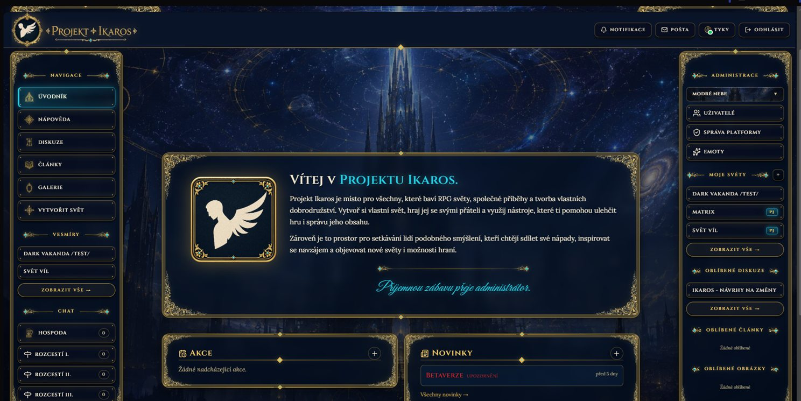
Projekt Ikaros v akci — herní stůl, svět a komunita na jednom místě, česky.
Část II
Co platforma umí dnes
Detailní průřez vším, co dnes reálně běží — od účtu a komunity přes celé herní světy, postavy a wiki až po bojovou mapu, kalendáře a komunikaci v reálném čase.
Část II — Co umíme
Účet, přihlášení & bezpečnost
Tohle je brána do celé platformy a zároveň tvůj sejf. V téhle kapitole uvidíš, co konkrétně z toho máš jako uživatel: vytvoříš si účet během pár vteřin a hned jsi uvnitř, přihlašuješ se klidně i z telefonu, zamkneš si identitu dvoufaktorovým ověřením, kdykoli si obnovíš zapomenuté heslo, bezpečně vyměníš e-mail — a když se rozhodneš odejít, máš třicet dní na to si to rozmyslet. Bezpečnost přitom není kolonka v nastavení, kterou bys musel/a sám/sama ladit. Je vetkaná do každého kroku: ochrana proti robotům, omezení frekvence pokusů, jednorázové klíče, šifrované tajné kódy a tichá obrana proti sledování běží na pozadí, aniž bys o nich musel/a vědět.
Co znamenají pojmy v této kapitole
Token = digitální „klíček", kterým prohlížeč prokazuje, že je přihlášený. Access token je krátkodobý průkaz pro každý požadavek, refresh token je dlouhodobý klíč pro vystavení nového průkazu. 2FA / TOTP = dvoufaktorové ověření pomocí jednorázových kódů z aplikace v telefonu. Captcha = test, který odliší člověka od robota. Throttling / rate-limit = strop, kolik pokusů smí kdo za minutu provést.
Přehled v číslech
~30 s
od registrace k prvnímu přihlášení
8
znaků min. heslo při změně/resetu
10
jednorázových záložních kódů 2FA
30 dní
platnost důvěryhodného zařízení
30 dní
ochranná lhůta po žádosti o smazání
5/min
limit pokusů o přihlášení (ochrana)
Vstup do platformy — rychle a bez ztráty kontextu
Registrace i přihlášení probíhají v elegantním vyskakovacím okně přímo nad úvodní stránkou. Co ti to dává: neztratíš nit toho, co jsi zrovna dělal/a — okno se zavře a ty pokračuješ přesně tam, kde jsi byl/a. A když se anonymní návštěvník pokusí otevřít stránku jen pro přihlášené, platforma si zapamatuje, kam mířil, a po přihlášení ho tam sama pošle (tzv. „login intent" — přesměrování podle záměru). Nikdo se tak po přihlášení neztratí na neutrálním rozcestí. Příklad: klikneš na odkaz na konkrétní diskuzi, platforma tě vyzve k přihlášení a hned po něm tě otevře přímo v té diskuzi, ne na úvodníku.
Registrace nového účtu
Vytvoření účtu ve vyskakovacím okně nad úvodníkem. Po úspěšném odeslání jsi okamžitě přihlášen/a — žádné zvláštní druhé přihlašování.
Co získáš: Vlastní účet za pár vteřin a hned přístup ke všemu, co platforma nabízí — bez čekání na potvrzovací e-mail, bez ručního přihlašování po registraci.
Jak to funguje: Vyplníš e-mail, přezdívku, heslo a jeho potvrzení a zaškrtneš souhlas s podmínkami (s odkazem na celé znění). Během psaní platforma živě kontroluje, zda je přezdívka i e-mail volný (ukazuje ikonu dostupnosti), zobrazuje indikátor síly hesla a umožňuje přepnout zobrazení hesla, aby ses nepřeklepl/a. Tlačítko „Vytvořit účet" se rozsvítí, až když captcha potvrdí, že jsi člověk, a přezdívka i e-mail jsou volné. Souhlas s podmínkami je povinný a platforma si ukládá jeho čas i verzi (kvůli GDPR). Po registraci ti na pozadí dorazí ověřovací e-mail.
Pro koho: Pro každého nového návštěvníka, který chce do hry — žádné oprávnění není potřeba.
Přihlášení
Přihlášení e-mailem nebo přezdívkou — co je ti zrovna po ruce.
Co získáš: Klidný návrat zpět: uvítací hláška a automatické přesměrování přesně tam, kam jsi mířil/a. Při přepnutí účtu ve stejné záložce ti navíc nikdy neprosákne nic z předchozího uživatele.
Jak to funguje: Zadáš „e-mail nebo přezdívku" a heslo (zobrazení hesla lze přepnout). Po ruce máš odkazy „Zapomněl/a jsi heslo?" a „Zaregistruj se". Přihlášení rozumí třem situacím — běžné přihlášení, účet naplánovaný ke smazání (nabídne obnovení) a účet chráněný dvoufaktorovým ověřením (vyžádá druhý krok). Při přihlášení se vyčistí veškerá dočasná data v prohlížeči. Účet zablokovaný správcem nebo smazaný se přihlásit nedokáže.
Pro koho: Pro každého vracejícího se uživatele.
Odhlášení (s pětivteřinovým „Vrátit")
Odhlášení s pojistkou proti omylu — pět vteřin lze akci vzít zpět.
Co získáš: Klid i při ukvapeném kliknutí. Než se relace opravdu ukončí, máš pět vteřin na „Vrátit" — když ses odhlásil/a omylem, zůstaneš přihlášen/a bez jediného dalšího kroku.
Jak to funguje: Klikneš na odhlášení; po dobu pěti vteřin svítí tlačítko „Vrátit". Po vypršení se relace ukončí, klíče se smažou a dočasná data se vyčistí. Odhlášení je idempotentní — funguje vždy bez chyby, i kdyby byl klíč už neplatný. Týká se konkrétní relace; existuje i samostatný mechanismus „odhlásit ze všech zařízení", který se navíc spustí automaticky při změně hesla.
Pro koho: Pro každého přihlášeného uživatele.
Obnova a správa přihlašovacích údajů
Reset zapomenutého hesla
E-mailový postup obnovy hesla pro toho, kdo se nemůže přihlásit.
Co získáš: Cestu zpět do účtu, i když si heslo vůbec nepamatuješ — a klid, že nikdo cizí nezjistí, jestli máš na platformě účet.
Jak na to: V okně „Zapomenuté heslo" zadáš e-mail a požádáš o odkaz. Platforma vždy zobrazí stejnou hlášku „Pokud e-mail existuje, poslali jsme odkaz" — záměrně, aby nešlo zjistit, které e-maily jsou registrované. Po kliknutí na odkaz z e-mailu zadáš nové heslo s potvrzením (s indikátorem síly a přepínáním zobrazení). Pokud odkaz chybí nebo je neplatný, prošlý či už použitý, platforma to srozumitelně vysvětlí a nabídne vyžádání nového.
Pro koho: Pro kohokoli, kdo se nemůže přihlásit (anonymní návštěvník).
Jak je reset chráněný
Odkaz platí jednu hodinu a vždy je aktivní jen jeden — nový si vyžádá zneplatnění předchozího. Úspěšný reset zároveň odhlásí všechna ostatní zařízení a zruší všechna důvěryhodná zařízení, takže pokud ti někdo heslo ukradl, tímto krokem ho z účtu vyhodíš. A pokud jsi měl/a účet naplánovaný ke smazání, úspěšný reset ho rovnou obnoví.
Ověření e-mailu
Potvrzení, že e-mailová adresa skutečně patří tobě, pomocí jednorázového odkazu z e-mailu.
Co získáš: Důvěryhodný odznak „Ověřeno" u profilu a jistotu, že ti obnova hesla i další e-maily opravdu dorazí na funkční adresu.
Jak na to: Po kliknutí na odkaz z e-mailu se ověření provede automaticky a zobrazí výsledek. Při neúspěchu si přihlášený uživatel nechá poslat nový odkaz. V profilu vidíš odznak „Ověřeno" / „Neověřeno" s tlačítkem „Poslat znovu". Ověřovací odkaz platí 24 hodin a vydává se automaticky už při registraci. Ověření je informativní — žádnou funkci ti neblokuje.
Pro koho: Pro každého (ověření přes odkaz) i přihlášeného (vyžádání nového odkazu).
Změna e-mailu
Bezpečná výměna e-mailové adresy s potvrzením na novou adresu a upozorněním na starou.
Co získáš: Možnost přesunout účet na novou adresu bez rizika, že o něj přijdeš — a okamžité varování na starou adresu, kdyby se o změnu pokusil někdo cizí.
Jak na to: V okně změny e-mailu vidíš svůj současný e-mail (jen ke čtení), zadáš nový e-mail a pro jistotu i aktuální heslo (opětovné ověření totožnosti). Po odeslání obdržíš potvrzovací odkaz na novou adresu; po kliknutí se změna dokončí. Platforma posílá dva e-maily — potvrzovací na novou a oznamovací na starou. Kdyby novou adresu mezitím zabral někdo jiný, platforma změnu při potvrzení odmítne. Chyby jako „špatné heslo", „stejný e-mail" nebo „e-mail je obsazený" se zobrazí přímo u příslušného pole.
Pro koho: Pro přihlášeného (žádost), pro kohokoli s odkazem (potvrzení).
Změna hesla (přihlášený)
Změna hesla přímo v profilu, v sekci Bezpečnost, se zadáním stávajícího hesla.
Co získáš: Rychlou cestu, jak si pravidelně měnit heslo — a zároveň jistič: po změně se všechna ostatní zařízení odhlásí, takže případného vetřelce jediným krokem odpojíš.
Jak na to: Zadáš současné heslo, nové heslo a jeho potvrzení. Platforma hlídá, že nové heslo není shodné se starým a má alespoň 8 znaků. Při špatném současném hesle se chyba zobrazí u pole. Po úspěšné změně se všechna ostatní zařízení automaticky odhlásí a všechna důvěryhodná zařízení se zruší.
Pro koho: Pro přihlášeného, na vlastním účtu.
Dvoufaktorové ověření a důvěryhodná zařízení
Dvoufaktorové ověření (2FA) přidává k heslu druhý zámek — jednorázový kód z aplikace v telefonu (Google Authenticator, Authy a podobné). Co ti to dává: i kdyby někdo znal tvoje heslo, bez kódu z tvého telefonu se nepřihlásí. A protože nikdo nechce kód opisovat při každém přihlášení doma, vlastní zařízení označíš jako důvěryhodné a 2FA se na něm 30 dní přeskakuje — bezpečnost máš, otravu ne.
Zapnutí a správa 2FA (TOTP)
Druhý faktor TOTP plus sada jednorázových záložních kódů pro případ ztráty telefonu.
Co získáš: Výrazně silnější ochranu účtu — i unesené heslo je k ničemu. Záložní kódy navíc zajistí, že se do účtu dostaneš, i kdyby ses ocitl/a bez telefonu.
Jak na to:Zapnutí tě provede průvodce — platforma vygeneruje tajný klíč i QR kód, ten naskenuješ aplikací (nebo opíšeš tajný klíč ručně), opíšeš vygenerovaný šestimístný kód a potvrdíš. Po aktivaci dostaneš 10 jednorázových záložních kódů, které se zobrazí jen jednou — ulož si je. Přihlášení s 2FA — po zadání hesla platforma vyžádá šestimístný kód nebo (přepínačem) záložní kód, s volbou „Důvěřovat tomuto zařízení 30 dní". Vypnutí 2FA vyžaduje opětovné zadání hesla a zruší všechna důvěryhodná zařízení. Vygenerování nových záložních kódů — opět s heslem, nová sada nahradí starou.
Pro koho: Pro každého přihlášeného, kdo chce maximální ochranu (správa v profilu, sekce Bezpečnost).
Důvěryhodná zařízení
Seznam zařízení, na kterých se 2FA na 30 dní přeskočí.
Co získáš: Pohodlí na vlastním počítači a telefonu (žádné opisování kódu pokaždé) a zároveň přehled, odkud jsi přihlášen/a — s možností jediným klikem odpojit zařízení, které poznat nechceš.
Jak na to: Prohlédneš si výpis zařízení s orientačním popiskem (např. „Chrome · Windows") a datem posledního použití; aktuální zařízení je označené. Odvoláš jedno konkrétní zařízení nebo všechna najednou. Popisek je hrubý odhad z údajů prohlížeče (žádné IP adresy ani geolokace). Změna hesla i vypnutí 2FA všechna zařízení automaticky odvolá.
Pro koho: Pro přihlášeného s aktivním 2FA (karta se objeví jen tehdy).
Životní cyklus účtu — odejdeš s klidem, vrátíš se beze ztrát
Smazání účtu s 30denní ochrannou lhůtou
Tebou vyžádané zrušení účtu s možností si to do 30 dní rozmyslet a účet obnovit.
Co získáš: Plnou kontrolu nad odchodem bez ukvapených ztrát. Máš celý měsíc, kdy se můžeš vrátit — a nemusíš se bát, že tvým odchodem zničíš hru ostatním, protože platforma nejdřív vyřeší předání světů, které vedeš.
Jak na to: Při otevření okna platforma nejdřív nezávazně spočítá a ukáže plán předání světů — co se stane s herními světy, kde jsi vypravěč (PJ). Pokud jsi v některém světě jediným vypravěčem bez zástupce (Pomocného PJ), smazání je zablokované a platforma vypíše takové světy (nejdřív předáš vedení). Jinak ti ukáže plán povýšení Pomocných PJ na plnohodnotné PJ, vyžádá opsání vlastní přezdívky a potvrzení — pak teprve provede ostrou žádost. Po odeslání jsi automaticky odhlášen/a.
Pro koho: Pro přihlášeného, na vlastním účtu (profil, sekce Účet).
Obnovení účtu během 30 dní
Vratnost odchodu — dokud běží ochranná lhůta, stačí jeden krok zpět.
Co získáš: Druhou šanci beze ztráty dat. Když si to rozmyslíš, vrátíš se k účtu se vším, co v něm bylo.
Jak na to: Po dobu 30 dní se buď prostě přihlásíš (platforma sama nabídne obnovu) nebo si resetuješ heslo — účet se reaktivuje. Stav i zrušení žádosti o smazání lze řešit i samostatně. Po 30 dnech proběhne anonymizace (viz níže).
Pro koho: Pro každého, kdo má účet naplánovaný ke smazání.
Proč anonymizace a ne úplné smazání
Po uplynutí 30 dní se účet anonymizuje, nikoli fyzicky maže. Kdyby se totiž vymazal i s příspěvky, rozpadly by se cizí diskuze, komentáře a herní záznamy, na které ostatní navazují. Anonymizace splní právo na zapomnění (osobní údaje zmizí), ale zachová celistvost komunitního obsahu — místo tvého jména se u tvých chatů, článků, galerie a diskuzí zobrazí neutrální „zesnulý" autor.
Export vlastních dat (GDPR)
Možnost stáhnout si vlastní data ve strukturovaném formátu podle GDPR.
Co získáš: Vlastnictví svých dat doslova v ruce — strojově čitelný balík všeho, co o tobě platforma vede, kdykoli si o něj řekneš.
Jak to funguje: Vyžádáš si strojově čitelný export vlastních dat na straně platformy. Schopnost je připravena na straně serveru; její zapojení do uživatelského rozhraní je plánováno jako navazující krok.
Pro koho: Pro přihlášeného, na vlastním účtu.
Obrana, kterou nemusíš zapínat
Velká část bezpečnosti je neviditelná — běží za tebou, ať si toho všimneš nebo ne. Co ti to dává: nemusíš být bezpečnostní expert, abys měl/a expertně chráněný účet. A protože platforma důsledně odděluje globální role (napříč celou platformou) od světových rolí (jen uvnitř konkrétního herního světa), nikdy se nestane, že by ti někdo z jedné hry sahal na celou platformu nebo naopak.
Globální role
Pravomoci napříč celou platformou.
Superadmin — nejvyšší správce platformy.
Admin — správce platformy.
Ikarus — privilegovaný komunitní účet.
Správce článků — schvaluje a spravuje články.
Správce galerie — schvaluje a spravuje galerii.
Správce diskuzí — schvaluje a moderuje diskuze.
Světové role
Pravomoci jen uvnitř konkrétního herního světa.
Žadatel — čeká na schválení vstupu.
Čtenář — smí číst veřejný obsah světa.
Hráč — aktivní účastník hry.
Korektor — pomáhá s obsahem.
Pomocný PJ — zástupce vypravěče.
PJ — pán jeskyně / vypravěč, vede svět.
Trvalá kontrola stavu účtu při každém požadavku
Tichá pojistka, která hlídá stav účtu nejen při přihlášení, ale při každém jednotlivém požadavku.
Co získáš: Jistotu, že zákaz platí okamžitě. Pokud byl účet smazán, zablokován nebo naplánován ke smazání, ztratí přístup ihned — ne až za pár dní, kdy by vypršel jeho přihlašovací klíč.
Jak to funguje: U každého chráněného požadavku platforma znovu ověří aktuální stav účtu a problematické účty odmítne na místě. Protože dlouhodobý přihlašovací klíč může žít několik dní, kontrola probíhá průběžně, ne jen jednou při přihlášení.
Pro koho: Interní bezpečnostní mechanismus, týká se všech přihlášených.
Captcha a omezení frekvence pokusů
Ochrana vstupu proti automatickým robotům a útokům hrubou silou.
Co získáš: Účet i platformu odolnou proti robotům a hádání hesel — aniž bys ty sám/sama něco nastavoval/a. Limity jsou navržené tak, aby nepřekážely běžnému uživateli, ale zastavily stroj.
Jak to funguje: Při registraci potvrdí widget Cloudflare Turnstile, že jsi člověk; doplňuje ho skrytý „honeypot" prvek, který tiše chytá roboty. Na všech citlivých místech navíc platí strop pokusů za minutu (např. přihlášení 5, registrace 10, žádost i reset hesla po 5, ověření e-mailu 30, kontrola dostupnosti přezdívky i e-mailu po 60, správa 2FA 15). Přihlášení a reset hesla captchu nepoužívají — chrání je právě tyto limity.
Pro koho: Týká se všech, neviditelně.
Rotace přihlašovacích klíčů a detekce zneužití
Dlouhodobý přihlašovací klíč se při každém použití obměňuje a platforma pozná, když ho někdo ukradne.
Co získáš: Ochranu i pro případ, že by ti někdo přihlašovací klíč ukradl — platforma krádež pozná a vetřelce i tebe odpojí, takže se rychle dozvíš, že je něco špatně, a přihlásíš se znovu na čistém základě.
Jak to funguje: Při obnově relace se vystaví nový klíč a starý se zneplatní. Pokud se někdo pokusí použít už zneplatněný (ukradený) klíč, platforma zruší celou „rodinu" klíčů a vyžádá nové přihlášení. Dlouhodobý klíč standardně platí 30 dní a je uložen v bezpečné podobě (httpOnly cookie), kam nemá přístup žádný skript v prohlížeči.
Pro koho: Interní bezpečnostní mechanismus.
Jednorázové bezpečnostní tokeny
Sdílený mechanismus jednorázových klíčků pro reset hesla, ověření a změnu e-mailu i druhý krok 2FA.
Co získáš: Klid, že odkazy z e-mailů, na které klikáš, jsou jednorázové a časově omezené — nedají se zneužít opakovaně a klíč pro reset hesla nejde zaměnit s ověřením e-mailu.
Jak to funguje: Platforma vystaví jednorázový klíček s omezenou platností; v databázi je vždy jen jeho zašifrovaná stopa, ne samotný klíč. Vždy je aktivní jen jeden klíč daného typu. Při použití rozliší, zda je klíč neplatný, už použitý nebo prošlý, a typy jsou navzájem oddělené. U druhého kroku 2FA umí klíč ověřit bez spotřebování, takže překlep nezmaří celé přihlášení.
Pro koho: Interní mechanismus, bez vlastní obrazovky.
Shrnutí kapitoly
Účet na Projektu Ikaros si vytvoříš během půl minuty a hned jsi ve hře — ale za tou jednoduchostí stojí vrstvená ochrana, o kterou se nemusíš starat: vstup hlídá captcha a omezení frekvence pokusů, identitu si můžeš zamknout dvoufaktorovým ověřením se záložními kódy a důvěryhodnými zařízeními, citlivé operace vyžadují opětovné zadání hesla, přihlašovací klíče se obměňují a hlídají proti krádeži a odchod je vratný po dobu 30 dní s následnou anonymizací, která chrání tvoje soukromí i celistvost komunity. Bezpečí účtu tu prostě dostaneš v ceně, i když je platforma zdarma.
Část II — Co umíme
Profil, uživatelé & přátelství
Profil je tvoje osobní vizitka i ovládací panel v jednom. Na jednom místě si nastavíš všechno o sobě: osobní údaje, dva nezávislé avatary (osobní a herní postavu), text „něco o mně", vzhled celé platformy, jemné ladění barev, předvolby soukromí, bezpečnost i správu samotného účtu. A protože hraní je společenská zábava, máš tu i veřejný profil ostatních, komunitní adresář uživatelů a kompletní systém přátelství — se žádostmi, blokacemi a chytrou obranou proti obtěžování. Co ti to dává: jedno místo, kde si platformu uděláš svou a kde si pohlídáš, kdo tě vidí a kdo tě může oslovit.
Co znamenají pojmy v této kapitole
Avatar = obrázek představující uživatele. Postava v Rozcestí = herní identita pro veřejné platformové chaty (Hospoda a Rozcestí) — má vlastní jméno, popis i avatar oddělený od osobního profilu. Motiv (téma) = vizuální vzhled celé platformy (barvy, ornamenty). Adresář = veřejný seznam uživatelů. Friend-only = nastavení „jen pro přátele", které omezuje, kdo tě uvidí a kdo ti smí napsat první.
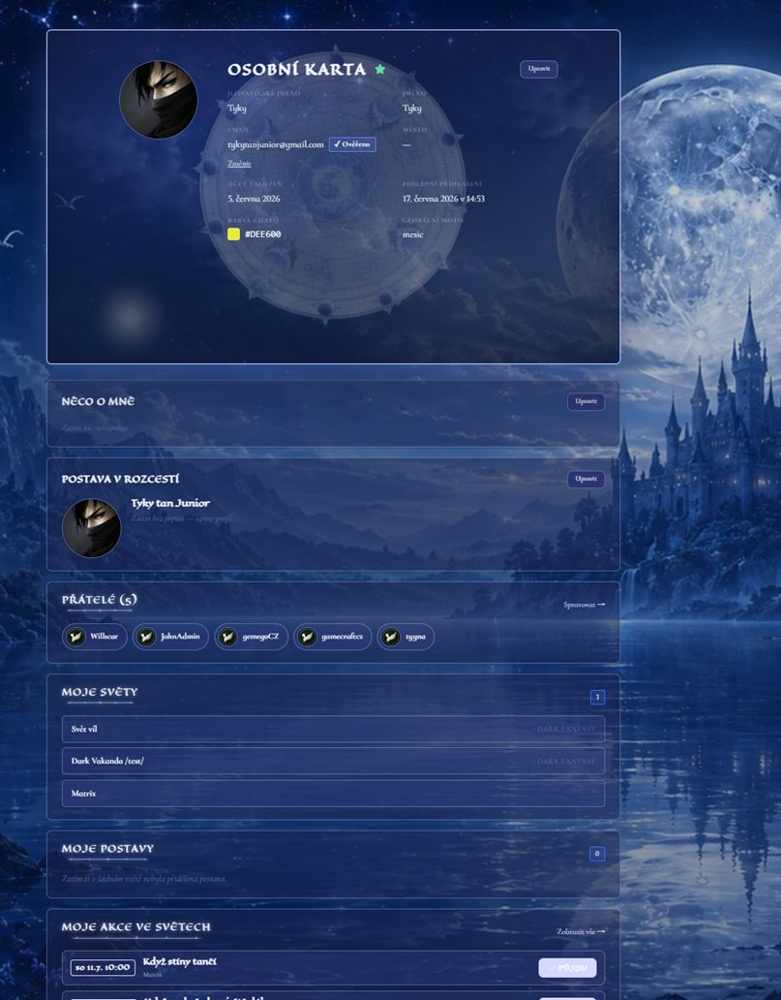
Veřejný profil uživatele — osobní karta s avatarem a rolí nahoře, „něco o mně", postava v Rozcestí a sekce světů, postav a komunity níže.
Vlastní profil — uděláš si platformu svou
Vlastní profil je jedna přehledná stránka rozdělená do logických sekcí, které jdou shora dolů od osobních údajů přes vzhled a soukromí až po bezpečnost a správu účtu. Co ti to dává: nemusíš nic hledat v desítkách menu — většinu polí upravíš přímo na místě. Přepneš do režimu úprav, změníš, co chceš, a uložíš.
Osobní karta
Hlavička profilu se základními údaji a osobním avatarem.
Co získáš: Přehlednou vizitku, kterou uvidí ostatní — jméno, město, jak dlouho jsi na platformě, kdy jsi byl/a naposledy a tvoji roli. Vše máš na očích a pod kontrolou.
Jak na to: Vidíš uživatelské jméno, zobrazované jméno, e-mail (s odznakem ověření a tlačítky „Poslat znovu" a „Změnit"), město, datum založení účtu, poslední přihlášení, barvu chatu (vzorek i hexadecimální kód), globální motiv a hvězdu role. V režimu úprav měníš zobrazované jméno (max 32 znaků), město (max 100 znaků) a nahráváš osobní avatar (do 5 MB, platforma jej automaticky zmenší na 512 pixelů). E-mail je v úpravách jen ke čtení a mění se zvláštním oknem.
Pro koho: Pro přihlášeného, na vlastním účtu.
Něco o mně
Volný text, kde se představíš.
Co získáš: Prostor říct komunitě, kdo jsi a co hraješ rád/a — první dojem, který pomůže ostatním rozhodnout, jestli tě pozvat do hry nebo přijmout do přátel.
Jak na to: Napíšeš osobní popisek až do 1000 znaků (s počítadlem). Zobrazuje se i na veřejném profilu, takže ho uvidí ostatní.
Pro koho: Pro přihlášeného, na vlastním účtu.
Postava v Rozcestí
Globální herní identita pro veřejné platformové chaty (Hospoda a Rozcestí), oddělená od osobního profilu.
Co získáš: Možnost vystupovat ve veřejných chatech pod herním jménem a tváří, ne pod skutečnou přezdívkou — kus role-play už na úrovni platformy, dřív než vůbec vstoupíš do nějakého světa.
Jak na to: Nastavíš jméno postavy (max 64 znaků), popis postavy (max 1000 znaků) a samostatný avatar postavy (do 5 MB, platforma zmenší na 256 pixelů). Pokud avatar chybí, použije se výchozí obrázek bytosti. Tato postava je společná napříč platformovými chaty.
Pro koho: Pro přihlášeného, na vlastním účtu.
Vzhled platformy
Volba motivu a jemné ladění vzhledu pro celou platformu.
Co získáš: Platformu, která vypadá tak, jak ti vyhovuje — od celkového motivu až po jas, kontrast a vlastní barvy. A protože se nastavení synchronizuje, máš stejný vzhled na počítači i mobilu.
Jak na to: Vybereš globální motiv (přepínačem motivů), jemně doladíš vzhled posuvníky jasu a kontrastu v rozsahu 70–130 % a přebiješ konkrétní barvy vlastními (override). Samostatně nastavíš barvu chatu jako hexadecimální kód. Motiv i ladění se ukládají lokálně i na server.
Pro koho: Pro přihlášeného, na vlastním účtu.
Soukromí
Tři přepínače, kterými rozhoduješ, jak tě ostatní vidí.
Co získáš: Plnou kontrolu nad svou viditelností — od neviditelného módu přes skrytí v adresáři až po režim „jen pro přátele". Ty určuješ, kdo tě vidí a kdo tě smí oslovit.
Jak na to: Zapneš Neviditelný mód (ostatní nevidí, že jsi online; po přepnutí se obnoví spojení), Skrýt v adresáři uživatelů (nezobrazuješ se v komunitním seznamu) a Jen pro přátele (veřejný profil i první zprávu uvidí pouze přátelé). Skrytí v adresáři přitom neplatí vůči správcům platformy — ti tě kvůli moderaci vidí.
Pro koho: Pro přihlášeného, na vlastním účtu.
Profil dále obsahuje sekci Bezpečnost (žádost o změnu přezdívky se schválením a 30denní prodlevou, změna hesla, dvoufaktorové ověření a důvěryhodná zařízení — vše popsáno v kapitole o účtu a bezpečnosti) a sekci Účet (smazání účtu, případně upozornění na naplánované smazání). Nechybí ani dynamické sekce Přátelé (kompaktní výpis s odkazem do správy), Světy, Moje postavy a Akce, které ti sbírají data napříč všemi tvými herními světy na jedno místo — nemusíš obíhat jednotlivé světy, abys věděl/a, kde tě co čeká.
Co se chystá
Sekce „Moje diskuze / Moje články / Moje galerie" v profilu jsou zatím připravené jako náhled s informací o brzkém zpřístupnění — samotné moduly diskuzí, článků a galerie přitom plně fungují na svých vlastních stránkách (viz kapitola Komunitní obsah). Až dorazí, uvidíš svůj komunitní obsah pohromadě rovnou v profilu.
Dva nezávislé avatary
Osobní avatar a avatar herní postavy lze nastavit zcela odděleně.
Co získáš: Oddělenou tvář pro „sebe" a pro „svou postavu" — můžeš být v komunitě jako reálná osoba a zároveň vystupovat v chatech pod jinou herní identitou.
Jak na to: Nahraješ nebo smažeš osobní avatar (platforma jej zmenší na 512 pixelů) a samostatně nahraješ nebo smažeš avatar postavy (zmenšení na 256 pixelů). Maximální velikost souboru je 5 MB. Pokud avatar chybí, použije se výchozí obrázek podle volby (muž / žena / bytost).
Pro koho: Pro přihlášeného, na vlastním účtu.
Veřejný profil a adresář — komunita na dosah
Veřejný profil jiného uživatele
Profil ostatních uživatelů ke čtení, doplněný o akční zónu (přátelství, blokace, zpráva).
Co získáš: Možnost poznat ostatní hráče dřív, než s nimi začneš hrát — kdo to je, kolik světů má za sebou, co o sobě píše — a rovnou jim podat ruku (přidat do přátel) nebo napsat zprávu.
Jak na to: Prohlédneš si hlavičku, kartu (role, počet světů, naposledy viděn), text „něco o mně" a postavu v Rozcestí. Z akční zóny podle vztahu: přidáš do přátel, zrušíš odeslanou žádost, přijmeš nebo odmítneš příchozí žádost, odebereš z přátel (s potvrzením), odblokuješ. V postranní nabídce je možnost blokovat uživatele (s potvrzením) a vždy je po ruce „Napsat zprávu", která vede do pošty.
Pro koho: Pro každého přihlášeného uživatele.
Soukromí má vždy přednost
Pokud má uživatel zapnuté „Jen pro přátele", nepřítel jeho profil neuvidí. Smazané a rušené účty (náhrobky) vidí pouze správci platformy; běžnému uživateli se nezobrazí vůbec. Údaj „naposledy viděn" se skrývá při neviditelném módu a poslední přihlášení vidí jen správce platformy. Změna role, banu nebo jména se v cizím profilu projeví okamžitě (živá aktualizace).
Seznam uživatelů (komunitní adresář)
Adresář komunity rozdělený do tří záložek.
Co získáš: Místo, kde najdeš spoluhráče — prohledáš komunitu, spravuješ své přátele a na jednom místě vyřídíš vše, co po tobě někdo chce (žádosti, schvalování, nahlášení).
Jak na to: Přátelé — „Moji přátelé" (mřížka karet s nabídkou Otevřít / Odebrat), „Odeslané žádosti" (rozbalovací) a „Zablokovaní" (rozbalovací, výchozí sbalené); prázdný stav nabízí přechod do adresáře.
Uživatelé — mřížka veřejných karet s vyhledáváním podle přezdívky nebo jména, řazením (Nejnovější / Abecedně) a stránkováním po 24.
Zpracovat — osobní fronta čekajících akcí, která sdružuje vše, co po tobě něco chce: žádosti o přátelství, žádosti o změnu přezdívky, žádosti o vstup do světa, články, galerie a diskuze ke schválení, nahlášené příspěvky a žádosti o vstup do diskuze. U záložky svítí odznak s počtem; skupiny bez položek se skryjí.
Pro koho: Pro každého přihlášeného uživatele; všichni vidí stejné tři záložky, obsah „Zpracovat" se ale liší podle reálných pravomocí — schvalování článků uvidí jen příslušný správce, žádosti o vstup do světa jen vypravěč atd.
Přátelství a blokace — komfort i ochrana
Systém přátelství staví na žádostech s jasnými stavy a obsahuje promyšlenou ochranu proti obtěžování — od prodlevy po odmítnutí až po tichou obranu před sledováním. Co ti to dává: snadno si vybuduješ okruh spoluhráčů a zároveň máš účinný nástroj, jak se zbavit někoho, kdo tě obtěžuje, aniž by to vůbec poznal.
Kompletní systém přátelských vztahů se stavy a ochrannou prodlevou.
Co získáš: Vlastní okruh přátel, který ti otevírá i jinak soukromé profily a poštu — a jistotu, že po odmítnutí tě dotyčný hned znovu nezahltí.
Jak na to: Pošleš žádost o přátelství; příchozí žádost přijmeš (jen adresát); odmítneš, zrušíš nebo odebereš přátele; zjistíš aktuální stav vztahu (žádný / odeslaná čeká / příchozí čeká / přátelé / blokuji / prodleva po odmítnutí); zobrazíš seznam přátel a přehled odeslaných žádostí. Po odmítnutí platí pro odmítnutého 7denní prodleva, než smí poslat žádost znovu — adresát naopak může poslat žádost zpět kdykoli. Žádosti a odpovědi se doručují živě (vyskakující upozornění).
Pro koho: Pro každého přihlášeného uživatele.
Blokace uživatelů
Zablokování uživatele s tichou obranou proti sledování.
Co získáš: Účinný klid od kohokoli nepříjemného. Po zablokování se vůči němu platforma chová, jako bys vůbec neexistoval/a — nedozví se, že jsi ho zablokoval/a, a nedostane se k tobě jinou cestou.
Jak na to: Zablokuješ uživatele (zároveň se zruší případné vzájemné přátelství), odblokuješ ho a prohlédneš si seznam vlastních blokací. Pokud tě zablokoval někdo jiný, jeho pokus o žádost o přátelství i dotaz na stav vztahu nedají najevo, že jde o blokaci.
Pro koho: Pro každého přihlášeného uživatele.
Napsat zprávu (návaznost na poštu)
Z veřejného profilu vede přímý odkaz do soukromé pošty.
Co získáš: Nejkratší cestu, jak někoho oslovit — z jeho profilu rovnou do pošty s předvyplněným příjemcem.
Jak na to: Klikneš na „Napsat zprávu", otevře se pošta s předvyplněným příjemcem a začneš psát. Nastavení „Jen pro přátele" omezuje, kdo smí napsat první; správci a lidé, kterým už uživatel sám psal, mají přístup vždy. Detail pošty je popsán v samostatné kapitole.
Pro koho: Pro každého přihlášeného uživatele.
Shrnutí kapitoly
Profil je tvoje osobní centrum: nastavíš si v něm vzhled celé platformy, dva oddělené avatary, herní postavu pro veřejné chaty i jemné předvolby soukromí — a všechno se ti synchronizuje napříč zařízeními. Veřejné profily a adresář propojují komunitu, ale soukromí má vždy přednost: „jen pro přátele", skrytí v adresáři a neviditelný mód ti dávají plnou kontrolu nad tím, jak jsi vidět. Systém přátelství doplňuje promyšlená ochrana — prodleva po odmítnutí a tichá obrana proti sledování, která tomu, koho blokuješ, ani nedá poznat, že byl zablokován.
Část II — Co umíme
Úvodník & objevování světů
Tahle kapitola je o tom, jak se z návštěvníka stane hráč a z hráče vypravěč. Najdeš tu vstupní stránku, která tě uvítá a hned ukáže nejbližší dění, přehled herních světů (na platformě jim říkáme „vesmíry") pro objevování a vstup do hry — a hlavně bohatého průvodce tvorbou vlastního světa. Co ti to dává: ať chceš jen zkusit hru, kterou vede někdo jiný, nebo postavit vlastní kampaň od základů, začneš během pár minut. Z holého formuláře vznikne hotový svět s pravidly, kalendářem, měnami i připravenými stránkami — a ty rovnou hraješ.
Co znamenají pojmy v této kapitole
Svět („vesmír") = samostatná herní kampaň s vlastními pravidly, hráči, stránkami a obsahem. PJ (pán jeskyně / vypravěč) = zakladatel a vůdce světa. Seedování = automatické předpřipravení obsahu při založení (stránky, měny, kalendář, kostky…). Přístupový režim = nastavení, kdo svět vidí a jak se do něj dá vstoupit. Leak-safe = záruka, že soukromé světy se nikomu nezobrazí, ani se neprozradí jejich existence.
Úvodní stránka — uvítá tě a ukáže, co se děje
Úvodník (rozcestník)
Vstupní stránka platformy s uvítáním a nejbližším děním.
Co získáš: Hned po příchodu přehled, co se na platformě chystá — nejbližší globální akce a poslední novinky — a rychlé tlačítko, jak se přihlásit nebo zaregistrovat. Žádné dlouhé hledání, kde začít.
Jak to funguje: Vidíš uvítací kartu (vždy, pro každého), sekci nadcházejících globálních akcí (jen pro přihlášené — zobrazí nejbližší tři s odkazem na kalendář akcí) a sekci platformových novinek (první tři, s odkazem na všechny novinky; vidí je i anonym). Přes adresu lze automaticky otevřít okno přihlášení, registrace nebo obnovy hesla. Akce a novinky na úvodníku jsou globální platformové, ne ze světů.
Pro koho: Pro každého — anonymní návštěvník i přihlášený uživatel. Správce platformy má přímo zde tlačítka „+" pro rychlé přidání akce nebo novinky.
Objevování světů — najdeš, kam se přidat
Seznam vesmírů (přehled světů)
Mřížka aktivních světů s hledáním, filtrem a řazením — vstupní bod pro objevování a vstup do hry.
Co získáš: Rozcestí ke všem otevřeným hrám na platformě — proklikáš si, co tě láká podle žánru a volných míst, a jedním klikem vstoupíš nebo požádáš o vstup. Příklad: hledáš hororovou kampaň, kde je ještě místo? Seřadíš podle volných míst a filtruješ veřejné — a máš pár kandidátů během vteřin.
Jak to funguje:Hledáš podle názvu světa; filtruješ podle přístupu (Vše / Veřejné / Mé světy — poslední jen pro přihlášené podle členství); řadíš (Nejnovější jako výchozí / Abecedně / Volná místa). Kliknutím na kartu světa se dostaneš na jeho úvodní stránku. Karta nabízí „Vstoupit do světa" členovi, jinak „Detail světa" a ukazuje hlavní obrázek nebo glóbus, název, žánr, počet hráčů (a kapacitu, pokud je nastavená) a u člena odznak jeho světové role. Vyhledávání, filtr i řazení běží okamžitě v prohlížeči.
Pro koho: Pro každého — anonym i přihlášený. O tom, kdo co uvidí, rozhoduje platforma.
Bezpečné objevování (leak-safe)
Seznam světů zásadně nikdy nevypíše soukromý ani uzavřený svět — nezávisle na tom, kdo je přihlášený. Soukromé světy, jejichž jsi členem, se ti přidají z tvého vlastního seznamu členství. Detail soukromého světa se navíc nečlenovi tváří, jako by neexistoval (vzor „soukromé úložiště u GitHubu") — nikdo se tak nedozví ani to, že takový svět existuje. Co ti to dává jako vypravěči: klid, že tvoje uzavřená kampaň zůstane opravdu soukromá.
Čtyři přístupové režimy světa
Při zakládání světa si vybíráš, jak moc je otevřený. Tabulka shrnuje, co která volba znamená pro hráče i pro tebe jako vypravěče.
Režim
Kdo svět vidí
Jak vstoupit
Veřejný
každý (i v seznamu)
vstup okamžitě, ve roli Čtenář
Otevřený
každý (i v seznamu)
žádostí, kterou schvaluje vypravěč
Soukromý
jen člen, autor čekající žádosti a správce platformy
v seznamu se nezobrazí; nečlenovi se tváří jako neexistující
Uzavřený
v seznamu skryt, detail jen přes přímý odkaz
vstup není možný
Tvorba vlastního světa — z formuláře hotová kampaň
Vytvoření světa je srdcem platformy. Co ti to dává: z prázdné stránky vznikne hotová herní kampaň s pravidly, kalendářem, měnami i předpřipravenými stránkami — nemusíš nic psát od nuly. Formulář je přehledně rozdělený do sekcí, které vyplníš v libovolném pořadí, a o zbytek se postará platforma.
Vytvoření světa
Bohatý formulář, který založí nový herní svět a předpřipraví jeho obsah. Zakladatel se automaticky stává vypravěčem (PJ) svého světa.
Co získáš: Vlastní herní svět připravený k hraní během několika minut — a v něm rovnou roli vypravěče s plnou kontrolou. Žádné technické nastavování serverů, žádné psaní pravidel od základu.
Jak na to — sekce formuláře: 1. Základní info — Název (2–60 znaků), Adresa světa (vygeneruje se z názvu, lze ručně přepsat, platforma živě kontroluje dostupnost) a Popis (max 1000 znaků).
2. Žánr — výběr z jedenácti žánrů plus „Vlastní": Fantasy, Dark Fantasy, Sci-Fi, Cyberpunk, Steampunk, Post-apokalypsa, Horor, Mystery, Historický, Současnost, Western. Podle žánru se navrhne výchozí vizuální motiv světa.
3. Hráči — volný text „Koho hledáte" (max 500 znaků) a nepovinná kapacita (1–999 hráčů), která se použije pro řazení podle volných míst.
4. Přístupový režim — Soukromý (výchozí), Otevřený, nebo Veřejný.
5. Herní systém — výběr z třinácti voleb: Ikaros pravidla (výchozí), D&D 5e, Jeskyně a Draci, Dračí Doupě 1.6, Dračí Doupě Plus, Dračí Doupě II, Dračí Hlídka, Příběhy Impéria, Shadowrun, GURPS, Fate, Call of Cthulhu a Vlastní Systém. Volba systému chytře přednastaví sadu kostek.
6. Technologie — rozsah technologické úrovně „od–do" (0 až 14, výchozí středověk). Z volby se připraví stránka „Technologie".
7. Magie — vícenásobný výběr ze třinácti magických tradic: Vílí, Božská, Šamanská, Runová, Akademická, Krevní, Démonická, Nekromantická, Psionická, Přírodní, Kosmická, Snová a Alchymická. Z výběru se připraví stránka „Magický systém".
8. Motiv — výchozí podle žánru, lze ručně přepsat.
9. Kalendáře — výběr z přednastavených kalendářů (výchozí je zaškrtnutý Gregorián a zároveň označený jako hlavní); první zaškrtnutý se stane hlavním, hvězdičku lze přepnout.
Pro koho: Pro každého přihlášeného uživatele. Běžný uživatel může mít až 30 aktivních světů, správce platformy bez omezení.
Dobré vědět
Technologická úroveň a magické tradice se volí jen při tvorbě světa — později se mění výhradně úpravou textu připravených stránek „Technologie" a „Magický systém". Než tedy klikneš na vytvoření, krátce promysli, jak „vyspělý" a „kouzelný" má tvůj svět být. Po úspěšném založení tě platforma rovnou přesměruje dovnitř, takže můžeš začít pracovat na obsahu.
Co všechno za tebe platforma při založení udělá (seedování)
Z holého formuláře vznikne plně vybavený svět. Platforma sama vytvoří:
Vedení světa — jako zakladatel dostaneš roli vypravěče (PJ).
Sadu kostek — pokud nebyla zadána, doplní se podle zvoleného herního systému.
Měny — sada peněz odpovídající žánru.
Počasí — výchozí počasí podle žánru.
Kalendáře — podle výběru; lze i svět zcela bez kalendáře, případně se doplní výchozí Gregorián.
Schéma deníku — připraví se podle zvoleného systému.
Stránky světa — Pravidla, Magický systém, Technologie, FAQ a Videa. Pravidla obsahují tahák podle systému, Technologie univerzální škálu s vybraným rozsahem a Magický systém škálu s vybranými tradicemi. U systému Ikaros pravidla se Pravidla, Magie a Technologie nahradí kompletní „Pravidlovou knihou" (kapitoly 1 až 9).
Shrnutí kapitoly
Vstupní brána Projektu Ikaros tě vede od přívětivého úvodníku, který každému hned ukáže nejbližší dění, přes bezpečný přehled světů, kde se soukromé kampaně nikdy neprozradí, až k mocnému průvodci tvorbou světa. Z několika voleb — žánr, systém, technologie, magie, kalendář — ti platforma automaticky postaví hotovou herní kampaň s pravidly, měnami, kostkami i připravenými stránkami. Ať chceš jen hrát, nebo vést vlastní příběh, můžeš začít během pár minut a zdarma.
Část II — Co umíme
Komunitní obsah
Hraní nekončí u herního stolu. Vedle samotných světů žije na Projektu Ikaros pestrý komunitní život na úrovni celé platformy: znalostní články s kategoriemi a hodnocením, obrázková galerie, diskuzní fórum a oficiální novinky platformy. Co ti to dává: prostor sdílet, co tě baví, učit se od ostatních a být součástí komunity i mimo vlastní hru — napsat návod, ukázat svou kresbu postavy, zeptat se na pravidla nebo se dozvědět, co je na platformě nového. Tvořit může každý přihlášený; o kvalitu se stará jednoduché schvalovací řízení.
Co znamenají pojmy v této kapitole
Komunitní obsah = obsah platformy mimo herní světy. Schvalovací řízení = příspěvek projde stavy Koncept → Čeká na schválení → Publikováno (případně Vráceno). Recenzent = uživatel s globální rolí, který obsah schvaluje. Fronta ke zpracování = přehled čekajících příspěvků, který se zobrazuje recenzentům. Web push = upozornění doručené i na zamčený telefon.
Jak komunitní obsah funguje — tvoříš bez bariér, kvalitu hlídá recenze
Všechny čtyři moduly sdílejí společné principy. Co ti to dává: nemusíš mít žádnou speciální roli, abys mohl/a přispět — psát smí každý přihlášený. Publikuje se ale až po schválení recenzentem, takže se komunita nebrodí spamem a nekvalitním obsahem. Anonymní návštěvník i běžný uživatel vidí jen publikované položky, recenzent vidí navíc položky čekající na schválení. Čekající fronta se recenzentovi zobrazuje nejen na stránce daného modulu, ale i v centru notifikací v záložce „Ke zpracování" a jako odznak s počtem u položek v menu.
Kdo co spravuje
Komunitní obsah řídí pouze globální role.
Superadmin a Admin — mají plný dosah napříč všemi moduly.
Správce článků — schvaluje a spravuje články.
Správce galerie — schvaluje a spravuje galerii.
Správce diskuzí — schvaluje a moderuje diskuze.
Schvalovací cesta příspěvku
Stavy, kterými tvůj obsah prochází.
Koncept — rozepsaná, neodeslaná položka.
Čeká na schválení — odesláno recenzentovi.
Publikováno — schváleno, viditelné všem.
Vráceno — recenzent vrátil s důvodem k úpravě.
Články — sdílej a uč se
Články — čtení a objevování
Komunitní znalostní články s kategoriemi, hodnocením, oblíbenými a sledováním přečtení.
Co získáš: Živou znalostní bázi komunity — návody, příběhy, tipy k pravidlům i zákulisí her. Můžeš si je vyhledat, ohodnotit, uložit do oblíbených, připnout si ty nejdůležitější po ruce a platforma ti hlídá, co už jsi přečetl/a.
Jak to funguje: Čteš publikované články a fulltextově je vyhledáváš. Záložky nabízejí seznam publikovaných, „Moje", frontu „Zpracovat" (jen recenzent) a statistiky. Přihlášený může článek hodnotit 1–5 hvězdičkami s volitelným komentářem (jen u publikovaných), označit oblíbeným a připnout do postranního panelu (max 5). Platforma sleduje stav přečtení a ukazuje odznak nepřečtených; článek se označí přečteným automaticky, když ho skutečně čteš (po zobrazení větší části a chvíli na stránce). K dispozici je i historie revizí (pro autora a správce).
Pro koho: Čtení je veřejné (i pro anonyma) — anonym vidí jen publikované, recenzent navíc čekající, přihlášený autor i své vlastní rozepsané.
Články — psaní, editace a schvalování
Tvorba a úprava článku v textovém editoru a recenzní řízení.
Co získáš: Vlastní hlas v komunitě. Napíšeš článek v pohodlném editoru, který ti průběžně ukládá koncept, a po schválení ho uvidí všichni. Jako recenzent navíc dostaneš nástroje, jak rychle a férově spravovat příspěvky ostatních.
Jak na to: Vyplníš titulek, vybereš kategorii a napíšeš obsah v plnohodnotném textovém editoru s automatickým ukládáním konceptu. Uložíš jako koncept nebo odešleš ke schválení. Recenzent může článek schválit (publikovat), vrátit s poznámkou (s důvodem) a provádět hromadné schválení i hromadné vrácení více článků najednou. Obrázek se vkládá rovnou do těla článku přes editor.
Pro koho: Psát smí každý přihlášený; upravovat jen autor a jen ve stavu Koncept nebo Vráceno; schvalovat a vracet recenzent (Superadmin, Admin, Správce článků). Kategorie vytváří a upravuje Admin nebo Superadmin, mazat smí jen Superadmin.
Jak probíhá schválení v praxi
Když odešleš článek ke schválení, recenzentům automaticky dorazí systémová pošta. Ty pak dostaneš zprávu při schválení i při vrácení — a pokud byl článek vrácen, uvidíš důvod přímo u něj a můžeš ho rovnou opravit a poslat znovu. Po odeslání nelze článek upravovat, dokud není vrácen, aby recenzent nehodnotil pohyblivý cíl.
Galerie — ukaž svou tvorbu
Galerie — prohlížení a nahrávání
Komunitní obrázková galerie s kategoriemi, hodnocením, oblíbenými a schvalovacím řízením.
Co získáš: Místo, kde předvedeš svou tvorbu — kresby postav, mapy, fotky figurek — a kde nasbíráš inspiraci od ostatních. Své oblíbené obrázky si uložíš a ty nejlepší připneš po ruce.
Jak na to:Nahraješ obrázek (do 10 MB) s titulkem, popisem a kategorií, uložíš jako koncept nebo odešleš ke schválení. Upravíš titulek, popis a kategorii (ne samotný soubor) ve stavu Koncept nebo Vráceno. Publikovaný obrázek lze hodnotit 1–5 hvězdičkami s textem, označit oblíbeným a připnout (max 5). Recenzent obrázek schválí nebo zamítne s důvodem.
Pro koho: Prohlížení je veřejné (i pro anonyma); nahrávat a upravovat smí každý přihlášený; schvaluje recenzent (Superadmin, Admin, Správce galerie). Kategorie vytváří a upravuje Admin nebo Superadmin, mazat smí jen Superadmin.
Bezpečné nahrávání obrázků
Organizace probíhá přes kategorie — samostatná „alba" galerie nemá; jeden upload = jeden obrázek. Z bezpečnostních důvodů jsou povolené jen formáty JPEG, PNG, GIF a WebP; formát SVG je záměrně zakázaný a typ souboru se ověřuje i podle skutečného obsahu, ne jen podle přípony. Co ti to dává navíc: při nahrání platforma z obrázku automaticky odstraní metadata včetně GPS polohy — nezveřejníš omylem, kde jsi fotku pořídil/a.
Diskuze — ptej se, debatuj, domluv hru
Diskuze — vlákna a příspěvky
Platformové fórum se schvalováním vláken, příspěvky, lajky, správci vlákna, pozvánkami a moderací nahlášených příspěvků.
Co získáš: Vlastní fórum komunity, kde založíš vlákno na cokoli — hledání spoluhráčů, debata o pravidlech, sdílení zážitků — a moderuješ ho po svém. Můžeš si vlákno uzamknout a zvát do něj jen vybrané lidi, nebo ho nechat otevřené všem.
Jak na to: Založíš diskuzi (titulek, popis), píšeš příspěvky v textovém editoru a stránkovaně je načítáš. Diskuzi lajkuješ, dáváš do oblíbených a připínáš (max 5). Jako správce vlákna přidáváš a odebíráš další správce, zveš uživatele a řešíš žádosti o přidání do uzamčené diskuze. V rámci moderace nahlásíš cizí příspěvek, smažeš vlastní příspěvek (autor) nebo cizí (správce či admin) a recenzent vyřeší nahlášení (s volbou rovnou smazat příspěvek).
Pro koho: Diskuze jsou jen pro přihlášené — anonym je vůbec nevidí. Založit smí každý přihlášený (běžnému uživateli jde diskuze do schvalování, recenzent a admin mají rovnou schváleno). Spravovat vlákno smí jeho tvůrce, jmenovaní správci a admin. Schvalovat a řešit nahlášení smí recenzent (Superadmin, Admin, Správce diskuzí).
Novinky platformy — vždy víš, co je nového
Novinky platformy
Oficiální oznámení Projektu Ikaros, viditelná na úvodníku i na vlastní stránce.
Co získáš: Jistotu, že ti neunikne nic důležitého — nové funkce, akce, oznámení. Novinka tě zastihne i na zamčeném telefonu díky push upozornění, takže nemusíš nic ručně sledovat.
Jak to funguje: Čteš aktivní novinky (se stránkováním); první tři vidíš rovnou na úvodníku. Admin novinku vytvoří (titulek, text v editoru, typ, volitelný obrázek), upraví, archivuje i odarchivuje a smaže. Vytvoření novinky odešle web push upozornění na všechna zaregistrovaná zařízení. Po každé změně se zobrazení novinek u všech uživatelů samo obnoví; archivace novinku jen skryje z aktivního přehledu (data zůstávají) a obsah se před uložením bezpečnostně očišťuje.
Pro koho: Čtení aktivních novinek je veřejné (i pro anonyma). Vytvářet, upravovat, archivovat a mazat smí jen Admin nebo Superadmin (správci jednotlivých modulů sem přístup nemají); archivované novinky vidí jen Admin nebo Superadmin.
Kdo co vidí a tvoří — přehledně
Modul
Vidí anonym
Tvoří
Schvaluje
Články
ano (publikované)
každý přihlášený
Správce článků / Admin
Galerie
ano (publikované)
každý přihlášený
Správce galerie / Admin
Diskuze
ne
každý přihlášený
Správce diskuzí / Admin
Novinky
ano (aktivní)
Admin / Superadmin
není potřeba (rovnou publikuje admin)
Shrnutí kapitoly
Komunitní obsah dává platformě život i mimo herní stoly — a tobě prostor být její součástí. Napíšeš znalostní článek, ukážeš svou tvorbu v galerii, otevřeš diskuzi nebo se jen dozvíš poslední novinky. Tvořit může každý, o kvalitu se stará schvalovací řízení a oddělené role správců. Drobnosti jako hvězdičkové hodnocení, oblíbené, připínání, sledování přečtení, bezpečná ochrana nahrávaných souborů a šetrné náhrobky po zrušených autorech dělají z komunitní části kultivovaný a bezpečný prostor, kam se budeš rád/a vracet.
Část II — Co umíme
Komunikace platformy
Hrát příběhy je krásné — ale to nejlepší na Ikarovi je, že nikdy nehraješ sám. Mezi sezeními, mezi světy, ve dvě ráno před spaním: vždycky je kde se potkat s ostatními. Platforma ti dává hned několik způsobů, jak být ve spojení — od bezstarostného pokecu v hospodě přes atmosférický roleplay až po soukromou poštu a notifikace, které tě upozorní, i když máš telefon v kapse. Tahle kapitola ti ukáže, co každý z těch kanálů nabízí a co konkrétně z něj máš ty.
Dvě roviny komunikace — ať se neztratíš
Všechno v téhle kapitole je platformové: žije to mimo konkrétní herní svět a je to dostupné každému přihlášenému, ať patří kamkoli. Chat uvnitř tvého světa (s vlastními postavami, kanály a obrázkovými emoty) je samostatný nástroj a má vlastní kapitolu. Vnímej to jako rozdíl mezi „náměstím města" a „klubovnou tvé družiny".
Hospoda — kde platforma žije
„Interdimenzionální hospoda" je jedna velká společná klábosna pro celý Ikaros. Jeden kanál, jeden proud, všichni přihlášení pohromadě napříč světy. Je to první místo, kam zajdeš, když chceš někoho pozdravit, sehnat spoluhráče nebo jen cítit, že kolem tebe žije komunita.
Hospoda — živá klábosna pro všechny
Otevřeš ji z hlavní nabídky v sekci „Chat". Hned u položky vidíš, kolik lidí je právě uvnitř, takže poznáš, jestli se „klube".
Co získáš: Pocit, že nejsi sám. Místo, kde rychle navážeš kontakt, najdeš parťáky do hry, zeptáš se na cokoli a dostaneš odpověď v reálném čase — bez registrace do skupin, bez čekání na schválení, prostě napíšeš a jsi ve hře.
Jak to funguje: Píšeš textové zprávy ve své osobní barvě z profilu (tvoje zprávy poznají ostatní na první pohled). Můžeš odpovědět na konkrétní zprávu s náhledem citovaného textu, přidat emoji reakci jedním klikem, poslat přílohu až do 10 MB nebo někomu šeptat — soukromou zprávu rovnou v místnosti, kterou uvidí jen on a ty. Vedle běží seznam přítomných i indikátor, kdo zrovna píše.
Pro koho: Pro každého přihlášeného. Žádná zvláštní role není potřeba — stačí se přihlásit. Nepřihlášený návštěvník do Hospody nevstoupí (chráníme tím atmosféru). Cizí zprávy umí smazat jen správce platformy.
Proč zprávy mizí po hodině — a proč je to výhoda
Zprávy v Hospodě se po jedné hodině samy ztratí. Není to chyba, je to záměr. Hospoda má být živá konverzace tady a teď, ne archiv, ke kterému se někdo vrátí za rok a vytrhne tvou hlášku z kontextu. Co řekneš, zůstane mezi těmi, kdo tam zrovna byli — chrání to tvé soukromí a drží chat svěží. Když chceš něco uchovat, máš na to poštu nebo diskuze.
Rozcestí — tři místnosti pro roleplay
Někdy nechceš jen klábosit, chceš hrát. Rozcestí I., II. a III. jsou tři atmosférické místnosti stavěné přesně na to: improvizovaný roleplay, vyprávění, scénky mimo vlastní svět. Liší se od Hospody tím, že mají společné prostředí scény — vizuální styl a lokaci s ilustračním pozadím, které pověřená osoba mění živě pro všechny.
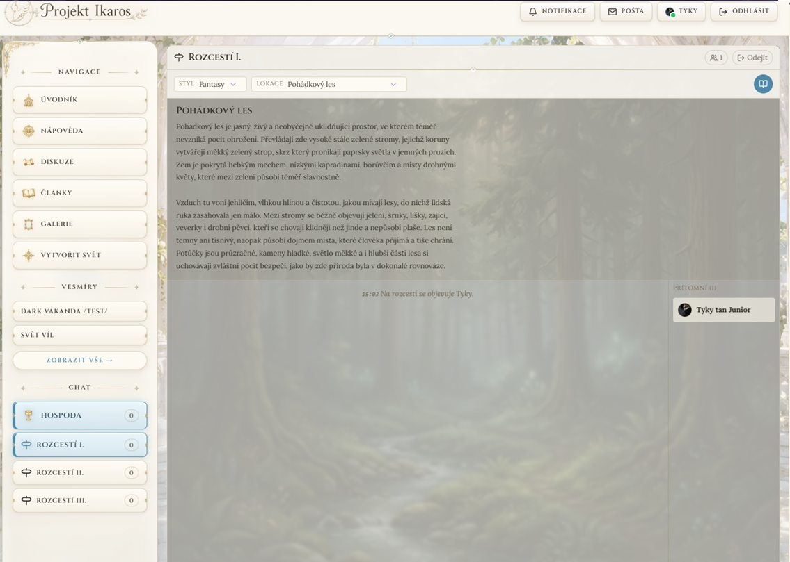
Rozcestí — atmosférická místnost se sdíleným pozadím scény a popisem lokace. Když pověřená osoba přepne scénu, vidí novou kulisu okamžitě všichni v místnosti.
Rozcestí — atmosférické roleplayové místnosti
Tři oddělené místnosti dostupné z hlavní nabídky, každá s vlastním počtem přítomných. Od Hospody je poznáš na první pohled: mají pozadí a popis scény, který dotváří náladu.
Co získáš: Jeviště pro spontánní hraní. Můžeš se sejít s kýmkoli z platformy a rozjet scénu ve fantasy hospodě, na nádraží ztraceného města nebo kdekoli, kam tě nabídka kulis zavede — a ostatní jsou s tebou ve stejném obraze.
Jak to funguje: Umí všechno co Hospoda (psaní, odpovědi, emoji reakce, přílohy do 10 MB, šepty, seznam přítomných, indikátor psaní). Pověřená osoba navíc vybere styl scény a lokaci z předdefinované nabídky — změna se okamžitě rozešle všem a nastaví obrázkové pozadí i popis. Scéna je společná pro celou místnost, ne osobní.
Pro koho: Vstoupit a psát smí každý přihlášený. Měnit kulisu smí jen pověřené role platformy (Superadmin, Admin, Správce článků, Správce galerie a Správce diskuzí) — drží to scénu konzistentní, aby ji nepřepínalo deset lidí najednou.
Pošta — soukromě a natrvalo
Když Hospoda je náměstí, pošta je tvá osobní schránka. Soukromé zprávy mezi uživateli, organizované do vláken, které nezmizí. Sem chodí i důležitá systémová oznámení — schválení vstupu do světa, přiřazení postavy, výsledek tvého příspěvku.
Soukromá schránka
Otevřeš ji z nabídky pod položkou „Pošta". Napsat někomu zprávu můžeš i přímo z jeho profilu — adresát se ti předvyplní.
Co získáš: Klidné soukromé místo na domluvu, kterou nechceš křičet do celé platformy. Domluvíš si hru, vyřešíš detail postavy, pošleš poděkování — a na rozdíl od chatu to tam zůstane, dokud to sám nesmažeš.
Jak to funguje: Máš složky Doručené (s filtrem jen na systémová oznámení), Odeslané a počet nepřečtených, který se ti promítá do odznaku u zvonku. Otevřením se zpráva označí jako přečtená a vidíš celé vlákno konverzace. Napíšeš novou (příjemce, předmět, tělo) nebo odpovíš ve vláknu. Smazat zprávu lze — ale jen u tebe, druhá strana ji má dál.
Pro koho: Pro každého přihlášeného. Vlastní schránku má každý, žádná role není potřeba.
Doručí se to hned — a pod kontrolou
Nová zpráva dorazí příjemci okamžitě, bez obnovení stránky — naskočí odznak i seznam. Pokud má někdo v soukromí nastaveno „psát mi smí jen přátelé", novou konverzaci s ním začne pouze jeho přítel. Důležitá systémová oznámení tímhle filtrem ale vždy projdou: schválení vstupu do světa nebo přiřazení postavy ti dorazí za všech okolností.
Zvonek — jedno místo pro vše, co tě čeká
Zvonek v hlavičce je tvůj osobní rozcestník upozornění. Sdružuje na jednom místě tři druhy dění, takže nemusíš obíhat půlku platformy, abys zjistil, co je nového právě pro tebe.
Centrum upozornění
Panel se otevře kliknutím na zvonek. Má až tři záložky — podle toho, co se tě zrovna týká.
Co získáš: Přehled bez stresu. Jedním pohledem vidíš nepřečtené chaty napříč všemi svými světy, co ti bylo schváleno, a — pokud něco takového řešíš — i frontu věcí ke zpracování. Nic ti neuteče a zároveň tě nezavalí.
Jak to funguje:
Chaty — souhrn nepřečtených zpráv ze všech tvých světů na jednom místě, s odkazem rovnou do dané konverzace. Aktualizuje se živě.
Události — co ti bylo schváleno, přiřazení postavy a podobná oznámení.
Ke zpracování — fronta ke schválení (články, galerie, diskuze, vedení světa…), pokud máš taková oprávnění. Komu se to netýká, ten záložku vůbec nevidí.
V patičce centra je navíc přepínač push notifikací pro tvé aktuální zařízení.
Pro koho: Pro každého přihlášeného. Záložka „Ke zpracování" se ukáže jen tomu, kdo opravdu má co řešit (recenzenti obsahu, vedení světa).
Push notifikace — i když máš telefon v kapse
Nemusíš sedět u Ikara, aby ses dozvěděl, že se něco děje. Platforma ti umí poslat klasickou push notifikaci — bublinu na telefon nebo počítač, která dorazí, i když máš appku zavřenou nebo zamčený displej.
Co ti push dává
Každé zařízení se přihlašuje k odběru zvlášť.
Jedním přepínačem v patičce zvonku přihlásíš aktuální zařízení k odběru.
Stejně snadno ho zase odhlásíš.
Vidíš seznam svých přihlášených zařízení a máš nad nimi kontrolu.
Po kliknutí na bublinu se ti otevře platforma.
Kdy reálně cinkne
Push chodí jen pro vybrané, opravdu důležité události.
Nová platformová novinka — dorazí na všechna tvá zařízení.
Zpráva v globálním chatu (Hospoda) — push přijde na všechna zařízení.
Chat uvnitř světa — cíleně jen dotčeným lidem (řeší se ve světě).
Pošta push záměrně neposílá — nová zpráva se projeví odznakem a živým upozorněním v centru, bublinu na telefon nepošle.
Na iPhonu jeden krok navíc
Aby ti push chodily na zařízení Apple, přidej si Ikaros na plochu jako aplikaci (PWA). Je to standardní omezení Safari, ne náš rozmar. Přepínač push je jeden pro celé zařízení — buď je odběr zapnutý, nebo vypnutý.
Emoty a emoji — řekni to obrázkem
Komunikace není jen text. Ikaros zná dva nezávislé systémy „emotů" a vyplatí se vědět, který je který, ať netápeš, proč ti někde nejde tvůj oblíbený obrázek.
Textová emoji (globální chat)
V Hospodě a na Rozcestích.
Napíšeš zkratku jako :) nebo :D a sama se vykreslí jako emoji.
Emoji vybereš i z výběrového okénka.
Na jakoukoli zprávu přidáš emoji reakci jedním klikem.
Sada zkratek je pevně daná a funguje všude stejně.
Vlastní obrázkové emoty (svět)
V chatu uvnitř konkrétního světa.
Napíšeš :zkratka: a vloží se vlastní obrázek nahraný do daného světa.
Při psaní ti napovídá automatické doplňování.
Existují i globální obrázkové emoty dostupné ve všech světech (spravuje je správce platformy).
V Hospodě, na Rozcestích ani v poště obrázkové emoty nefungují — tam jedou jen textová emoji.
Reakce versus emote v textu
„Emoji reakce" je jednoklikové připnutí emoji ke konkrétní zprávě (jako palec nahoru). „Emote v textu" je znak vepsaný přímo do těla zprávy. Jsou to dvě různé věci — reakce nesahá do textu zprávy a naopak.
Komunita nežije jen z chatu. Žije z toho, že se lidé scházejí na akce, vracejí se k obsahu, který je baví, a že se v ní nováček neztratí. Tahle kapitola sdružuje čtyři nástroje, které přesně tohle umožňují: kalendář komunitních akcí, kam si potvrdíš účast jediným klikem, osobní oblíbené pro rychlý návrat k tomu nejlepšímu, vestavěnou Nápovědu, která tě provede od registrace až po hru ve světě, a transparentní Podmínky užití. U každého ti ukážeme hlavně to, co z něj máš.
Kalendář akcí — buď u toho
Kalendář akcí je měsíční přehled toho, co se v celé komunitě děje — srazy, turnaje, společné události, oznámení. Není to herní kalendář jednoho světa, ale tep celé platformy. A hlavně: u akce, která tě láká, rovnou klikneš „Zúčastním se".
Kalendář akcí
Najdeš ho v hlavní nabídce pod položkou „Akce". Na počítači dostaneš měsíční mřížku, na mobilu praktický seznam.
Co získáš: Přehled, kam za komunitou vyrazit — a jistotu, že na akci nezapomeneš. Jedním klikem dáš najevo, že dorazíš, a vidíš, kdo další se chystá. Akce do 24 hodin tě navíc upozorní odznakem „DNES!" nebo „ZÍTRA!", aby ti nic neuteklo.
Jak to funguje:
Na počítači: procházíš měsíční mřížku s barevnými štítky akcí v políčku dne, listuješ šipkami a tlačítkem „Dnes" skočíš na aktuální měsíc. Klik na štítek otevře detail.
Na mobilu: místo mřížky dostaneš přehledný seznam rozdělený na „Nadcházející" a „Proběhlé", seřazený podle data.
Potvrzení účasti (RSVP): u akce, která to umožňuje, přepneš tlačítkem „Zúčastním se" svou účast. Karta ukazuje počet účastníků a první jména i s informací, kolik dalších se chystá.
Pro koho: Vidět kalendář a potvrzovat účast může každý přihlášený. Zakládat, upravovat a mazat akce smí jen správce platformy — běžnému uživateli se tlačítko „Nová akce" nezobrazí.
Vytvoření a úprava akce (jen správce)
Správce platformy zakládá a upravuje akce v jednoduchém formuláři.
Co získáš (jako správce): Možnost svolat komunitu kdykoli a kamkoli — bez programátora, během minuty.
Jak to funguje: Vyplníš Název (povinný), Datum a čas (povinné), volitelně přidáš Obrázek (až 10 MB, s nastavením středu výřezu, přiblížení a zarovnání), napíšeš Popis a zaškrtneš, zda je povoleno potvrzení účasti (ve výchozím stavu zapnuto). Akci lze i smazat (s potvrzením). Změny se ostatním promítnou okamžitě.
Pro koho: Admin nebo Superadmin.
Akce platformy versus akce světa
Akce v tomhle kalendáři jsou celoplatformové — týkají se celé komunity. Herní akce a novinky konkrétního světa jsou samostatný nástroj uvnitř daného světa a sem se nemíchají. Potvrzení účasti je prostý přepínač bez kapacitního limitu a bez čekací listiny — počet účastníků není nijak omezený.
Oblíbené — to nejlepší vždy po ruce
Čím déle jsi na Ikarovi, tím víc obsahu si oblíbíš. Oblíbené jsou tvoje osobní záložky — uložíš si do nich diskuze, články a obrázky, ke kterým se chceš snadno vracet, a ty nejdůležitější si „připneš" do pravého panelu, kde je máš po ruce z kterékoli stránky.
Stránka Oblíbené
Otevřeš ji z nabídky pod položkou „Oblíbené". Obsah je rozdělený do tří záložek: Diskuze, Články a Obrázky.
Co získáš: Konec hledání. Místo proklikávání se zpět k článku, který tě před měsícem zaujal, ho máš na jednom místě — a synchronizované napříč všemi zařízeními, takže na telefonu najdeš totéž co na počítači.
Jak to funguje:
V každé záložce procházíš seznam toho, co máš v oblíbených, a z karty přejdeš rovnou na detail.
Připnutí špendlíkem přesune oblíbenou položku do pravého panelu, kde ji máš odkudkoli po ruce. Připnout lze nejvýše 5 položek na typ a jen položku, kterou už máš v oblíbených.
Přidat nebo odebrat z oblíbených (srdíčko / záložka) se dělá přímo u obsahu — na detailu nebo kartě diskuze, článku či obrázku. Tahle stránka slouží k přehledu a připínání.
Pro koho: Pro každého přihlášeného. Záložky jsou čistě osobní a vázané na tvůj účet.
Dvě různá „oblíbené" — nezaměň je
Tahle stránka řeší globální komunitní oblíbené (diskuze, články, galerie). Uvnitř každého světa navíc existuje samostatné oblíbené pro herní obsah — oblíbené postavy a oblíbené wiki stránky daného světa, které najdeš na úvodní straně světa a v jeho rejstříku. Jsou to nezávislé systémy se stejným názvem.
Nápověda — nikdy nezůstaneš na holičkách
Ikaros je bohatá platforma a my chceme, aby v ní byl jako doma i úplný nováček. Proto je do ní vestavěná Nápověda — průvodce rozdělený do šesti přehledných sekcí, který tě provede od první registrace až po hru ve světě. Je veřejná: přečíst si ji můžeš ještě dřív, než se přihlásíš.
Nápověda — sekce světa (nástroje uvnitř konkrétního světa).
Nápověda — šest sekcí
Otevřeš ji z nabídky pod položkou „Nápověda". Přepínáš mezi šesti záložkami, každá s rozbalovacími tématy.
Co získáš: Jistotu, že na cokoli najdeš odpověď uvnitř platformy — bez googlení, bez ptaní na Discordu. Nováčka provede prvními kroky, zkušenému slouží jako referenční příručka.
Jak to funguje: Šest záložek pokrývá:
Začni tady — co je Projekt Ikaros, první kroky (registrace, profil, vstup do světa), co odemkne registrace, orientace v rozhraní a slovníček základních pojmů (svět, PJ, postava, NPC, bestie, token, motiv a další).
Platforma — nástroje napříč světy: úvodník a vesmíry, komunikace (Hospoda, Rozcestí, pošta, zvonek, diskuze), obsah komunity (články, galerie, novinky, akce, oblíbené), lidé a profil, správa platformy.
Svět — nástroje uvnitř světa: základy, informace a lidé, mapy a vizuál, taktická mapa, příběhové nástroje pro PJ, svět v čase, ekonomika, komunikace a zvuk, nastavení a správa.
Role a oprávnění — globální i světové role, přehledné karty, matice oprávnění a vysvětlení, kdo co smí.
Účet a profil — hlavička profilu, postava v Rozcestí, změna přezdívky a e-mailu, heslo a reset, dvoufaktorové ověření, avatar, soukromí, přehled tvých světů a smazání účtu.
Časté dotazy — desítky rozklikávacích otázek a odpovědí roztříděných do kategorií Účet, Komunita, Svět a hra a Obecné.
Pro koho: Pro všechny — přihlášené i nepřihlášené. Jde o čistě informativní obsah.
Podmínky užití — hrajeme s otevřenými kartami
Důvěra se staví na transparentnosti. Podmínky užití jsou veřejná stránka, která srozumitelně shrnuje pravidla provozu a zacházení s osobními údaji — žádné drobné písmo schválně schované. Aktuální vydání nese verzi 1.0.
Podmínky užití (verze 1.0)
Veřejná stránka dostupná všem; odkazuje se na ni i registrace, kde podmínky odsouhlasíš.
Co získáš: Klid. Víš, k čemu platforma slouží, jak se nakládá s tvými daty, jaká platí pravidla chování a co se stane, když se rozhodneš odejít — včetně 30denní ochranné lhůty, ve které lze smazání účtu vzít zpět.
Co obsahuje: Pět tematických oddílů — účel platformy, zpracování osobních údajů (ochrana soukromí a kontakt), pravidla chování v komunitě, smazání účtu (s vysvětlením 30denní lhůty a anonymizace dat) a změny podmínek.
Za každou zdravou komunitou stojí pořádek, který není vidět — dokud nechybí. Projekt Ikaros má kompletní sadu nástrojů pro správu platformy: centrální admin panel, propracovaný systém rolí a granulárních oprávnění, plnou správu uživatelů (od role přes dočasné i trvalé zablokování až po mazání účtů), provázané vyhledávání kombinující fulltext se sémantikou a katalog herních systémů. Pro tebe jako uživatele to znamená jediné: férové, bezpečné a živé prostředí. Pro firmu nebo provozovatele to znamená, že platformu lze skutečně řídit — nikoli jen spustit a doufat.
Správa platformy ≠ moc nad tvým světem
Celá tahle kapitola je o platformové (globální) správě. Vedení uvnitř jednotlivých světů — role PJ, Pomocný PJ a další — je samostatná věc s vlastními kapitolami. A je to záměrné: správce platformy nemá automatickou moc uvnitř tvého světa. Tam vládne PJ. Tvůj příběh patří tobě a tvé družině.
Globální role — jasné a přehledné
Každý uživatel má jednu globální roli, která určuje, co smí na úrovni platformy. Rolí je šest a dělí se do tří srozumitelných skupin — žádný labyrint oprávnění, ve kterém se nikdo nevyzná.
Správci platformy
Mají přístup do admin panelu.
Superadmin — nejvyšší role, smí cokoli.
Admin — správce platformy s rozsahem daným jeho oprávněními.
Uživatelé a správci obsahu
Bez přístupu do admin panelu.
Ikarus — běžný přihlášený uživatel.
Správce článků — schvaluje příspěvky v sekci Články.
Správce galerie — schvaluje obrázky v Galerii.
Správce diskuzí — schvaluje příspěvky v Diskuzích.
Správci obsahu nejsou administrátoři
Správce článků, galerie a diskuzí jsou obsahové role — vidí jen svou frontu „Ke zpracování" a schvalují příspěvky daného druhu. Do admin panelu se nedostanou. Role PJ a hráč existují vždy jen uvnitř konkrétního světa, ne na úrovni platformy.
Granulární oprávnění — Admin podle míry
Role Admin není „všechno nebo nic". Superadmin může každému Adminovi přidělit jen ty pravomoci, které opravdu potřebuje — díky tomu lze mít důvěryhodného pomocníka, který spravuje obsah, ale nemůže zasahovat do citlivějších věcí. Méně rizika, víc klidu.
Oprávnění
Co umožňuje
Kdo smí přidělit
Správa adminů
Admin smí spravovat oprávnění jiných administrátorů
jen Superadmin
Moderace obsahu
Admin smí smazat nebo obnovit cizí účet
Superadmin, nebo Admin se Správou adminů
Přidělování oprávnění
Oprávnění se nastavují přímo u uživatele v záložce Uživatelé.
Co získáš: Schopnost delegovat bez obav. Pomocníkovi svěříš přesně tolik, kolik chceš — a ani o píď víc.
Jak to funguje: Superadmin smí měnit kterékoli oprávnění. Admin smí měnit oprávnění jiných Adminů jen tehdy, má-li sám „Správu adminů" — a navíc smí delegovat pouze „Moderaci obsahu", nikdy ne „Správu adminů" (aby se právo nešířilo řetězově). Nikdo nesmí měnit oprávnění sám sobě a každá změna se zapíše do auditního logu.
Pro koho: Superadmin a Admin se Správou adminů. Oprávnění mají smysl jen u uživatelů s rolí Admin.
Admin panel — řídicí pult platformy
Admin panel je centrální rozcestník správy. Je dostupný jen Adminům a Superadminům a sdružuje pět hlavních záložek — vše podstatné na jednom místě.
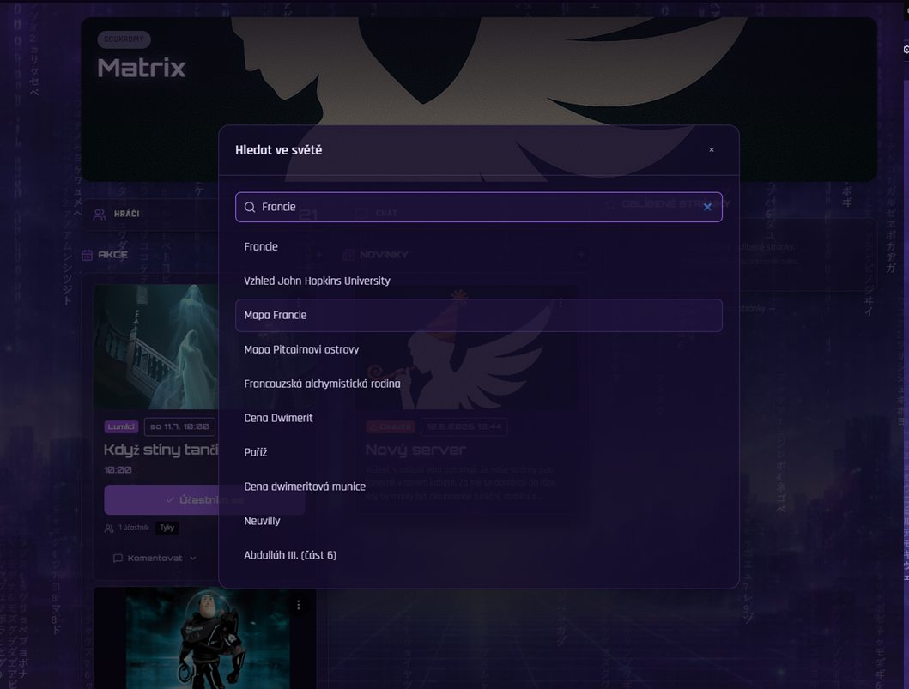
Admin panel — záložka Index vyhledávání se stavem indexu (počet zaindexovaných stránek, sémantických vektorů, fronty ke zpracování) a tlačítkem pro ruční přebudování.
Záložka Přehled
Úvodní dashboard se snímkem klíčových metrik platformy a rychlými odkazy.
Co získáš: Tep platformy na jeden pohled — kolik máš uživatelů, kolik je jich aktivních, co přibylo za týden, kolik obsahu komunita vytvořila.
Jak to funguje (co ukazuje):
Uživatelé: celkem, aktivní (nedávno online), noví za posledních 7 dní a kolik účtů čeká na smazání.
Světy: celkový počet.
Obsah: počet článků, obrázků v galerii a diskuzí.
Fronta: kolik žádostí o přezdívku čeká na vyřízení.
Rychlé odkazy na správu uživatelů, audit log, frontu ke zpracování a index vyhledávání.
Pro koho: Admin a Superadmin. Každá metrika se počítá odolně — když by jeden zdroj selhal, dashboard se nezhroutí, jen u dané hodnoty ukáže nulu.
Záložka Uživatelé
Filtrovatelná tabulka všech uživatelů s akcemi po jednom i hromadně.
Co získáš: Plnou kontrolu nad komunitou — od povýšení důvěryhodného pomocníka po rychlý zásah proti tomu, kdo kazí ostatním zábavu.
Jak to funguje (u jednoho uživatele):
Změnit roli — vybrat z šesti globálních rolí.
Zablokovat (ban) / odblokovat — ban má povinný důvod a volitelné trvání; bez trvání je trvalý, s trváním dočasný a po vypršení sám pomine. Zablokování okamžitě odhlásí uživatele ze všech zařízení.
Smazat účet / obnovit mazání — smazání spustí 30denní ochrannou lhůtu s povinným důvodem; během ní lze mazání zrušit.
Nastavit granulární oprávnění — u uživatelů s rolí Admin.
Jak to funguje (hromadně): Hromadně zablokovat (trvale / 1 / 7 / 30 / 90 dní + důvod), hromadně odblokovat a hromadně změnit roli. Hromadná akce je „nejlepší možný výsledek" — selže-li u jednoho, ostatní se přesto provedou a panel ukáže, co prošlo a co ne. Filtrovat lze podle přezdívky, role a čekání na schválení přezdívky.
Pro koho: Admin a Superadmin, vždy s respektem k hierarchii (viz níže). Řádek vlastního účtu má akce zamčené, vše se auditováno.
Hierarchie — pojistka proti zneužití
Pravidla brání tomu, aby kdokoli zneužil moc: nikdo nesmí měnit ani moderovat sám sebe. Superadmin smí cokoli (kromě sebe). Admin nesmí měnit roli ani moderovat jiného Admina nebo Superadmina, ani nikoho povýšit na administrátorskou roli. Mazání a obnova účtů navíc vyžadují oprávnění „Moderace obsahu".
Záložka Smazané světy
Seznam soft-smazaných světů s možností obnovy během 30denní lhůty.
Co získáš: Záchrannou síť. Omylem smazaný nebo opuštěný svět se dá vrátit k životu — i s jeho stránkami, postavami a chatem.
Jak to funguje:Obnovit svět vrátí jeho stránky, postavy i chat a vlastník znovu získá přístup. U každého světa vidíš, kolik dní zbývá do trvalého smazání (dny pod hranicí pěti jsou zvýrazněné). Po uplynutí 30 dní platforma svět automaticky a trvale smaže.
Pro koho: Admin a Superadmin. Obnova světa je jediný případ, kdy správce platformy smí zasáhnout do dění uvnitř světa — zachrání opuštěný svět a dosadí mu vedení.
Záložka Audit log
Záznam moderátorských akcí pro dohledatelnost a zpětnou kontrolu.
Co získáš: Transparentnost a zpětnou stopu. U každého zásahu víš, kdo ho provedl, koho se týkal a proč — žádné tiché zásahy bez záznamu.
Jak to funguje: Procházíš záznamy s informací, kdo akci provedl, koho se týkala, jaká byla, jaký byl stav před a po, jaký byl důvod a kdy se to stalo. Filtrovat lze podle typu akce a stránkovat. Zaznamenává se změna role, založení uživatele, schválení i zamítnutí žádosti o přezdívku, zablokování i odblokování, smazání i obnova účtu, hromadné akce, archivace i obnova platformových novinek a další. Zápis do auditu nikdy neblokuje samotnou akci.
Pro koho: Admin a Superadmin, pouze ke čtení.
Záložka Index vyhledávání
Monitoring stavu vyhledávacího indexu a jeho ruční přebudování.
Co získáš: Jistotu, že vyhledávání funguje a najde, co má. Kdyby se index rozešel s realitou, jedním tlačítkem ho přepočítáš.
Jak to funguje: Zobrazíš stav indexu — který vyhledávací nástroj se používá, kolik stránek je zaindexovaných, kolik je vytvořených vektorů pro sémantické hledání, kolik je zpracováno z celku, kolik čeká a kdy proběhlo poslední zpracování — a tlačítkem Přebudovat index spustíš kompletní přeindexování (s potvrzením, protože jde o náročnou operaci).
Pro koho: Admin a Superadmin.
Vyhledávání — najde i to, co neumíš pojmenovat
Ve velkém světě plném stránek se hledání musí umět trefit. Vyhledávání Ikara proto kombinuje dva přístupy najednou: klasický fulltext (doslovné výskyty) a sémantické (významové) hledání. Najde i to, co jsi popsal úplně jinými slovy než autor — třeba „chrlič ohně" místo „rudý drak".
Provázané vyhledávání
Hledá se vždy v rámci jednoho konkrétního světa.
Co získáš: Rychlé nalezení postavy, místa nebo pravidla bez ohledu na to, jak přesně si pamatuješ název. Dva vyhledávací motory pracují za tebe a výsledky se chytře proloží do jednoho seznamu bez duplicit.
Jak to funguje: Zadáš dotaz a dostaneš výsledky složené ze dvou zdrojů — fulltextového vyhledávání (doslovné výskyty) a sémantického vyhledávání (podle významu pomocí jazykového modelu).
Pro koho: Pro každého přihlášeného ve světech, ke kterým má přístup. Vyhledávání je bezpečné — výsledky se vždy omezí na stránky, které smíš vidět; chráněné stránky ani názvy z cizích soukromých světů se nikdy neobjeví.
Katalog herních systémů — sedmnáct světů pravidel
Ať hraješ cokoli, Ikaros pravděpodobně tvůj systém zná. Vestavěný katalog herních systémů obsahuje i jejich datové šablony — podle zvoleného systému se pak řídí, jak vypadají karty postav a záznamy v bestiáři tvého světa. Nemusíš nic stavět od nuly.
Sedmnáct herních systémů
Referenční katalog dostupný napříč platformou.
Co získáš: Hotové základy pro svůj svět. Vybereš systém a karty postav i bestiář se rovnou tvarují podle jeho pravidel — žádné ruční vymýšlení atributů.
Jak to funguje: Katalog zahrnuje Call of Cthulhu, Dungeons & Dragons 2. edice, Dungeons & Dragons 3. edice a novější, Dungeons & Dragons 5. edice, Dračí doupě (hrdinská varianta), pět povolání pro Dračí doupě 1.6 (alchymista, hraničář, zloděj, válečník, kouzelník), Fate, GURPS, JaD, vlastní systém Matrix, vlastní systém Projekt Ikaros a Shadowrun. U každého si přečteš plnou datovou šablonu.
Pro koho: Katalog je veřejný — seznam systémů i jejich šablony si přečte kdokoli.
Globální emoty a další nástroje správce
Vedle hlavních záložek panelu má správce po ruce ještě pár dílčích nástrojů, které drží komunitu hladkou a živou.
Globální emoty
Obrázkové emoty platné napříč všemi světy.
Vytvořit nový globální emote (název, zkratka, obrázek).
Upravit existující nebo smazat.
Změny se okamžitě promítnou všem.
Vidí a používá je každý uživatel v kterémkoli světě.
Žádosti a moderace obsahu
Schvalování přezdívek a komunitních příspěvků.
Procházet a schvalovat / zamítat žádosti o novou přezdívku.
Články schvalují Superadmin, Admin a Správce článků.
Galerii schvalují Superadmin, Admin a Správce galerie.
Diskuze schvalují Superadmin, Admin a Správce diskuzí.
Schvalování běží ve frontě, ne v panelu
Žádosti o přezdívku i moderace obsahu se vyřizují v osobní frontě „Ke zpracování" (pod zvonkem), ne v admin panelu. Žadatel dostane o výsledku oznámení. Globální emoty spravuje správce platformy a jsou nezávislé na emotech jednotlivých světů, které spravuje vedení daného světa.
6
globálních rolí na platformě
5
hlavních záložek admin panelu
17
podporovaných herních systémů
30
dní na obnovu smazaného světa
Část II — Co umíme
Svět: vstup, dashboard, členství a role
Herní svět na platformě není jen složka s obsahem — je to samostatný malý vesmír s vlastními členy, pravidly, vzhledem, encyklopedií a vedením. Tahle kapitola ukazuje, co vám svět dává od první vteřiny: jak ho najdete, jak se do něj dostanete, co uvidíte na úvodní obrazovce a jak přesně víte, kdo co smí. Prostupuje jí jedno pravidlo, které vám dává klid: pánem světa je jeho Vypravěč (PJ) — do vašeho světa vám nikdo nemluví, ani správce celé platformy. Co si nastavíte, to platí.
Co pro vás „svět" znamená
Svět je jedna herní kampaň nebo herní prostředí, které dostanete kompletně vybavené: vlastní název, popis, žánr (fantasy, kyberpunk, vesmír…), herní systém, vlastní vzhled, encyklopedii stránek, postavy, mapy, chat i kalendář. Můžete být členem víc světů zároveň a v každém vystupovat jinak. Nemusíte nic instalovat ani skládat dohromady z více nástrojů — všechno, co kampaň potřebuje, je na jednom místě a propojené.
1. Jak svět vypadá, než do něj vstoupíte
Když otevřete odkaz na svět, přistanete na jeho úvodní stránce. Co uvidíte, závisí na dvou věcech: jestli už jste člen, a jaký režim přístupu má svět nastavený. Díky tomu má Vypravěč úplnou kontrolu nad tím, koho a jak svět vpustí dovnitř — a vy hned víte, na čem jste.
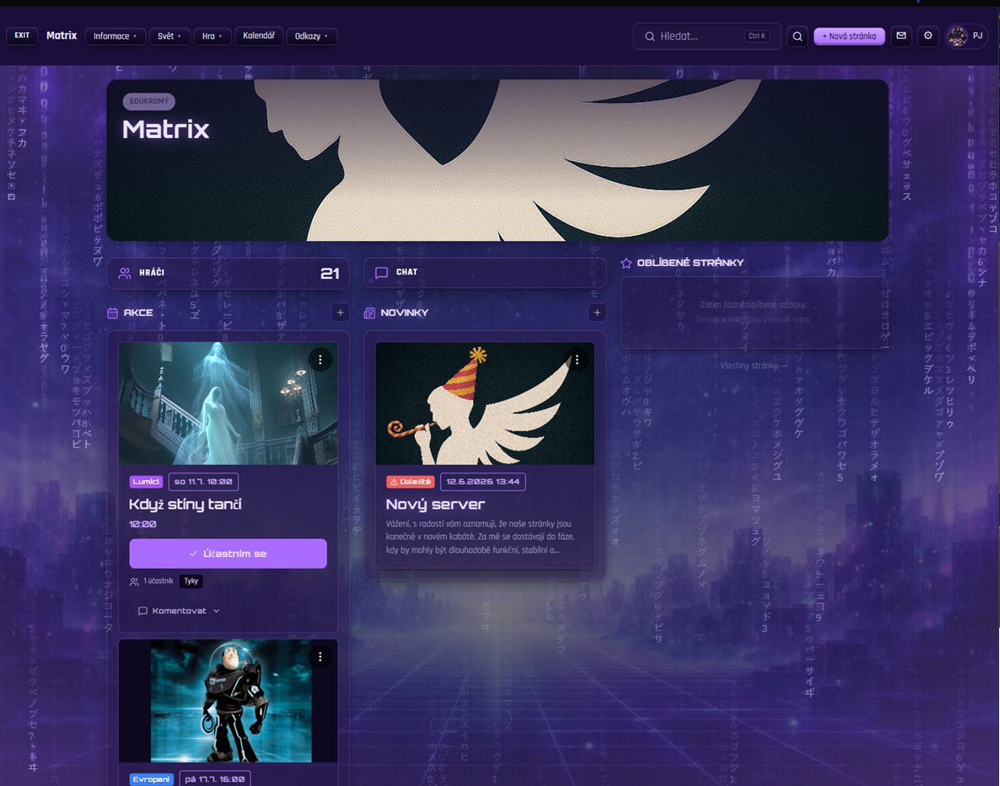
Úvodní strana světa — bohatá vstupní obrazovka, která vás v jednom pohledu nasměruje k tomu podstatnému.
Čtyři režimy přístupu — vy rozhodujete, jak otevřený svět je
Jako Vypravěč máte na výběr ze čtyř režimů. Každý z nich řeší jinou situaci: nábor nových hráčů, uzavřenou družinu i doběhlou kampaň.
Veřejný
Svět vidí kdokoli, i nepřihlášený návštěvník. Vstup je okamžitý — kliknutí na „Vstoupit do světa" a hned jste členem (role Čtenář). Ideální, když chcete co nejnižší práh pro nové zájemce.
Veřejný se schválením
Svět je vidět všem, ale vstup hlídáte. Zájemce požádá, vy žádost vidíte a buď ji přijmete, nebo odmítnete. Získáte viditelnost pro nábor a zároveň kontrolu, kdo se dovnitř dostane.
Soukromý
Svět vidí jen členové a lidé, kteří už podali žádost. Pro ostatní prakticky neexistuje — neprozradí se ani jeho jméno. Vstup jen přes žádost ke schválení. Pro uzavřené party a citlivé kampaně.
Uzavřený
Nikdo nový už nevstoupí ani nepožádá. Stávající členové zůstávají. Hodí se na doběhlé nebo „zamčené" kampaně, které chcete uchovat, ale už nerozšiřovat.
Co na úvodní stránce uvidíte právě vy
Kdo jste
Co vám stránka nabídne
Nepřihlášený návštěvník
U veřejného i veřejného-se-schválením světa hlavní obrázek, popis a výzvu „Přihlásit se a vstoupit". Soukromý svět neuvidíte vůbec — chrání to soukromí kampaně.
Přihlášený, ale nečlen
Hlavní obrázek, podrobné informace o světě a tlačítko pro vstup nebo podání žádosti podle režimu — víte přesně, jak se dostat dál.
Čekáte na schválení
Informace o světě a banner „Žádost čeká na vyřízení" s datem podání. Žádost můžete kdykoli sami zrušit — máte to pod kontrolou.
Člen světa
Plnohodnotný dashboard se třemi sloupci (viz dále), nápovědný panel a panel „O světě" — váš domovský rozcestník do celé kampaně.
Chytré tlačítko pro vstup a žádost
Tlačítko se samo přizpůsobí režimu světa i tomu, kdo jste — nemusíte nic řešit, jen kliknout.
Co získáš: jednoznačnou cestu dovnitř bez tápání — vždycky víš, jestli můžeš vstoupit hned, nebo požádat, a co tě čeká.
Jak to funguje: u veřejného světa „Vstoupit do světa" (okamžité členství jako Čtenář), u veřejného-se-schválením a soukromého „Požádat o vstup" (vznikne žádost), u uzavřeného žádné tlačítko, jen informace. Nepřihlášenému tlačítko otevře přihlášení a po něm tě vrátí přesně sem, kde jsi skončil.
Pro koho: pro každého návštěvníka detailu světa, který ještě není členem.
Co od vstupu čekat
Nový člen vždycky začíná jako Čtenář — nelze „proklouznout" rovnou do vyšší role. Roli povyšuje až Vypravěč, takže máte jistotu, kdo má jaká práva. Neexistují e-mailové pozvánky ani odkaz s předschválením; u soukromého světa platí jednoduché „kdo má odkaz, může požádat", a schvaluje vždy Vypravěč.
2. Úvodní obrazovka člena (dashboard)
Jakmile jste členem, úvodní stránka se promění ve váš osobní rozcestník po světě. Tři sloupce vám na jeden pohled řeknou, co se děje a kam pokračovat — žádné hledání, žádné proklikávání menu. Otevřete svět a hned víte, kde jste.
Hráči a Akce
Dlaždice „Hráči" ukazuje počet aktivně hrajících členů a vede na jejich seznam. Box „Akce" zobrazuje nejbližší naplánovaná herní sezení a srazy — víte, kdy se příště hraje.
Chat a Novinky
Dlaždice „Chat" se značkou počtu nepřečtených zpráv vás vezme rovnou do diskuze. Box „Novinky" ukazuje poslední oznámení a zápisy — nic vám neuteče.
Oblíbené stránky
Pravý sloupec přes celou výšku se stránkami, které jste si označili hvězdičkou. Rychlý přístup přesně k tomu, co používáte nejčastěji — vlastní postava, mapa, pravidla.
Přehled na první pohled
Dashboard slouží k orientaci a navigaci, ne k editaci. Je to klidný rozcestník, který vás nasměruje, ne nástroj, ve kterém se ztratíte.
3. Šest světových rolí — jasno v tom, kdo co smí
Uvnitř každého světa má každý člen jednu světovou roli, která určuje, co vidí a co smí. Role jdou od nejmenší po největší pravomoc a jsou vždy vázané na konkrétní svět — v jednom světě můžete být Vypravěč, v jiném obyčejný Čtenář. Díky tomu je vždy jasné, kdo za co odpovídá, a nikdo nedostane víc moci, než má mít.
Šest rolí od nejmenší po největší pravomoc
Žadatel → Čtenář → Hráč → Korektor → Pomocný PJ → PJ (Vypravěč). Čím vyšší role, tím víc člen vidí a smí. PJ je na vrcholu — je to pán světa.
Žadatel
Člen, který už je uvnitř, ale ještě čeká na přidělení postavy. Pozor: to není totéž co žádost o vstup do světa — žadatel už je plnoprávným členem, jen zatím „nehraje".
Čtenář
Základní role každého nového člena. Prohlíží obsah světa — stránky, encyklopedii, postavy, mapy, chat. Nemá vlastní postavu a nic neupravuje. Ideální pro nováčky i pasivní účastníky.
Hráč
Člen s vlastní postavou, který aktivně hraje. Má přístup k deníku své postavy, financím, výbavě, časové ose i generátoru počasí a spravuje vše, co patří jeho postavě.
Korektor
Pomocník pro obsah a vzhled. Smí upravovat základní informace světa, režim přístupu, vzhled (téma a barvy) a šablony stránek. Pomáhá udržovat svět čistý a hezký.
Pomocný PJ
Pravá ruka Vypravěče. Spravuje členy (role, skupiny, přiřazování postav), edituje stránky a postavy, vede prověrkové úrovně, kalendáře, emotikony i deník vypravěče. Nesmí jen schvalovat nové žádosti o vstup a mazat svět.
PJ (Vypravěč)
Pán světa. Vše výše plus: schvaluje žádosti o vstup, zakládá skupiny a družiny, staví hlavní lištu, řídí viditelnost záložek postav, mazání i předání světa. Tvůrce světa je automaticky jeho prvním PJ.
Přehled pravomocí podle role
Co může dělat
Čtenář
Hráč
Korektor
Pomocný PJ
PJ
Prohlížet obsah světa
ano
ano
ano
ano
ano
Vlastní hráčská postava a deník
ne
ano
ano
ano
ano
Upravovat informace a vzhled světa
ne
ne
ano
ano
ano
Vytvářet a upravovat stránky a postavy
ne
ne
ne
ano
ano
Spravovat členy (role, skupiny)
ne
ne
ne
ano
ano
Schvalovat žádosti o vstup
ne
ne
ne
ne
ano
Zakládat skupiny, nastavit hlavní lištu
ne
ne
ne
ne
ano
Smazat nebo předat svět
ne
ne
ne
ne
ano
4. Životní cyklus členství — krok za krokem
Cesta od náhodného návštěvníka po hrajícího člena má pár jasných kroků. Každý je samostatná, srozumitelná akce — nikdy nejste na pochybách, co dělat dál.
Vstup do veřejného světa
Nejrychlejší cesta dovnitř.
Co získáš: okamžité členství jediným kliknutím — žádné čekání, žádné formuláře.
Jak to funguje: klikneš na „Vstoupit do světa" a hned jsi členem v roli Čtenář. Pokud bys už měl nevyřízenou žádost, systém tě na to vlídně upozorní.
Pro koho: pro každého přihlášeného uživatele u veřejného (okamžitého) světa.
Žádost o vstup (svět se schválením nebo soukromý)
Pro světy, kde vstup řídí Vypravěč.
Co získáš: jasný stav své žádosti a možnost ji kdykoli sám zrušit — vždy víš, na čem jsi.
Jak to funguje: podáš žádost, ta čeká na Vypravěče. Na jeden svět můžeš mít jen jednu nevyřízenou žádost. U uzavřeného světa žádost podat nelze.
Pro koho: pro přihlášeného nečlena světa se schválením nebo soukromého.
Schválení nebo zamítnutí žádosti (jen PJ)
Vyřizování žádostí má v ruce výhradně Vypravěč.
Co získáš: jako Vypravěč plnou kontrolu nad tím, kdo do tvého světa vstoupí — schvalování nikdo jiný nepřebere.
Jak to funguje: přijmeš žádost (žadatel se stane Čtenářem) nebo odmítneš (žádost zmizí, žadatel může požádat znovu). Vyřizuješ to v platformovém panelu „Zpracovat", kde vidíš všechny čekající úkoly napříč svými světy najednou. Přijetí vždy dává roli Čtenář — povýšení přijde později ve správě členů.
Pro koho: jen tvůrce světa nebo jiný člen s rolí PJ. Pomocný PJ ani správce platformy do toho nemluví.
Žádost o postavu
Čtenář, který chce začít hrát, si řekne o postavu.
Co získáš: jednoduchý signál Vypravěči „chci hrát" — bez psaní zpráv a domlouvání mimo platformu.
Jak to funguje: požádáš o postavu a přejdeš do role Žadatel; čekáš, až ti Vypravěč postavu přidělí nebo vytvoří. Opakované kliknutí nic nerozbije.
Pro koho: pro člena v roli Čtenář, který ještě nemá přidělenou postavu.
Odchod ze světa a odebrání člena
Členství lze ukončit z obou stran.
Co získáš: svobodu odejít, kdykoli chceš, a jako vedení nástroj udržet seznam členů aktuální.
Jak to funguje: každý člen může odejít sám; odebrat cizího člena (s potvrzením) smí Pomocný PJ a výše. Nelze odebrat člena s rolí PJ.
Pro koho: odchod pro každého člena, odebrání pro vedení. Tvůrce/vlastník světa musí svět nejdřív předat — bez toho odejít nemůže.
5. Správa hráčů a členů
Platforma odděluje dvě věci, aby se vám nepletly: adresář hráčů na prohlížení a správu členů v nastavení, kde se opravdu mění role a přiřazení. Díky tomu si běžně jen prohlížíte, kdo je kdo, a teprve když chcete zasáhnout, jdete do nastavení.
Stránka „Hráči" — adresář světa
Přehledná stránka výhradně k prohlížení. Nahoře je vedení světa (PJ a Pomocní PJ), pak jednotlivé skupiny s členy, nakonec „Bez skupiny". U každého člena vidíte avatar, jméno, roli a postavu, za kterou hraje, s proklikem na její profil. Zobrazují se jen aktivně hrající členové a vedení — čekající žadatelé tu nejsou, takže máte čistý obraz „kdo skutečně hraje".
Správa členů v nastavení světa
Skutečné řízení členů je v Nastavení světa, v záložce „Členové" — tabulka, kde každý řádek je jeden člen a u něj kompletní sada akcí. Spravujete všechno z jednoho místa.
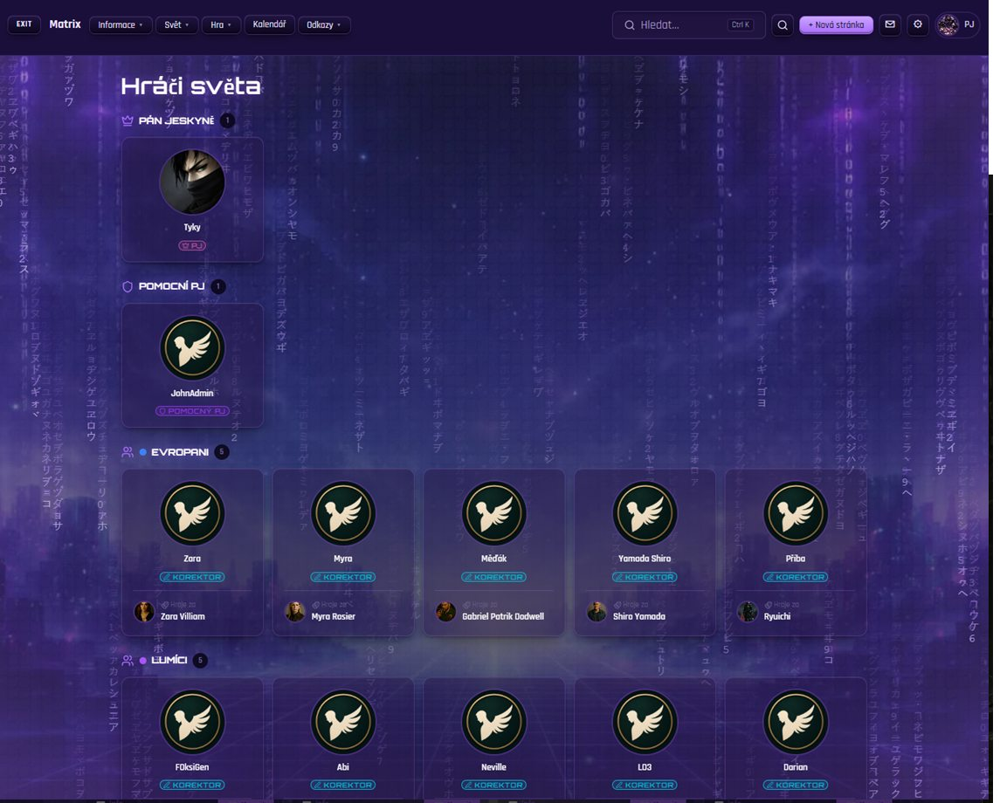
Správa členů v nastavení — tabulka členů s rolemi, skupinami, postavami a akcemi v jednom přehledu.
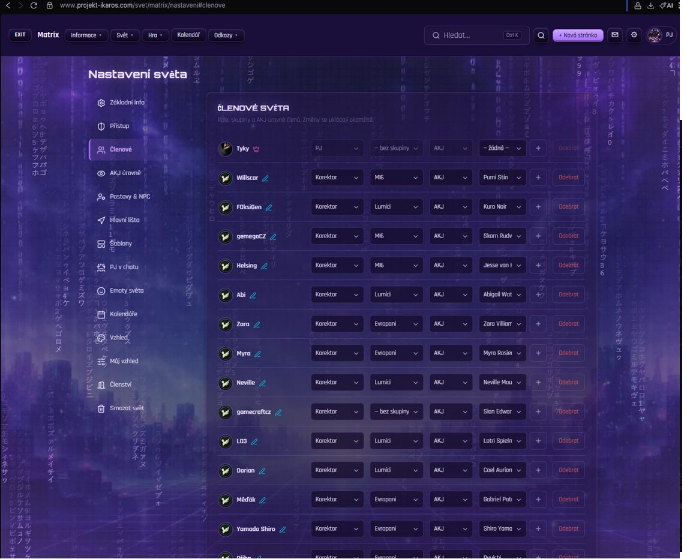
Nastavení role člena — výběr role s bezpečnostními pojistkami proti povýšení nad vlastní úroveň.
Změna role
Vypravěč nebo Pomocný PJ vybere členovi novou roli. Povýšení na PJ potvrzuje zvláštní dialog. Vlastní řádek nelze editovat a nikdo nesmí povýšit jiného na roli vyšší nebo rovnou své vlastní.
Skupina
Zařazení člena do družiny nebo frakce výběrem ze skupin světa, nebo „bez skupiny". Promítne se do chatu i seznamů.
Prověrková úroveň (AKJ)
Přidělení utajovací úrovně, která členovi zpřístupní citlivé záložky stránek (podrobně v kapitole o stránkách a utajení).
Postava
Přiřazení existující postavy členovi nebo její odpojení. Vypravěč může rovnou „vytvořit novou postavu pro člena" — bez přepínání obrazovek.
Odebrání člena
Vyřazení člena ze světa s potvrzením. Nelze odebrat sebe ani člena s rolí PJ — pojistka proti nehodám.
Skupiny a barvy
Pod tabulkou má Vypravěč editor skupin — zakládání družin, jejich barvy a znaky (jen PJ).
Bezpečnostní strop pravomocí
Systém hlídá, aby nikdo nepovýšil sám sebe ani nepřebral moc nad výše postaveným. Pomocný PJ vidí v nabídce jen role nižší než svoji a nemůže měnit členy se stejnou nebo vyšší rolí. Roli vlastníka světa nelze měnit vůbec — vlastnictví se jen předává. Vy tak máte jistotu, že se nikdo „neprokliká" k pravomocem, které mu nepatří.
6. Skupiny a družiny
Skupina je pojmenovaná družina nebo frakce — způsob, jak přehledně organizovat členy a jejich postavy. Skupina není role ani oprávnění; je to organizační a vizuální nálepka propojená s chatem. Dává vaší kampani strukturu, kterou hráči vidí na první pohled.
Skupiny světa
Družiny a frakce, do kterých se členové zařazují.
Co získáš: přehlednou organizaci hráčů, barevné odlišení v chatu i seznamech a samostatnou stránku každé družiny s jejím znakem — kampaň hned působí ucelenějším a profesionálnějším dojmem.
Jak to funguje: každá skupina má název, vlastní barvu (odlišuje členy v chatu a seznamech) a vlastní znak/emblém (obrázek). Znak nahrává Vypravěč a automaticky se objeví i jako ikona příslušného chatovacího kanálu skupiny. Změna skupiny člena rovnou upraví i přístup do jejího kanálu.
Pro koho: zakládá a spravuje je Vypravěč; stránku skupiny vidí každý člen. Jeden člen patří vždy nejvýš do jedné skupiny.
7. Přítomnost a kdo je online
Platforma vám ukazuje, kdo je právě aktivní — ve dvou vrstvách: živý stav v reálném čase (online / nečinný / offline) a hrubší signál „byl tu nedávno". Díky tomu poznáte, kdy má smysl psát a kdy se domluvit na sezení.
Živý online stav
U jmen a avatarů svítí barevná tečka: online, nečinný (po pár minutách bez aktivity) a offline. Stav se aktualizuje okamžitě, jak se lidé připojují a odpojují. Návrat k obrazovce nebo pohyb myší vás zase „rozsvítí".
Byl tu nedávno
Doplňkový signál „aktivní v posledním zhruba dni" — orientační informace, kdo se ve světě objevil, i když zrovna není online. Pomáhá odhadnout, kdo je z party reálně aktivní.
Panel Přítomní pro Vypravěče
V chatu světa má Vypravěč panel se seznamem přítomných členů — důležitý nástroj pro vedení hry, který ukazuje, kdo je právě k dispozici. Detailně ho popisuje kapitola o chatu.
8. Governance — Vypravěč je pán světa
Tohle je jeden z nejdůležitějších principů celé platformy a stojí za to ho zdůraznit — protože vám dává jistotu, kterou jinde nedostanete.
Do vašeho světa vám nikdo nemluví
Ani globální administrátor nebo superadministrátor platformy nemůže ve vašem světě schvalovat žádosti, měnit role, předat svět, mazat ho ani upravovat jeho nastavení. Tyhle pravomoci patří výhradně vám jako Vypravěči. Administrátor svět kvůli údržbě vidí, ale do jeho řízení nezasahuje. Je to záměrné: každý Vypravěč je suverénním pánem svého světa a vaše kampaň zůstává vaše.
Jediná výjimka, kdy administrátor platformy zasáhne, je záchrana opuštěného světa — když byl svět smazán a je potřeba ho ve lhůtě obnovit, případně dosadit nového vlastníka. Mimo tuto jednu pojistku administrátor do dění ve vašem světě nezasahuje.
9. Mazání a obnova světa
Smazání světa je navržené bezpečně, abyste nikdy nechtěně nepřišli o měsíce práce. Máte záchrannou síť, i kdyby vám ujela ruka.
Smazání světa
Šetrné mazání s ochranným oknem.
Co získáš: klid, že smazání není konečné — máš 30 dní na rozmyšlenou, než data nenávratně zmizí.
Jak to funguje: svět smažeš s dvojím potvrzením, ten se skryje, ale data zůstanou dalších 30 dní. Po lhůtě se vše trvale a důkladně uklidí. Smazat můžeš sám, ale obnovit už ne — o obnovu se žádá administrátor.
Pro koho: pro Vypravěče světa (Nastavení → záložka „Smazat svět").
Obnova světa
Záchranná pojistka v rukou administrátora.
Co získáš: reálnou šanci vrátit svět zpět, i kdyby ho někdo smazal omylem — dokud běží 30denní lhůta.
Jak to funguje: administrátor obnoví smazaný svět během lhůty, volitelně zároveň dosadí nového vlastníka (pokud původní Vypravěč odešel). Po uplynutí 30 dní už obnova není možná.
Pro koho: jen administrátor nebo superadministrátor platformy — je to jediný případ, kdy zasahuje do osudu konkrétního světa.
4
režimy přístupu světa
6
světových rolí
30
dní na obnovu smazaného světa
PJ
je suverénním pánem svého světa
Část II — Co umíme
Nastavení světa a hlavní lišta
Každý svět má své řídicí centrum — stránku Nastavení. Z jednoho místa si vyladíte úplně všechno: základní informace, vzhled a barvy, členy, prověrkové úrovně, kalendáře, měny i samotné smazání nebo předání světa. Zvláštní pozornost si zaslouží stavitel hlavní lišty, kterým si poskládáte horní menu světa přesně na míru. A protože veškerou správu řídí role uvnitř světa, pánem nastavení jste vy jako Vypravěč — ne správce platformy. Svět si stavíte podle sebe a nikdo vám do něj nesahá.
Jak je Nastavení postavené
Nastavení světa je jedna přehledná stránka rozdělená do záložek. Která záložka se vám ukáže, závisí na vaší roli (a u jedné i na herním systému světa) — takže vidíte jen to, co opravdu potřebujete, a neztrácíte se v možnostech, které vám nepatří. Každá záložka je samostatný nástroj a ukládá jen to, co jste skutečně změnili.
1. Přehled všech záložek nastavení
Tahle tabulka shrnuje všechny záložky, od jaké role jsou viditelné a co vám dají. Role jdou od nejnižší (Čtenář) po nejvyšší (PJ).
Záložka
Od role
K čemu vám slouží
Základní info
Korektor
Název, popis, žánr, herní systém, kapacita, hlavní obrázek, kostky.
Přístup
Korektor
Režim přístupu světa (veřejný / se schválením / soukromý / uzavřený).
Vzhled
Korektor
Sdílené téma, barvy a pozadí světa, které vidí všichni členové.
Šablony
Korektor
Šablony atributových tabulek pro nové stránky.
Členové
Pomocný PJ
Správa členů — role, skupiny, prověrky, postavy, skupiny a barvy.
Prověrkové úrovně
Pomocný PJ
Utajovací stupně, které řídí přístup k citlivým záložkám stránek.
PJ v chatu
Pomocný PJ
Persona vypravěče pro vystupování v chatu.
Emotikony světa
Pomocný PJ
Vlastní emotikony pro chat tohoto světa.
Kalendáře
Pomocný PJ
Herní kalendáře světa a výchozí kalendář.
Postavy a NPC
PJ
Které záložky se zobrazují na detailu hráčských postav a NPC.
Hlavní lišta
PJ
Rozcestník na stavitele horního menu světa.
Šablona deníku
PJ (jen vlastní systém)
Návrh struktury deníkového listu postavy u světů s vlastním systémem.
Smazat svět
PJ
Měkké smazání světa s 30denním obdobím na obnovu.
Můj vzhled
Čtenář
Osobní doladění vzhledu světa jen pro mě (jas, kontrast, barvy).
Členství
Čtenář
Odejít ze světa nebo (vlastník) předat svět jinému členovi.
Rozhodujete vy, ne správce platformy
Co kdo v nastavení vidí a smí měnit, řídí výhradně skutečná role člena ve světě. Administrátor platformy, který není zároveň Vypravěčem daného světa, nevidí žádné správcovské záložky a nemůže nic měnit. Vaše kampaň je řízena vámi a vaším vedením — to je pevná záruka, ne jen slib.
2. Záložky pro obsah a metadata
Základní info
Identita světa a jeho herní rámec.
Co získáš: kompletní vizitku světa pod kontrolou — od názvu a popisu po herní systém a kostky. Tím dáváš kampani tvář, kterou uvidí každý zájemce.
Jak to funguje: upravíš název, popis (identitu), žánr, text „Koho hledáte", kapacitu (max počet hráčů), herní systém, používané kostky a mechaniky, hlavní obrázek a tři přepínače viditelnosti hodů kostkou na taktické mapě. Ukládají se jen změněná pole. Změna herního systému chytře vymění kostky a založí novou strukturu deníku postav.
Pro koho: Korektor a výše. Webová adresa (slug) světa je pevná a odtud se nemění.
Přístup
Otevřenost světa pro nové členy.
Co získáš: okamžitou kontrolu nad tím, jak je svět otevřený — od náboru až po uzamčení doběhlé kampaně, jediným přepnutím.
Jak to funguje: přepneš svět mezi režimy veřejný, veřejný se schválením, soukromý a uzavřený. Přepnutí na uzavřený potvrzuje dialog.
Pro koho: Korektor a výše. Režim platí globálně pro celý svět — žádné výjimky pro jednotlivce.
Šablony stránek
Připravené struktury atributových tabulek pro nové stránky.
Co získáš: jednotný vzhled obsahu napříč světem a úsporu času — místo opisování stejné tabulky pořád dokola stačí jedno kliknutí.
Jak to funguje: vytvoříš, upravíš a smažeš šablony; každá má název, ikonu, sadu hlaviček tabulky a výchozí titulek. V editoru stránek se pak nabízejí jako karty k rychlému použití.
Pro koho: Korektor a výše. Šablona plní jen kostru tabulky, ne celý obsah; smazání šablony nezmění stránky, které ji už použily.
Postavy a NPC
Které záložky se ukazují na profilech postav.
Co získáš: možnost ušít profily postav na míru své kampani — schováš, co se zrovna nehodí, a necháš jen to podstatné.
Jak to funguje: přehlednou maticí zapneš nebo vypneš jednotlivé záložky na detailu postavy (Deník, Finance, Výbava, Kalendář, Poznámky), zvlášť pro hráčské postavy a zvlášť pro NPC. Záložka Profil je vždy povinná. Lze vrátit na výchozí.
Pro koho: Vypravěč (PJ). Skrytí je jen otázka pohledu — data se nemažou, jen se nezobrazují.
Šablona deníku
Návrh deníkového listu pro světy s vlastním systémem.
Co získáš: deníkový list postavy přesně podle pravidel svého vlastního systému — nemusíš se přizpůsobovat cizí šabloně.
Jak to funguje: navrhneš strukturu deníkového listu — bloky, jejich názvy, typy a pořadí. Vytvoření nové verze schématu archivuje předchozí.
Pro koho: Vypravěč, a jen u světů s „Vlastním systémem". U předvolených systémů se záložka vůbec nezobrazí — struktura deníku je už hotová automaticky.
3. Vzhled světa — barvy a téma
Každý svět může mít vlastní grafický kabát, aby kampaň působila jednotně a atmosféricky. Vzhled má dvě úrovně: sdílenou (nastaví vedení, vidí ji všichni) a osobní (každý člen si může pro sebe doladit jas a kontrast kvůli pohodlí). Atmosféru si tak buduje svět a zároveň nikomu nekazí čtení.
Sdílené téma (záložka Vzhled)
Korektor a výše vybírá z předpřipravených motivů, dolaďuje vlastní barvy a nahraje vlastní obrázek na pozadí. Tlačítkem „Zpět na preset" vyčistí všechny úpravy. Tento vzhled vidí všichni členové — dává světu jeho rozpoznatelnou tvář.
Můj vzhled (osobní)
Každý člen si pro sebe upraví jas a kontrast a nastaví vlastní barvy nad sdíleným motivem — kvůli pohodlí a přístupnosti. Tyto změny vidí jen on a kdykoli se vrátí k tomu, co nastavil Vypravěč.
Živý náhled při úpravě vzhledu
Když ladíte barvy a téma, změny se okamžitě promítají do celého světa jako živý náhled — vidíte přesně, jak svět dopadne, ještě než cokoli uložíte. Jakmile editaci opustíte, náhled se uklidí. Některé světy mají i speciální efekt na pozadí (například padající znaky ve stylu „matrixu" u firemního motivu platformy).
4. Záložky pro správu členů a chodu světa
Členové
Hlavní místo pro řízení lidí ve světě.
Co získáš: kompletní správu party z jedné tabulky — role, skupiny, prověrky i postavy bez přeskakování mezi obrazovkami.
Jak to funguje: u každého člena měníš roli, skupinu, prověrkovou úroveň a přiřazenou postavu, přepneš „hraje zdarma", člena odebereš nebo mu rovnou vytvoříš novou postavu. Pod tabulkou zakládáš skupiny, určuješ jejich barvy a nahráváš znaky.
Pro koho: Pomocný PJ a výše; zakládání skupin a barev jen Vypravěč. Nelze udělit roli vyšší než svou vlastní.
Prověrkové úrovně
Stupně utajení, které řídí přístup k citlivým částem stránek.
Co získáš: vlastní systém utajení, kterým vrstvíš tajemství kampaně — každý člen pak uvidí přesně tolik, kolik mu náleží.
Jak to funguje: vytvoříš, pojmenuješ a seřadíš utajovací stupně (například „Důvěrné", „Tajné", „Přísně tajné"). Ty pak řídí, kdo uvidí utajené záložky stránek.
Pro koho: Pomocný PJ a výše. Tato záložka jen definuje, jaké úrovně existují; přidělování členům je v záložce Členové.
PJ v chatu
Persona vypravěče pro vystupování v diskuzi.
Co získáš: možnost vystupovat v chatu jako „Vypravěč" se zvláštním jménem a podobou — odlišíš tak hlas příběhu od svého civilního účtu.
Jak to funguje: nastavíš, jak Vypravěč vystupuje v chatu (zobrazované jméno a podobu v roli vypravěče).
Pro koho: Pomocný PJ a výše. Podrobnosti o chatovacích personách jsou v kapitole o chatu.
Emotikony světa
Vlastní obrázkové emotikony pro chat.
Co získáš: vlastní emotikony, které dají chatu světa osobitý charakter a vtáhnou hráče do atmosféry kampaně.
Jak to funguje: nahráváš, upravuješ a mažeš vlastní emotikony světa a kopíruješ je z jiného světa. K dispozici je počítadlo využití limitu.
Pro koho: Pomocný PJ a výše. Emotikony se pak používají v chatu tohoto světa.
Kalendáře
Herní kalendáře světa.
Co získáš: vlastní běh času ve světě — kalendáře pohánějí časovou osu, události i kalendáře postav, takže celá kampaň žije ve společném čase.
Jak to funguje: spravuješ víc kalendářových konfigurací světa a určíš výchozí kalendář i počátek časové osy.
Pro koho: Pomocný PJ a výše. Podrobnosti jsou v kapitole o kalendáři a čase.
5. Záložky pro sebe sama
Členství
Každý člen tu může opustit svět. Vlastník navíc předá svět jinému členovi (s rolí Hráč a výše) — po předání se z nového stane PJ a z původního Pomocný PJ. Vlastník nemůže odejít, dokud svět nepředá. Máte tak vždy jasnou cestu, jak kampaň bezpečně přenechat dál.
Smazat svět
Vypravěč může svět smazat (s dvojím potvrzením). Data zůstanou 30 dní; po lhůtě se trvale uklidí. Obnovit svět v rámci lhůty může jen administrátor platformy — záchranná síť pro případ omylu.
6. Per-svět vzhled — jak se aplikuje
Vzhled světa se chytře vrství, abyste z toho neměli starost. Sdílený motiv nastaví vedení; přes něj se přidají osobní barvy a doladění jasu a kontrastu daného člena. Výsledek se aplikuje na celé prostředí světa včetně vyskakovacích oken a dialogů, aby vše ladilo dohromady. Když člen svět opustí a vrátí se na platformu, automaticky se obnoví jeho globální motiv. Pánem sdíleného skinu a písma je vedení; člen si dolaďuje jen jas, kontrast a barvy pro sebe.
7. Stavitel hlavní lišty (horní menu světa)
Hlavní lišta je horní navigační pruh světa — to první, co každý člen vidí. Skládáte si ji na samostatné stránce, jediném místě, kde řídíte celé horní menu. Vlevo je editor, vpravo živý náhled a jediné tlačítko Uložit, které samo pozná neuložené změny. Menu světa si tak ušijete přesně podle toho, co vaše kampaň potřebuje.
Viditelnost modulů
Které vestavěné moduly se v liště ukazují.
Co získáš: čisté menu bez balastu — schováš moduly, které tvoje kampaň nepoužívá, a hráči vidí jen to relevantní.
Jak to funguje: zapneš nebo vypneš zobrazení modulů. Skrýt lze Magický systém, Technologie, Časovou osu, Mapu vesmíru, Mapy, Pavučinu, Obchod, Taktickou mapu, Bestiář, Storyboard, Generátor počasí, Převodník měn, Zvukovou databázi, Tvorbu podzemí a Kalendář.
Pro koho: Vypravěč (PJ). Čtyři moduly skrýt nelze, protože jsou nezbytné — Přehled, Stránky, Novinky a Pravidla. Skrytí se týká jen menu; přes přímou adresu modul zůstává dostupný.
Vlastní navigace
Vlastní odkazy a rozbalovací menu nad rámec vestavěných.
Co získáš: menu na míru — přidáš si odkazy a rozbalovací skupiny přesně tam, kam chceš nasměrovat hráče.
Jak to funguje: postavíš strom vlastních položek — buď přímý odkaz, nebo rozbalovací skupinu s vnořenými odkazy. Položky řadíš tlačítky nahoru a dolů (funguje i na dotyku) a u každého odkazu nastavíš cíl.
Pro koho: Vypravěč (PJ). Vlastní navigace se přidává za systémovou — je doplňková a nepřepisuje vestavěné položky.
Šablony menu
Pojmenované sady odkazů k rychlému vložení.
Co získáš: opakovaně použitelné sady odkazů — jednou si je připravíš a pak je vkládáš jedním kliknutím.
Jak to funguje: připravíš si pojmenované sady odkazů a tlačítkem „Vložit" je rozbalíš jako novou skupinu do vlastní navigace.
Pro koho: Vypravěč (PJ). Usnadňuje opakované použití stejných sad odkazů napříč světy.
Box „Poslední informace"
Krátké aktuální oznámení pod hlavičkou.
Co získáš: nepřehlédnutelný kanál pro důležité aktuality — proužek pod hlavičkou uvidí každý hráč ihned po otevření světa.
Jak to funguje: napíšeš krátké oznámení (do 280 znaků), které se zobrazí jako pruh pod hlavičkou světa, a kdykoli ho vypneš. Když text změníš, pruh se členům objeví znovu, i kdyby ho předtím odklikli — aby důležitá novinka neunikla.
Pro koho: Vypravěč (PJ).
Inteligentní skrývání podle role
Horní lišta sama nezobrazuje položky, na které člen nemá právo. Některé moduly se ukazují jen od určité role (například Časová osa a Generátor počasí od role Hráč, Kalendář od Pomocného PJ, Deník vypravěče a Storyboard jen vedení). Díky tomu člen nikdy neklikne na odkaz, který by ho jen odmítl — menu je vždy čisté a smysluplné.
8. Měny světa
Každý svět má vlastní sadu měn, která pohání celou ekonomiku — obchod, finanční účty postav i převodník měn. Měny vznikají automaticky při založení světa podle žánru (fantasy dostane Zlaťák, Stříbrňák a Měďák; kyberpunk Kredit a dolar; vesmír Kredit a Krystal) a dál se spravují v modulu Převodník měn. Ekonomika tak funguje od první chvíle, aniž byste ji museli stavět.
Co měna obsahuje
Kód, název, symbol a kurz vztažený k základní měně. Jedna měna je vždy základní (kurz 1,0) a ostatní se k ní poměřují — díky tomu jdou ceny i účty převádět napříč celým světem.
Kdo měny spravuje
Úpravu kurzu, názvu a symbolu existující měny zvládne Pomocný PJ. Přidat nebo smazat měnu může jen Vypravěč. Detaily převodníku jsou v kapitole o postavách a ekonomice.
15
záložek nastavení světa
4
nezbytné moduly, které nelze skrýt
280
znaků pro box Poslední informace
2
úrovně vzhledu: sdílený a osobní
Část II — Co umíme
Stránky, wiki a utajení
Srdcem každého světa je jeho encyklopedie — systém stránek, kde žije veškerý obsah: popisy míst, frakce, postavy, historie, pravidla i tajemství. Funguje jako wiki s plnohodnotným editorem, vzájemnými odkazy a obrázky, takže si svět vybudujete do hloubky a hráči se v něm sami ztratí — v tom dobrém slova smyslu. A nad tím vším stojí jedinečná funkce utajených záložek, díky které jedna a tatáž stránka ukáže každému čtenáři jiný díl pravdy podle jeho prověrky. To běžné wiki nástroje neumí a právě tím se z platformy stává mocný vypravěčský nástroj.
Co je „stránka" a proč vám usnadní život
Stránka je základní stavební kámen obsahu světa. Jedna jednotná entita umí být čímkoli — popisem lokace, novinovým článkem, rozcestníkem odkazů, galerií, rodokmenem, video-obrazovkou, ale i profilem hráčské postavy nebo NPC. Pro vás to znamená, že s veškerým obsahem pracujete úplně stejně: stejný editor, stejné odkazování, stejné vyhledávání. Nemusíte se učit pět různých nástrojů — postavy a lokace jsou jen zvláštní druhy stránek, ke kterým se navíc připojí herní data (deník, kalendář, finance).
1. Typy stránek
Při zakládání stránky volíte její typ. Ten určuje, jak stránka vypadá a co umí — vyberete přesně to, co se hodí pro daný kus obsahu.
Ostatní
Univerzální stránka — popis, text, obrázky. Výchozí volba pro většinu obsahu (frakce, historie, pojmy).
Lokace
Místo ve světě. Navíc si nese vlastní kalendář událostí a může vystupovat na taktické mapě.
Noviny
Novinový článek s vlastními metadaty — pro vnitroherní zpravodajství a atmosféru.
Seznam
Rozcestník odkazů — přehledová stránka, která vede dál. Hodí se na obsah pravidel.
Galerie
Obrázková galerie s lightboxem pro pohodlné prohlížení.
Rodokmen
Speciální zobrazení rodových a příbuzenských vztahů.
Obrazovka
Stránka s vloženými videi (například z YouTube) — promítací plátno světa.
Postava hráče
Profil hráčské postavy — má vlastníka a připojený deník, finance, výbavu, kalendář a poznámky.
NPC
Postava řízená vypravěčem — má deník, kalendář a poznámky, ale bez vlastníka.
Ať otevřete jakýkoli typ, čte se vám pohodlně — každý dostane zobrazení, které mu sedí: lokace se svým kalendářem, NPC se svým deníkem, běžná stránka s textem a obrázky.
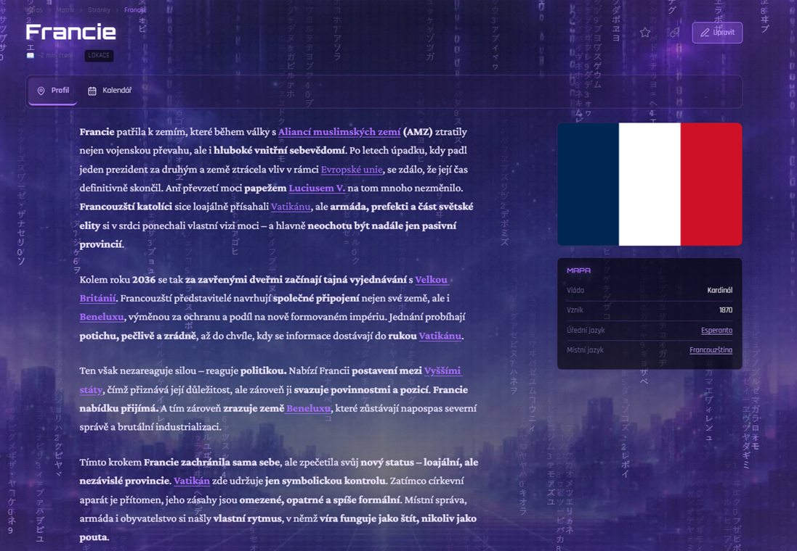
Lokace — popis místa s atributovou tabulkou, obrázkem a vlastním kalendářem událostí.
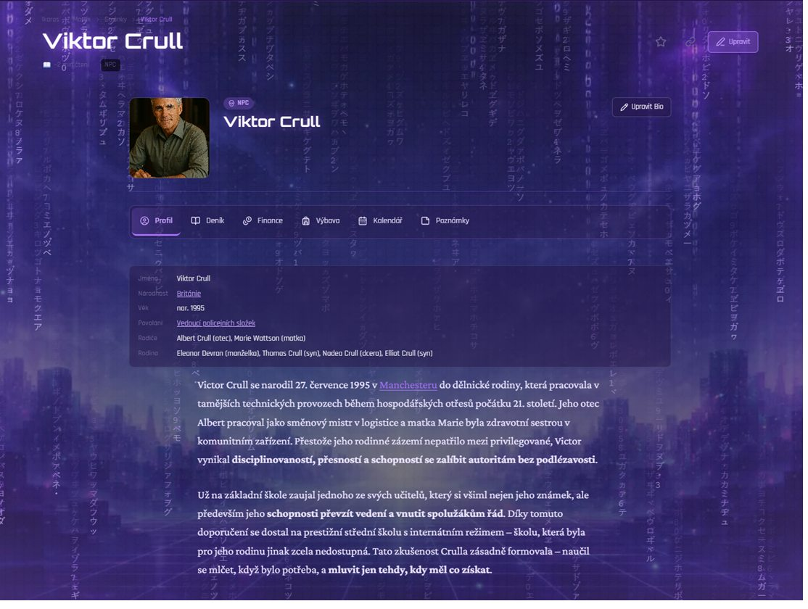
NPC — profil nehráčské postavy s deníkem a poznámkami pro vypravěče.
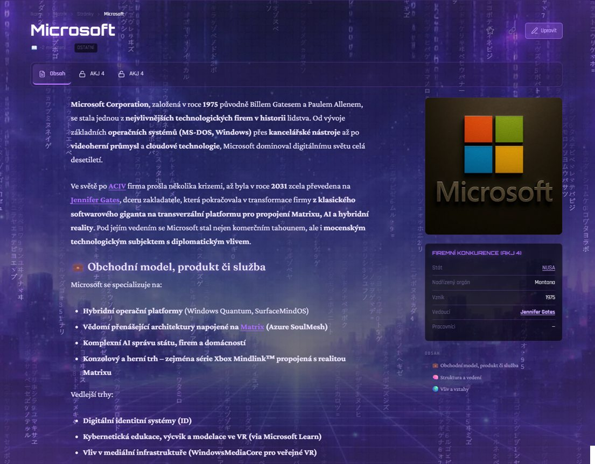
Ostatní — univerzální stránka s formátovaným textem, obrázky a vzájemnými odkazy.
2. Encyklopedie světa — seznam stránek
Vstupní brána ke všemu obsahu. Přehledná stránka s kartami všech stránek světa, kde rychle najdete přesně to, co hledáte.
Seznam stránek
Index celé encyklopedie světa.
Co získáš: okamžitý přehled o celém světě a rychlé hledání — žádné bloudění, k libovolné stránce se dostaneš za pár vteřin.
Jak to funguje: fulltextově hledáš podle názvu (zvládá i diakritiku), filtruješ podle typu stránky, řadíš (výchozí pořadí, abecedně, podle typu), nahoře pracuješ se sekcí „Oblíbené" včetně přetahování pro změnu pořadí (i na dotyku), prokliknеš kartu na stránku a hvězdičkou přepínáš oblíbené. Když svět ještě stránky nemá, tvůrci se nabídne „Vytvořit první stránku".
Pro koho: každý člen světa (Čtenář a výše). Tlačítko „Nová stránka" se ukáže od role Pomocný PJ.
Co nevidíte, to neexistuje
Stránky chráněné přístupem se nepovolaným do seznamu vůbec nezařadí — neprozradí se ani jejich existence. Jako Vypravěč máte tedy jistotu, že tajemství světa zůstanou skrytá, dokud sami nerozhodnete jinak.
3. Čtení stránky
Při otevření stránky si systém podle jejího typu vybere vhodné zobrazení a přidá řadu pomocníků, aby se vám četlo příjemně a rychle.
Prohlížeč stránky
Bohatě vybavené čtecí rozhraní.
Co získáš: komfortní čtení s odhadem doby, automatickými odkazy a klávesovými zkratkami — v rozsáhlé encyklopedii se orientuješ jako doma.
Jak to funguje: čteš obsah v zobrazení podle typu stránky; používáš lištu utajených záložek; vidíš odhad doby čtení; skáčeš na nadpisy přes kotvy; automaticky se proklikáváš na zmíněné entity (nefunkční odkazy se zvýrazní červeně); otevíráš obrázky ve velkém; vyznačíš a citujеš text. Po ruce máš zkratky: paleta příkazů, přepnutí oblíbené, vstup do editoru, nápověda a návrat na seznam.
Pro koho: každý člen světa s přístupem k dané stránce. Vedení má navíc panel „Odkazuje sem" se zpětnými odkazy.
4. Editor stránky
Plnohodnotný nástroj pro tvorbu a úpravu obsahu, rozdělený do logických panelů, takže máte vše po ruce a přitom přehledně. Pracovat s ním smí Pomocný PJ a výše. Od založení nové stránky až po dolaďování textu a obrázků je to jedno plynulé prostředí.
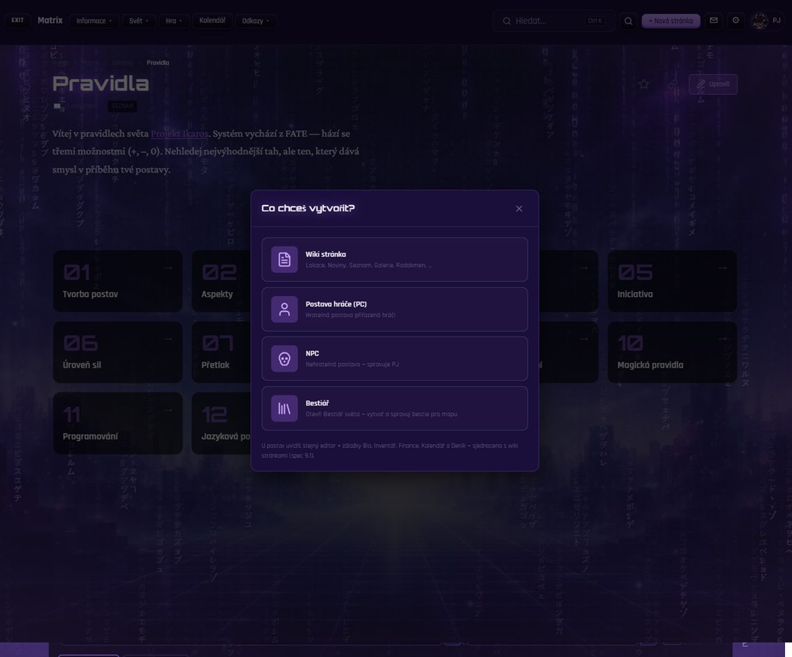
Založení nové stránky — výběr typu a základní identita stránky.
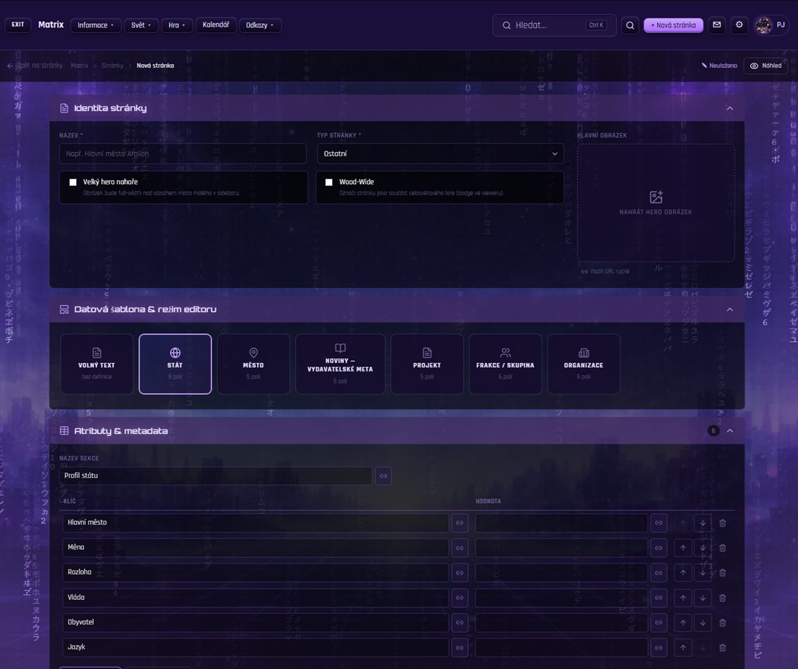
Editor s panely vlevo a bohatým textovým editorem uprostřed.
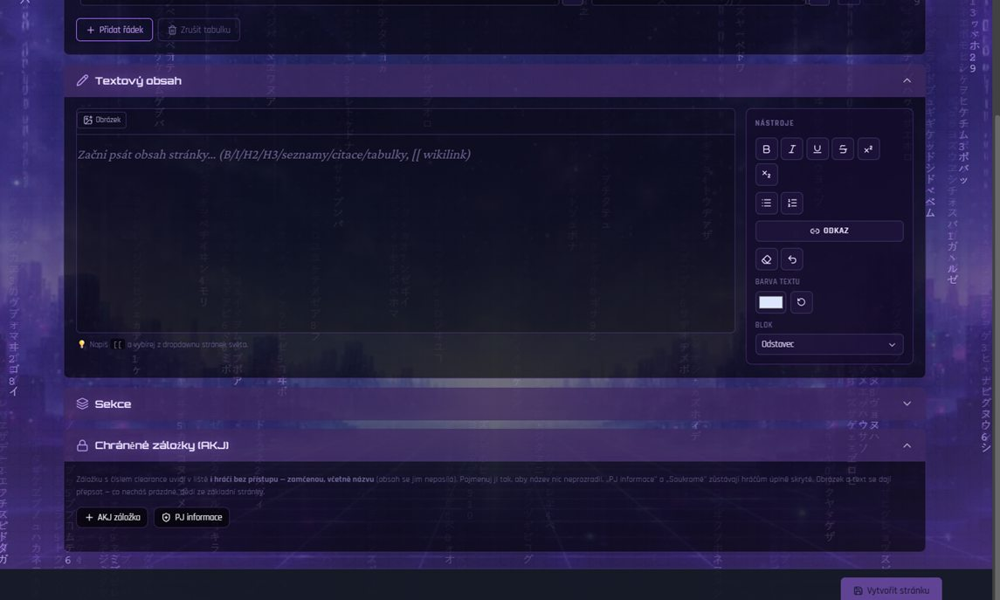
Formátování textu, atributová tabulka a živý náhled výsledku.
Identita stránky
Název, typ (s upozorněním na možnou ztrátu dat při změně), hlavní obrázek s výřezem a přiblížením, velký obrázek a pořadí v seznamu.
Datová šablona
Karty připravených šablon atributových tabulek (například „Postava", „Stát") — kliknutím se naplní hlavičky a výchozí titulek.
Atributová tabulka
Strukturovaná tabulka vlastností s hlavičkami a hodnotami; do buněk lze psát formátovaný text a odkazy.
Obsah (textový editor)
Bohatý editor: tučné, kurzíva, podtržení, přeškrtnutí, horní a dolní index, nadpisy, seznamy, citace, tabulky, barvy a bloky. Odkazy na jiné stránky vložíš zápisem dvou hranatých závorek nebo pohodlným vyhledávačem odkazů; obrázky nahráváš přímo do textu.
Galerie a videa
Pro typy Galerie a Obrazovka — správa obrázků nebo vložených videí.
Rozcestník a metadata
Pro typ Seznam editace odkazů menu, pro Noviny vlastní metadata.
Profil postavy
Pro hráčské postavy a NPC výběr vlastníka a správa utajených záložek.
Sekce a utajené záložky
Strukturované rozbalovací sekce a panel chráněných záložek (popsáno dále).
Vaše práce je v bezpečí
Editor automaticky průběžně ukládá rozpracovaný koncept do prohlížeče, takže o práci nepřijdete ani při zavření okna. Při uložení hlídá souběžné úpravy — pokud mezitím stránku změnil někdo jiný, nabídne volbu obnovit cizí verzi nebo přepsat, takže si práci navzájem nepřepíšete. A veškerý vložený obsah se na pozadí čistí, aby do něj nešlo propašovat nebezpečný kód.
5. Utajené záložky (AKJ) — vlajková funkce
Tohle je jedna z nejsilnějších a nejosobitějších funkcí platformy a stojí za to ji vysvětlit do hloubky — protože nic podobného běžné wiki nástroje nenabízejí a právě ona dělá z encyklopedie skutečně vypravěčský nástroj.
Jedna stránka, mnoho vrstev pravdy
Představte si stránku o tajné organizaci. Pro běžného čtenáře je to jen nenápadná firma. Ale člen s patřičnou prověrkou uvidí na téže stránce navíc záložky s pravým posláním organizace, jmény agentů a plány. A nejvyšší prověrka odhalí ještě hlubší vrstvu. Každý čtenář vidí přesně tolik, kolik mu náleží. Jako Vypravěč tak řídíte informace s chirurgickou přesností a budujete napětí i tajemství přímo v encyklopedii — bez toho, abyste museli udržovat několik verzí téže stránky a hlídat, komu kterou poslat.
Jak prověrky fungují
V nastavení světa si nadefinujete vlastní stupně utajení (například „Důvěrné", „Tajné", „Přísně tajné") a přidělíte je jednotlivým členům. Ke každé záložce stránky pak určíte, kdo ji smí vidět — buď podle prověrkové úrovně, nebo jmenovitě konkrétním hráčům. Máte tedy úplnou kontrolu nad tím, kdo se k čemu dostane.
Zamčené versus odemčené záložky
Záložky se chovají chytře — zároveň lákají i chrání, takže pracují pro váš příběh.
Zamčená záložka 🔒
Pokud je záložka vázaná na prověrkovou úroveň, čtenář bez přístupu ji vidí jako zamčenou — pozná její jméno a požadovanou úroveň, ale obsah ani citlivé detaily ne. Vidí, že „něco se tají", což buduje napětí a motivaci. Jakmile prověrku získá, záložka se odemkne 🔓 a obsah se odhalí.
Úplně skrytá záložka
Záložky vyhrazené jen vedení (například „PJ informace") nebo čistě soukromé zůstávají pro nepovolané úplně skryté — neprozradí ani svou existenci. Ideální na poznámky vypravěče, o kterých nikdo jiný nemá ani tušit.
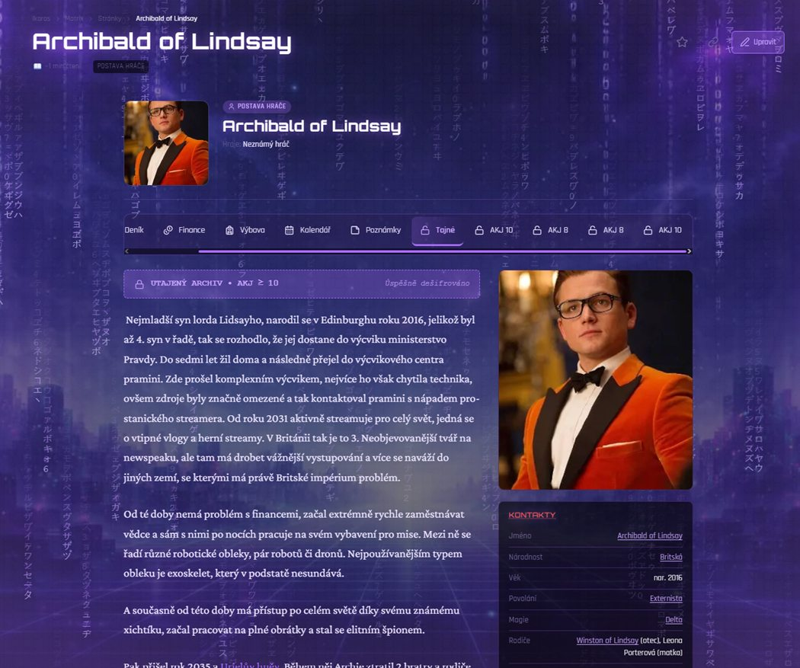
Utajené záložky v praxi — zamčená záložka se zámkem a názvem vedle běžně dostupného obsahu. Funkce, kterou jinde nenajdete.
Správa utajených záložek (v editoru)
Váš nástroj pro vrstvení informací.
Co získáš: možnost stavět vrstvy tajemství přímo do jedné stránky — odpadá vedení paralelních verzí a riziko, že omylem prozradíte něco, co jste prozradit nechtěli.
Jak to funguje: přidáš záložku, pojmenuješ ji, seřadíš; určíš „kdo vidí" — prověrkovou úroveň nebo jmenovité hráče; použiješ připravené předvolby „PJ informace" a „Soukromé"; vyplníš vlastní obsah záložky (obrázek, text, tabulka) — nevyplněné části se zdědí ze základní stránky; u hráčských postav přepneš, zda vlastník postavy svou utajenou záložku vidí.
Pro koho: Vypravěč a vedení; odemčené vidí vždy PJ. Vlastník hráčské postavy vidí utajené záložky své postavy, dokud mu je Vypravěč nezamkne.
Není to jen „schovat z očí"
Kdo má přístup, vynucuje server — utajený obsah se k nepovolanému vůbec neodešle. Neexistuje žádný trik prohlížeče ani „pohled do zdroje", kterým by se dal obejít. Vaše tajemství jsou skutečně chráněná, ne jen vizuálně skrytá.
6. Ochrana celé stránky
Vedle utajení jednotlivých záložek lze chránit i celou stránku. Nastavíte pravidla přístupu, která kombinují čtyři kritéria: konkrétní jmenovitě uvedené hráče, prověrkovou úroveň, minimální roli ve světě a pojmenovaný stupeň utajení — stačí splnit jedno z nich. Chráněná stránka se nepovolaným neobjeví ani v seznamu, ani ve vyhledávání. Skryjete tak celé části světa, dokud nepřijde jejich čas.
7. Šablony stránek
Datové šablony
Připravené kostry atributových tabulek pro opakované použití.
Co získáš: jednotný vzhled stejných typů obsahu a úsporu času — třeba jedna šablona „Postava" nebo „Stát" pro celý svět, vždy stejně uspořádaná.
Jak to funguje: založíš šablonu s názvem, ikonou, sadou hlaviček tabulky a výchozím titulkem. V editoru stránky se pak nabízí jako karta na jedno kliknutí.
Pro koho: spravuje Korektor a výše; používá kdokoli, kdo edituje stránku. Šablona plní jen kostru tabulky, ne celý obsah. Světy se systémem „matrix" dostanou několik výchozích šablon hned při založení.
8. Hromadná správa stránek
Administrace stránek
Tabulkový přehled všech stránek pro správce obsahu.
Co získáš: nadhled nad celou encyklopedií a rychlý úklid — všechny stránky v jedné tabulce, řazení a hromadné mazání bez klikání po jedné.
Jak to funguje: zobrazíš všechny stránky v tabulce (název, typ, datum úpravy, pořadí) s řazením podle sloupců, hledáš, filtruješ podle typu, mažeš jednotlivě i hromadně přes zaškrtávací políčka, prokliknеš do editoru nebo založíš novou stránku.
Pro koho: Pomocný PJ a výše. Mazání nemá krok zpět; při smazání se zároveň uklidí navázané obrázky a stránka se odebere z oblíbených u všech členů.
9. Referenční stránky: Pravidla, Magie, Technologie
Při založení světa se automaticky vytvoří sada klíčových referenčních stránek, jejichž obsah se přizpůsobí volbám světa (herní systém, magické tradice, úroveň technologie). Kampaň tak má od první chvíle připravený základ pravidel a hráči vědí, podle čeho se hraje.
Pravidla
Hlavní pravidlová stránka světa, dostupná i samostatným odkazem. Obsah se předvyplní podle zvoleného herního systému. Tuto stránku nelze z menu skrýt — je nezbytná.
Magický systém
Univerzální škála magické úrovně a popis zvolených magických tradic světa. Lze skrýt z menu, pokud svět magii nepoužívá.
Technologie
Škála technologické úrovně a rozsah technologií světa. Také lze z menu skrýt.
Další referenční
Zakládá se i stránka častých dotazů a video-stránka. Světy se systémem „matrix" dostanou ucelenou Pravidlovou knihu s kapitolami.
10. Oblíbené stránky
Oblíbené stránky
Osobní rychlý přístup k tomu, co používáte nejvíc.
Co získáš: své nejdůležitější stránky vždy na dosah — vlastní postava, mapa, pravidla — bez hledání v seznamu.
Jak to funguje: přepneš oblíbené hvězdičkou (na kartě i ve čtení, případně klávesou), měníš jejich pořadí přetahováním a vidíš je v sekci oblíbených na seznamu stránek i v pravém sloupci úvodního dashboardu světa.
Pro koho: každý člen, pro každý svět zvlášť. Oblíbené jsou osobní a nesdílí se mezi členy; při smazání stránky se automaticky odeberou z oblíbených u všech.
9
typů stránek
∞
vrstev utajení na jedné stránce
4
kritéria ochrany celé stránky
🔒
zamčené záložky lákají, neprozradí
Část II — Co umíme
Postavy, bestiář a ekonomika
Postava je to, čím se do příběhu vlastně vstupuje — tvoje druhé já ve světě. Projekt Ikaros kolem ní staví celý provázaný ekosystém: deníkový list, který vypadá přesně podle pravidel tvého systému, peněženku napojenou na obchod, výbavu, kalendář i soukromé poznámky s vypravěčem. K tomu bohatý bestiář tvorů a nepřátel. Tahle kapitola ukazuje, co konkrétně z toho máš jako hráč i jako vypravěč — a proč ti to ušetří hodiny papírování a tabulek v Excelu.
Co ti to dává v jedné větě
Místo papírového listu, sdíleného dokumentu a kalkulačky na měny máš jednu živou kartu postavy, kde se ti statistiky počítají, nákupy odečítají peníze a přidávají věci do batohu, a vypravěč ti může do téže postavy vepsat tajemství, které uvidíš jen ty. Vše dostupné z mobilu i počítače, kdykoli a odkudkoli.
1. Tři druhy bytostí — a proč to pro tebe znamená pořádek
Aby se ve hře nikdo neztratil, platforma jasně odlišuje tři druhy herních bytostí. Každý má přesně to, co potřebuje, a nic navíc, co by mátlo.
Vlastnost
Hráčská postava (PC)
NPC
Bestie
Patří
hráči
nikomu (řídí vypravěč)
uživateli, světu nebo systému
Deník
ano
ano
ne
Finance a výbava
ano
ne
ne
Kalendář a poznámky
ano
ano
ne
Statistiky (listina)
ano
ano
ano
Kde se tvoří
adresář postav
adresář postav
bestiář
Na taktické mapě
žeton hráče
žeton NPC
samostatná instance (kopie)
NPC versus bestie — proč na tom záleží
NPC je plnohodnotná postava s vyprávěcím deníkem, kalendářem a poznámkami — vystupuje ve fikci jako konkrétní osoba (král, obchodník, padouch). Bestie je katalogová šablona statistik pro hromadné tvory a nepřátele (smečka vlků, oddíl vojáků) — nemá deník ani příběh, jen čísla. Když vypravěč potřebuje deset stejných goblinů do boje, sáhne po bestii; když potřebuje záhadného mága s tajnou minulostí, vytvoří NPC. Pro hráče to znamená, že karta postavy nikdy není zaneřáděná tím, co k ní nepatří.
Existuje i čtvrtá, příbuzná varianta — Lokace. Je to vlastně stránka místa, ke které se pojí jen kalendář událostí. Lokace patří mezi stránky, ne do adresáře postav.
2. Adresář postav — všechny tváře světa na jednom místě
Adresář je vstupní brána ke všem postavám světa. Přehledné karty rozdělené na hráčské postavy a NPC, s vyhledáváním a filtry — najdeš v něm kohokoli během vteřiny.
Adresář postav
Přehled všech postav světa rozdělený na hráčské a NPC.
Co získáš: okamžitý přehled o tom, kdo ve světě žije — kdo je za kterou postavou, jak vypadá a kam patří. Nemusíš si nic pamatovat ani vést seznam stranou.
Jak to funguje: filtruj podle typu (vše / hráčské / NPC), hledej fulltextově podle jména postavy, adresy i jména hráče (zvládá diakritiku), zapni seskupení podle herních družin s jejich barvami a označuj si oblíbené postavy. Vypravěč zakládá novou postavu průvodcem — hráčskou, NPC nebo rovnou „NPC z bestiáře".
Pro koho: adresář vidí každý člen světa; tlačítko „Nová postava" je vyhrazené vypravěči (PJ).
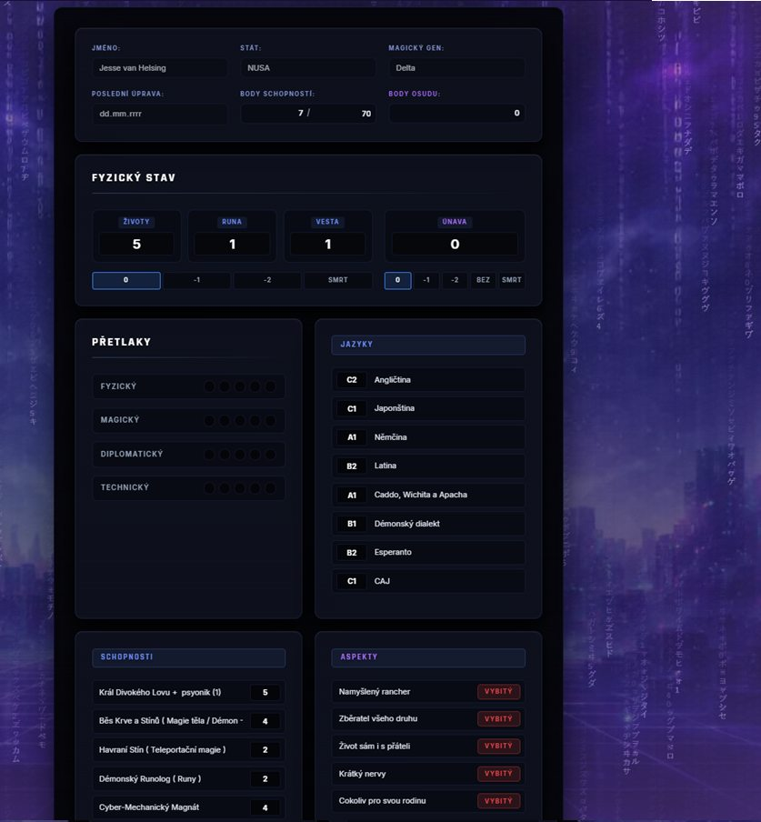
Adresář postav — karty rozdělené do sekcí hráčských postav a NPC, s vyhledáváním a filtry.
Moje postava — jedním klikem do svého života
Každý člen má zkratku „Moje postava". Pokud postavu máš, dostaneš se na ni jedním kliknutím odkudkoli. Pokud ji ještě nemáš, nabídne se ti adresář (a vypravěči navíc možnost postavu rovnou založit). Žádné hledání sebe sama v seznamu.
3. Profil postavy a jeho herní záložky
Postava je vlastně bohatá stránka — má biografii, obrázek a vzhled — ke které se navíc připojuje až pět herních záložek. Veřejnou biografii (Profil) vidí každý, kdo má na stránku přístup. Herní záložky jsou tvoje soukromá pracovna: vidí je jen vedení světa a ty jako vlastník postavy.
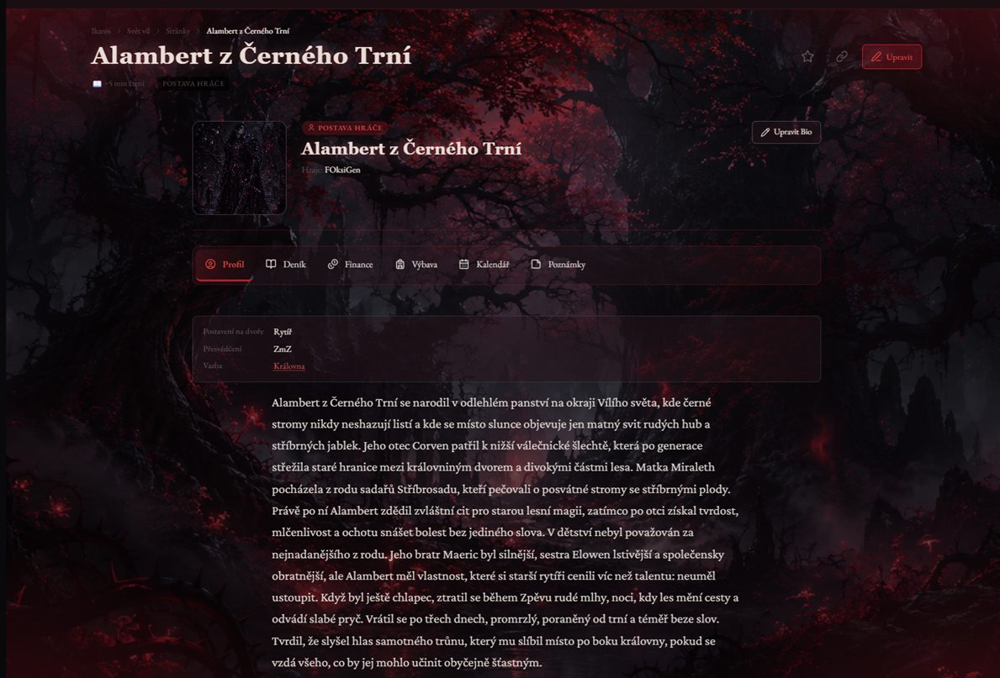
Profil postavy s herními záložkami — Deník, Finance, Výbava, Kalendář a Poznámky pohromadě na jednom místě.
Deník
Tvůj vyprávěcí deník plus herní listina (statistiky) podle systému světa. Vlastní bloky, postupné ukládání po částech, u vedení i hromadné přejmenování polí napříč postavami.
Finance
Měsíční bilance — příjmy a výdaje, zůstatek, transakce, tlačítko „přičíst měsíční" a vrácení poslední transakce. Konec ručního počítání. Jen u hráčských postav.
Výbava
Inventář v sekcích s položkami. Nákup z obchodu sem věc přidá automaticky — batoh se plní sám. Jen u hráčských postav.
Kalendář
Herní události vázané na postavu. Číst ho mohou i běžní členové (mírnější přístup), takže o termínech ví celá družina.
Poznámky
Volné poznámky a soukromé dohody s vypravěčem — co si domluvíte stranou, zůstane zapsané.
Profil (biografie)
Veřejná část — popis, vzhled, obrázek. Tohle o tobě vidí svět. Upravuje se v editoru stránky postavy.
Jak vypadají záložky v praxi
Každá záložka je samostatný, plnohodnotný nástroj. Tady jsou čtyři z nich tak, jak je hráč skutečně používá:
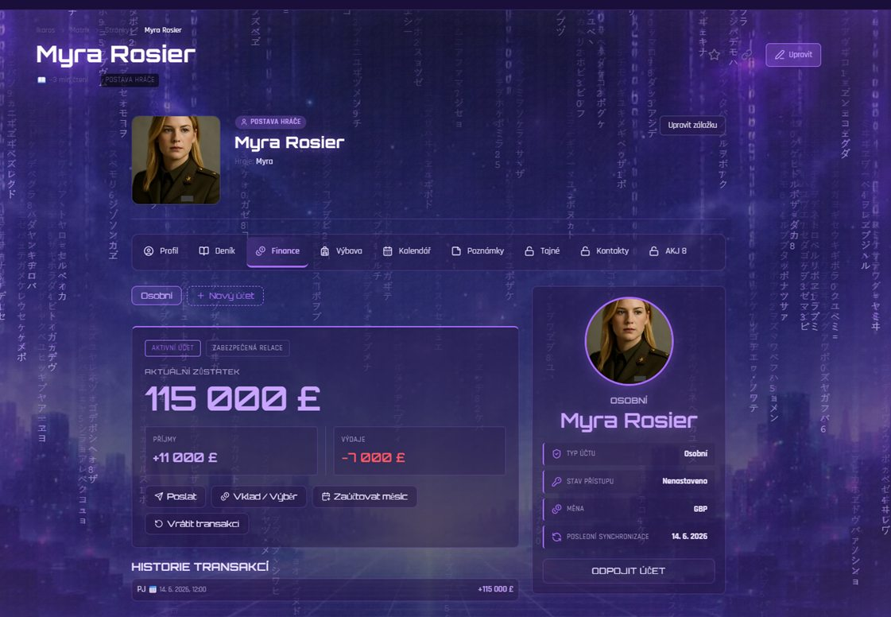
Finance — příjmy, výdaje a zůstatek se počítají samy.
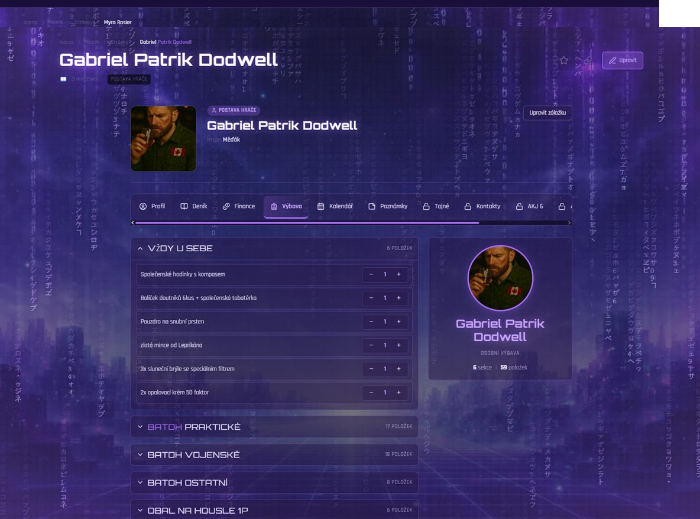
Výbava — inventář v přehledných sekcích, doplňuje ho nákup.
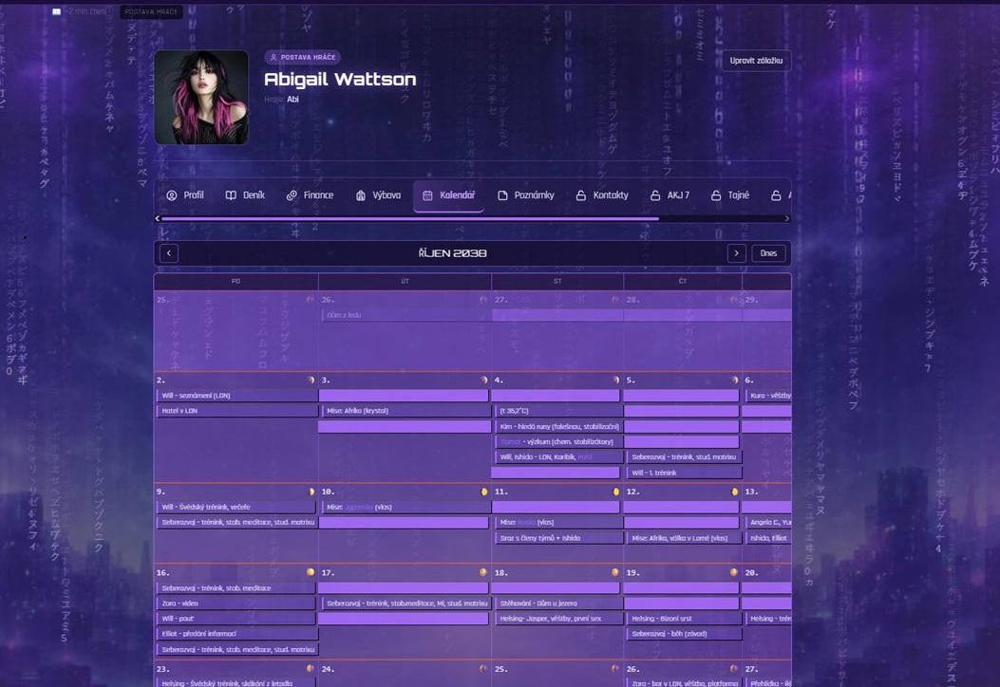
Kalendář — herní události vázané přímo na postavu.
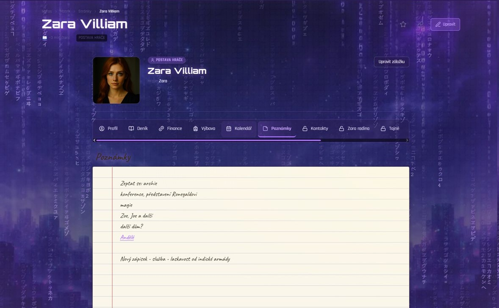
Poznámky — soukromé dohody a připomínky s vypravěčem.
Kdo vidí tvé herní záložky
Herní záložky (Deník, Finance, Výbava, Kalendář, Poznámky) jsou citlivé — vidí je vedení světa (Pomocný PJ a výše) a vlastník dané postavy. Ostatní vidí jen veřejnou biografii. Vypravěč navíc může jednotlivé záložky pro celý svět skrýt v nastavení. Přístup je vynucen na serveru — skrytí není jen kosmetické, citlivá data se k nepovolanému vůbec neodešlou.
4. Deníkové listy pro 13 herních systémů
Tohle je jedna z technicky nejnáročnějších předností platformy — a pro hráče jedna z nejhmatatelnějších. Listina postavy (její statistiky a herní hodnoty) vypadá u každého systému jinak: jiné atributy, jiné dovednosti, jiné rozložení. Projekt Ikaros proto nabízí dedikovaný deníkový list pro 13 různých systémů. Nemusíš nic stavět ani hledat šablonu na internetu — list už je tu a vypadá jako z příručky tvého systému.
Třináct podporovaných herních systémů
Platforma má připravené listiny pro tyto systémy: Obecný (univerzální), Matrix, Volání Cthulhu, Dungeons & Dragons 5. edice, Dračí doupě II, Dračí doupě 1.6, Dračí doupě Hobit, DrD Plus, Fate, GURPS, Jeskyně a draci, Příběhy Impéria a Shadowrun. Pokud svět používá jiný či neznámý systém, automaticky se nasadí univerzální „Obecný" list, takže nic nikdy nespadne a vždy máš s čím hrát.
List se mění podle systému — podívej se
Stejná funkce, tři úplně jiné světy. Když vypravěč u světa zvolí systém, listina každého hráče se sama překlopí do správné podoby. Hráč Dračího doupěte vidí atributy a vlastnosti DrD, hráč D&D svou klasickou kartu a hráč Shadowrunu kyberpunkové statistiky:
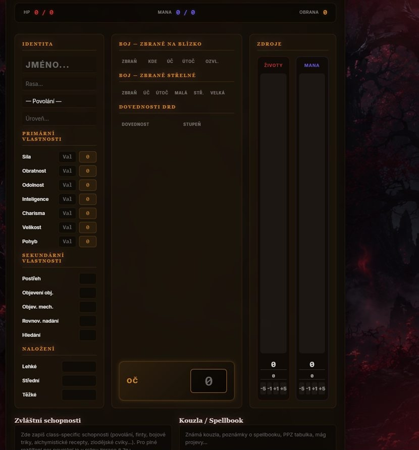
Dračí doupě 1.6 — atributy a vlastnosti podle klasiky.
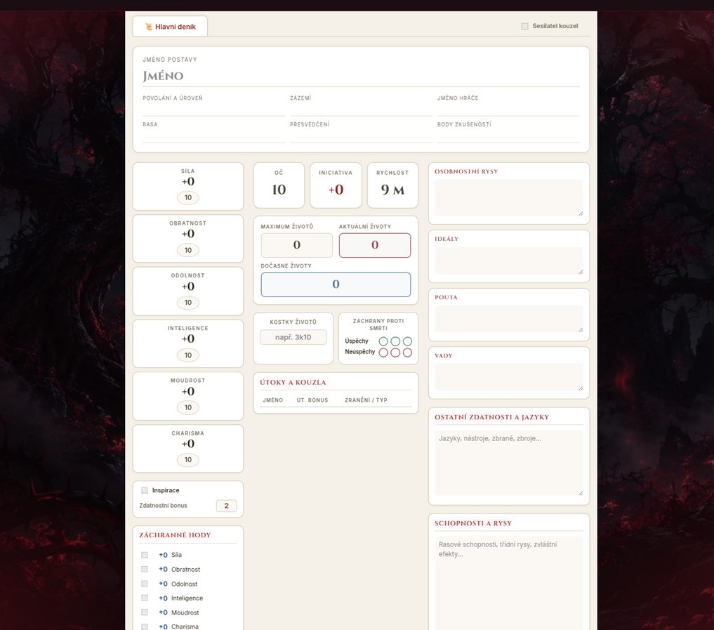
Dungeons & Dragons 5e — známá karta dobrodruha.
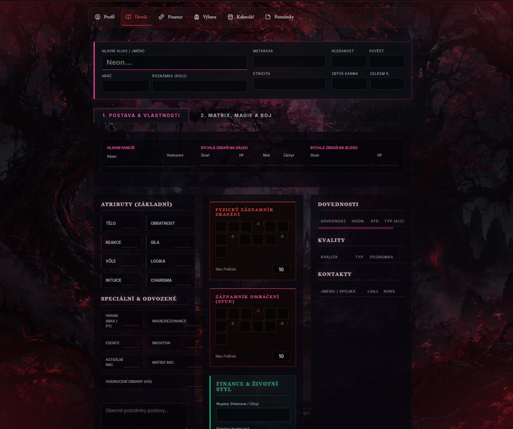
Shadowrun — kyberpunkové statistiky a výbava.
List na míru systému
Každý systém má vlastní vizuální podobu listiny s těmi správnými poli, atributy a dovednostmi. Vypravěč nemusí nic stavět — stačí zvolit systém světa a všem hráčům se objeví ta správná karta.
Vlastní úpravy
U světů s vlastním systémem si vypravěč navrhne strukturu listu sám. A jednotlivá postava může mít i osobní úpravu schématu nad rámec světového — třeba speciální stav pro unikátní bytost.
5. Bestiář — knihovna tvorů, kterou si neseš s sebou
Katalog tvorů a nepřátel se statistikami podle herního systému. Bestiář je rozdělený do tří úrovní dosahu, takže si vypravěči mohou své tvory sdílet a opakovaně používat — jednou vytvořeného draka pak vyvoláš do libovolného svého světa.
Moje bestie
Osobní bestie uživatele, které si neseš napříč všemi svými světy (váží se jen na systém). Tvoje soukromá knihovna příšer — jednou vytvořeno, navždy po ruce.
Bestie tohoto světa
Tvorové patřící konkrétnímu světu; spravuje je vedení světa (Pomocný PJ a výše). Sdílený zvířetník celé kampaně.
Systémové bestie
Globální katalog tvorů pro daný herní systém, dostupný všem ke čtení. Vytváří ho jen správa platformy — připravený základ, ze kterého čerpáš.
Práce s bestiářem
Správa katalogu tvorů a jejich sdílení.
Co získáš: jednou připravené nepřátele, které vytáhneš kdykoli a kamkoli, místo přepisování statistik z příručky před každým bojem. Tvorba jednou, použití donekonečna.
Jak to funguje: procházej seznam ve třech úrovních, otevírej detail, vytvářej, upravuj, mazej do koše a obnovuj z koše. Klonuj bestii z libovolné úrovně do své osobní nebo světové knihovny (přenese statistiky, schopnosti i obrázek). Bestii dáš i vlastní obrázek s výřezem, který se použije i na žetonu na taktické mapě. Změny se ostatním propíší v reálném čase.
Pro koho: číst může každý člen (a systémové bestie i veřejně); bestie světa spravuje vedení (Pomocný PJ a výše), osobní bestie jejich vlastník, systémové jen správa platformy.
Bestie na taktické mapě = nezávislá kopie
Když vypravěč „vyvolá" bestii na taktickou mapu, vznikne z ní nezávislá instance — vlastní žeton s vlastními body života a kopií statistik. Pozdější úprava bestie v katalogu už tuhle konkrétní instanci na mapě neovlivní. Z jednoho katalogového „vlka" tak rozmístíš celou smečku, kde každý vlk žije svým vlastním životem a zraňuje se zvlášť.
6. Obchod — peníze a věci, které spolu drží
Plnohodnotný herní obchod napojený přímo na peníze a výbavu postav. Nákup automaticky odečte peníze z účtu postavy a přidá předmět do její výbavy — žádné ruční účtování, žádné „kolik mi to vlastně zbylo".
Katalog a nákup v obchodě
Zboží, slevy, měny a nakupování pro postavy.
Co získáš: nakupování, které prostě sedí — klikneš na meč, peníze ubudou, meč je v batohu. Vypravěč si vede výkladní skříň světa s cenami a slevami; hráč nakupuje, jako by byl v krámě.
Jak to funguje: spravuj položky (název, cena, měna, sleva, skupina a podskupina, doporučení, odkaz, sdílení mezi světy), členěné do dvou úrovní skupin s vlastními slevami. Nakupuj zboží v množství s přepočtem do měny účtu a kontrolou dostatku peněz. Nákup lze stornovat (vrátí peníze a odebere předmět) a procházet historii nákupů.
Pro koho: nakupovat může každý hráč pro svou postavu; vedení i pro libovolnou postavu („Nakupuji pro"). Spravovat katalog smí Pomocný PJ a výše.
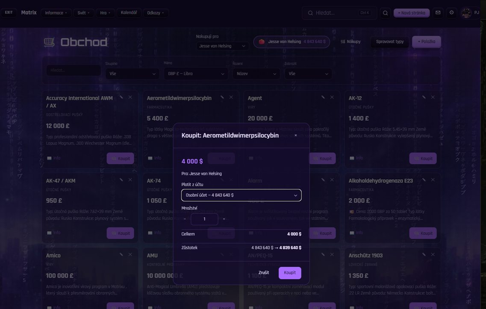
Obchod — katalog zboží se skupinami, slevami, výběrem postavy pro nákup a zůstatkem účtu.
Peníze se nikdy neztratí
Slevy se nesčítají — platí ta nejkonkrétnější (položka před podskupinou před skupinou). A samotný nákup probíhá ve třech provázaných krocích (přidat do výbavy, odečíst peníze, zapsat do historie) tak, aby se za žádných okolností nemohly ztratit peníze ani předmět, i kdyby výpadek přišel uprostřed. Nakupovat lze pro hráčské postavy, které mají výbavu i účet.
7. Měny a převodník — žádné počítání na papíře
Převodník měn a měny světa
Definice měn světa a kalkulačka přepočtu.
Co získáš: jistotu, kolik je 12 zlaťáků ve stříbrňácích — přepočítá to za tebe. Vypravěč nastaví ekonomiku světa jednou, hráči pak jen převádějí.
Jak to funguje: spravuj seznam měn (kód, název, symbol, kurz vztažený k základní měně), nastav základní měnu a přepočítávej částky mezi měnami kalkulačkou. Tytéž měny pohánějí i obchod a finanční účty postav.
Pro koho: převodník používá každý člen. Upravit kurz, název nebo symbol existující měny smí Pomocný PJ a výše; přidat nebo smazat měnu může jen vypravěč.
Ekonomika se nastaví sama podle žánru
Měny se zakládají automaticky při vzniku světa podle jeho žánru — fantasy dostane Zlaťák, Stříbrňák a Měďák; kyberpunk Kredit a dolar; vesmír Kredit a Krystal; postapokalypsa Zátku a Příděl. Vypravěč tedy nezačíná na prázdné stránce — má funkční ekonomiku od první minuty a může ji jen doladit.
8. Finanční účty postav — banka, kterou nečekáš
Nad rámec jednoduché měsíční bilance má každá postava i plnohodnotné bankovní účty, které pohánějí finance i nákupy. Jsou propracovanější, než byste u herní platformy čekali — zvládnou i sdílené pokladny družiny nebo převody mezi postavami.
Více účtů a měn
Postava může mít více účtů, každý ve své měně. Měnu účtu lze změnit s přepočtem kurzem, nebo jen přeznačit.
Sdílení a převody
Účet může mít spoluvlastníky (nastaví vypravěč) — ideální pro společnou pokladnu družiny. Hlavní vlastnictví lze předat a mezi účty převádět peníze.
Pohyby a krok zpět
Vklady a výběry, vrácení poslední operace, „přičíst měsíční bilanci" a vedení transakcí s herním datem.
Kdo spravuje
Vedení může spravovat účty vždy; hráč-vlastník jen tehdy, pokud mu to vypravěč povolí přepínačem — záleží jen na stylu hry.
3
druhy bytostí: PC, NPC, bestie
13
herních systémů s vlastní listinou
5
herních záložek hráčské postavy
3
úrovně dosahu bestiáře
Část II — Co umíme
Komunikace světa: chat, hraní za postavu a novinky
Příběh se odehrává ve slovech — a tady je píšeš ty. Každý herní svět má vlastní komunikační centrum: chat rozdělený do tematických kanálů a konverzací, ve kterém hráči i vypravěč píší příběh, a nástěnku novinek, kde vedení oznamuje, co se ve světě děje. Tohle není „jen pokec". Je to páteř dlouhého, vyprávěného hraní na hrdiny (TTRPG), které běží týdny i roky — píšeš za svou postavu, vypravěč za svět a jeho bytosti, a celá historie zůstává uložená a čitelná zpětně. Hraješ, i když právě nesedíte spolu u stolu.
Co ti to dává: hraj, i když nemáš čas na společný večer
U klasického hraní u stolu zmizí řečené slovo ve vzduchu a musíte se sejít všichni naráz. V Projektu Ikaros zůstává každá replika zapsaná, vyhledatelná a vázaná na konkrétní postavu. Můžeš odepsat ráno před prací, vypravěč ti večer rozehraje tajnou scénu jen pro tvou postavu, a vedlejší příběhová linka běží paralelně v samostatné konverzaci. Hra plyne asynchronně — každý přispívá, když má čas. To je rozdíl mezi „hrajeme, když se všichni sejdeme" a „hrajeme pořád".
Jak chat vypadá
Chat každého světa najdeš na vlastní stránce. Skládá se ze tří částí, které do sebe zapadají: postranní seznam s kanály a konverzacemi, okno otevřené konverzace uprostřed, kde se reálně píše příběh, a panel přítomných (kdo je právě online), který je po ruce vedení světa.
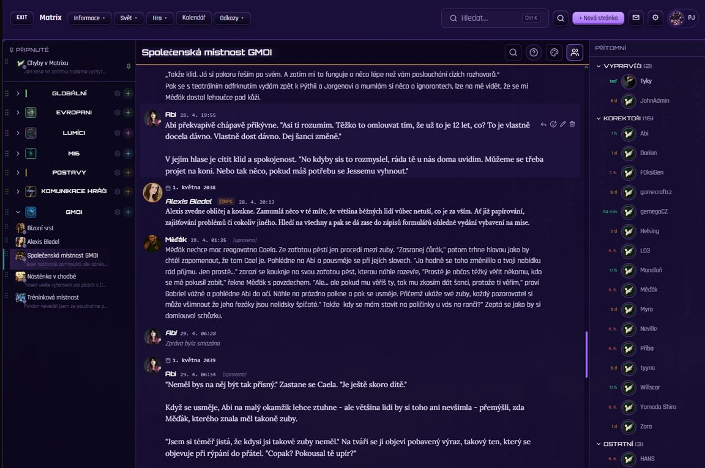
Chat světa: vlevo seznam kanálů a konverzací, uprostřed okno s probíhajícím příběhem (hráči píší za své postavy s vlastními portréty), vpravo přehled přítomných.
Pro srozumitelnost rozlišujeme dva pojmy, které platforma používá důsledně:
Kanál
Rozbalovací složka v postranním seznamu. Sdružuje více konverzací k jednomu tématu — třeba „Globální", „Postavy" nebo kanál konkrétní družiny. Kanál je organizační přihrádka.
Konverzace
Samotné vlákno zpráv uvnitř kanálu. Tady se reálně píše. Jeden kanál může obsahovat víc konverzací (hlavní příběh, vedlejší linka, zákulisí).
Svět je hned připravený — nic nezakládáš ručně
Při založení světa (a kdykoli později při prvním otevření chatu) se sama připraví výchozí struktura, takže můžeš rovnou hrát:
Kanál „Globální" s konverzací pro všechny — společné fórum světa, kam mají přístup všichni hráči.
Kanál „Postavy" — zatím prázdný, ale plní se sám (viz níže), jak se hráčům přidělují postavy.
Kanál každé družiny — má-li svět rozdělené hráče do skupin, vznikne pro každou družinu uzavřený kanál jen pro její členy a pro vedení světa.
Toto vytváření je chytré — spustí se i u starších světů, které ještě strukturu neměly, a nikdy nevytvoří duplicity.
Vypravěč si chat skládá podle příběhu
Vedení světa si chat staví podle potřeb kampaně. Všechny správní úkony jsou vyhrazené vedení, takže struktura zůstává přehledná.
Správa struktury chatu
Vedení staví, přejmenovává a uklízí kanály i konverzace tak, jak se vyvíjí kampaň.
Co získáš: chat ušitý na míru příběhu — samostatné vlákno pro každou dějovou linku, soukromý kanál pro tajné jednání, oddělené zákulisí pro plánování. Žádný chaos jednoho velkého proudu zpráv.
Jak to funguje: vytvoř kanál, přejmenuj ho, smaž. Vytvoř konverzaci, uprav ji, smaž a přesuň do jiného kanálu (v rámci stejného světa). Změň pořadí kanálů i konverzací hromadně přetažením. Smazání konverzace zprávy nezahodí natvrdo — schová je (lze obnovit).
Pro koho: pomocný vypravěč a vypravěč světa (a platformový správce). Běžný hráč ani čtenář strukturu nemění.
Kdo do které konverzace vidí — řízení napětí
Každá konverzace má nastavený režim přístupu, takže vypravěč přesně řídí, kdo co čte a kde smí psát — a může budovat tajemství přímo v chatu:
Režim
Kdo vidí a píše
Pro všechny
Všichni hráči světa. Čtenáři a žadatelé o vstup ji nevidí.
Pro vybrané
Jen konkrétně vyjmenovaní členové (například soukromá konverzace dvou postav).
Podle role
Jen členové s určitou rolí ve světě.
Žadatel, který teprve čeká na schválení vstupu, nevidí žádnou konverzaci. Vedení světa má naopak nadhled: pomocný vypravěč i vypravěč vidí a smí psát i do soukromých konverzací „pro vybrané", i když mezi vyjmenovanými nejsou — aby mohli moderovat a tlačit příběh dál.
Šepoty — soukromá zpráva přímo uprostřed scény
Uvnitř konverzace pošleš zprávu viditelnou jen vybraným adresátům — šepot. Ostatní účastníci ji nevidí. Dvě postavy si tak mohou něco tajně domluvit přímo v probíhající scéně, aniž by to ostatní u „stolu" slyšeli. Vedení světa ovšem vidí všechny šepoty, aby mělo úplný obraz dění a mohlo zasáhnout.
Kanál „Postavy" — tvoje osobní linka k vypravěči
Tohle je jedna z nejelegantnějších vychytávek pro příběhové hraní. Jakmile ti vypravěč přidělí postavu, automaticky ti v kanálu „Postavy" vznikne vlastní soukromá konverzace. Je vázaná na tebe jako hráče (ne na konkrétní postavu), takže přežije i výměnu postavy — jen se přejmenuje na nové jméno.
Osobní konverzace postavy
Soukromý kanál mezi jedním hráčem a vedením světa — pro tajné instrukce, osobní příběhové momenty nebo otázky mimo společný kanál.
Co získáš: přímou linku k vypravěči, kde se odehraje to, co je jen tvoje — tajné poslání, vnitřní hlas postavy, scéna, kterou ostatní nemají vidět. Bez zakládání, bez domlouvání kanálu.
Jak to funguje: konverzace ti vznikne sama při přidělení postavy. Píšeš si napřímo s vypravěčem stranou od ostatních; vypravěč sem může posílat soukromé scény určené jen tobě.
Pro koho: daný hráč (vlastník) a vedení světa. Nikdo jiný do ní nevidí. Ikonou konverzace je přímo portrét tvé postavy — vždy její aktuální obrázek, takže je na první pohled poznat.
Hraní za postavu: kdo zprávu „říká"
V příběhovém hraní je klíčové, kdo mluví. Platforma proto nahrazuje běžné přihlašovací jméno hráčskou identitou ve světě — píšeš jako svá postava, ne jako uživatelský účet.
Portrét postavy jako tvář v chatu
V chatu vystupuješ pod jménem a portrétem své přiřazené postavy ve světě — ne pod svým účtem. Tentýž portrét se objeví i v hlavičce světa. Jedna postava, jedna tvář, konzistentně všude. Ostatní hráči tě v ději vnímají jako tvého hrdinu.
Persona vypravěče (vedení → „PJ")
Vedení světa (vypravěč a jeho pomocníci) nevystupuje pod osobním jménem, ale pod personou „PJ" (Pán jeskyně / vypravěč). Jak přesně, určuje nastavení světa:
Sjednocená persona
Celé vedení vystupuje jako jedno anonymní „PJ" s jedním společným avatarem. Hráči nepoznají, který konkrétní člověk za vypravěčem zrovna píše — udržuje to tajemno a jednotný hlas vypravěče. Persona může mít vlastní jméno (jinak prostě „PJ").
Individuální persona
Každý člen vedení vystupuje pod svou rolí („PJ" / „Pomocný PJ") a vlastním avatarem. Hráč pozná, kdo z vypravěčského týmu mu píše — vhodné, když má svět víc spoluvypravěčů.
Klíčové: persona platí i zpětně
Persona se aplikuje při zobrazení podle aktuální role pisatele. Promítne se tedy i do historických zpráv a je živá — když někdo dostane vyšší roli, jeho staré zprávy se začnou zobrazovat pod personou. Vypravěč také může psát „za bytost" (NPC) — tehdy vyhraje jméno a tvář té bytosti, takže rozehraje cizí postavu, kterou hráči potkávají. Pro hráče to znamená, že vypravěč může věrohodně mluvit za krále i za žebráka, aniž by je zmátl, kdo to opravdu píše.
Kde se persony nastavují
Vše se ovládá v nastavení světa v sekci „PJ v chatu": přepínač režimu a společná persona patří vypravěči; vlastní „obrázek vedení" si nastaví každý člen vedení sám pro sebe.
Chat si přizpůsobíš jen pro sebe
Každý hráč si chat upraví, aniž by tím ovlivnil ostatní. Tato nastavení jsou osobní a putují s tebou napříč zařízeními (počítač, mobil):
Vlastní pořadí kanálů a konverzací v seznamu.
Sbalení kanálů, které zrovna nepotřebuješ.
Připnutí oblíbených konverzací a jejich pořadí.
Zapamatování poslední otevřené konverzace — když se přihlásíš z jiného zařízení, navážeš tam, kde jsi skončil.
Vzhled vlastních zpráv — barva, font a velikost písma, zvlášť pro každý svět.
Co chat umí při psaní zpráv
Práce se zprávami
Plnohodnotné psaní příběhu i běžná komunikace na jednom místě.
Co získáš: nástroj, který zvládne vážnou scénu i odlehčený vtip — formátování, reakce, zmínky i vlastní emoty světa. Komunikace, kterou znáš z moderních aplikací, jen vyladěná pro vyprávění příběhu.
Jak to funguje: odešli zprávu, uprav ji, smaž (vedení může mazat natvrdo). Reaguj emoji reakcí. Použij zmínky — oslov konkrétního uživatele (@jméno), všechny (@all), právě přítomné (@here) i konkrétní postavu (@jméno-postavy). Přidej přílohu (soubor až 10 MB). Vyhledávej v historii zpráv světa. Vkládej vlastní emoty světa i globální emoty platformy.
Pro koho: každý člen s přístupem do dané konverzace; vedení navíc moderuje a může psát „v režimu NPC" — pod jménem a tváří libovolné bytosti.
Vše živě a v reálném čase
Chat běží přes trvalé spojení, takže nové zprávy, úpravy, mazání, reakce, indikace „píše…", informace „kdo je online" i přehrávané zvuky naskakují okamžitě bez obnovování stránky. Mění-li vedení strukturu kanálů, ostatním se to ihned aktualizuje. Scéna plyne jako živý rozhovor.
Notifikace až do mobilu — neuteče ti tah
Když přijde nová zpráva, dorazí push notifikace i na telefon (i napříč různými světy). Po klepnutí se otevře přímo ta správná konverzace a uloží se jako naposledy aktivní — skočíš rovnou do děje. Příběh tě tak najde, ať jsi kdekoli.
Souhrn chatů napříč světy
Hraješ ve více světech? Nemusíš obcházet každý zvlášť. Platforma sbírá zprávy ze všech tvých světů do jednoho souhrnu — vždy jen z konverzací, do kterých skutečně máš přístup. Jedno místo, kde vidíš, kde se zrovna něco děje.
Novinky světa — výkladní skříň i interní oznámení
Vedle chatu má každý svět nástěnku novinek — krátká oficiální oznámení, kterými vypravěč informuje hráče: co se chystá, co se změnilo, na co nezapomenout. Novinky se zobrazují jako karty (stránkované) a klíčové z nich se objeví i na úvodní stránce světa, takže je hráč vidí hned po vstupu.
Publikování novinek
Oznamovací kanál vedení směrem k hráčům i veřejnosti.
Co získáš: jistotu, že hráči vědí, co je nového — a zároveň lákavou veřejnou výkladní skříň světa pro kolemjdoucí, kteří teprve zvažují vstup. Jedna funkce, dvojí užitek.
Jak to funguje: vytvoř novinku s titulkem, textem, datem a typem (informace / upozornění / systémové). Přidej odkaz (na web nebo na stránku ve světě) a velký obrázek (s výřezem, přiblížením a způsobem oříznutí). Uveď i fantasy datum z herního kalendáře. Novinku lze archivovat a zase obnovit. Tři typy se liší barvou a ikonou.
Pro koho: psát, upravovat, archivovat a mazat může vedení světa (pomocný vypravěč a výš) a platformový správce. Číst aktivní novinky může kdokoli — i nepřihlášený návštěvník. Archiv vidí jen vedení.
Kde se novinky objeví
Na vlastní stránce novinek světa (aktivní novinky pro všechny, archiv pro vedení).
V samostatném sloupci na úvodní stránce světa, takže hráč hned po vstupu vidí, co je nového.
Novinky se aktualizují živě — jakmile vedení něco zveřejní, hráčům se nástěnka i widget na úvodní stránce obnoví samy.
3
typy novinek (info / upozornění / systém)
10 MB
limit přílohy v chatu
2
režimy persony vypravěče
∞
historie příběhu uložená a vyhledatelná
Část II — Co umíme
Mapy & nástroje hry: vesmír, atlas, bojiště a zvuky
Tohle je vlajková kapitola. Když si představíš hraní na hrdiny u stolu — figurky na podložce, mapa rozbalená přes půl stolu, vypravěč, který odhaluje jen kus jeskyně — pak právě tohle ti Projekt Ikaros přinese na obrazovku, ať sedíš v jednom pokoji nebo na opačných koncích republiky. A nedostaneš jen jednu mapu. Dostaneš tři, každou pro jiný účel: vesmírnou mapu jako živý graf vztahů ve světě, obrázkový atlas jako galerii ručně nakreslených map, a hlavně taktickou bojovou mapu — plnohodnotný virtuální herní stůl s figurkami, mlhou války a sledováním iniciativy v reálném čase. K tomu zvuková databáze pro atmosféru a soukromý deník vypravěče. To všechno bez instalace, jen v prohlížeči.
Tři mapy, ať se v nich neztratíš
Vesmírná mapa = mapa vztahů ve světě (planety, soustavy, lokace a jejich propojení) zobrazená jako pohyblivý graf. Atlas map = galerie statických obrázkových map seřazených do složek. Taktická bojová mapa = interaktivní herní plátno s figurkami, na kterém se hraje boj a scény. Každá slouží něčemu jinému — a používáš je podle toho, co zrovna potřebuješ: zorientovat se, ukázat mapu, nebo hrát.
Do všech tří se dostane jen člen světa — nezvanému návštěvníkovi se neukážou vůbec. Tvůj připravovaný obsah tak zůstává tvůj, dokud ho sám nesdílíš.
Taktická bojová mapa — srdce hraní u virtuálního stolu
Začněme tím nejdůležitějším. Taktická mapa je nejkomplexnější nástroj celé platformy a přímý protějšek placených „virtuálních stolů" pro hraní na hrdiny. Je to interaktivní plátno s hexagonovou mřížkou, na kterém rozmísťuješ figurky postav a nestvůr, kreslíš mlhu války, řídíš souboj a hraješ scénu v reálném čase. Všichni u stolu vidí totéž ve stejný okamžik — když vypravěč pohne nepřítelem, hráči to uvidí okamžitě, bez obnovování stránky.
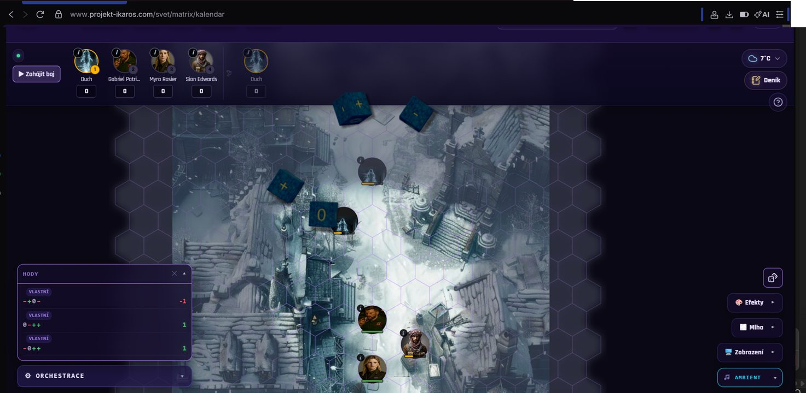
Taktická bojová mapa: hexagonová mřížka s figurkami postav a nestvůr, mlha války, nahoře iniciativní lišta s pořadím soubojového kola. Celé bojiště běží živě v prohlížeči.
Proč to chceš
Odpadá pořizování a vožení figurek, kreslení map na čtverečky, ruční počítání iniciativy na papírku i dohadování „kdo kde stojí". Vypravěč připraví scénu dopředu, na sezení ji jedním kliknutím spustí, a hráči se připojí odkudkoli. Vzdálená hra vypadá a hraje se stejně dobře jako u stolu — a místní hra dostane nástroje, které u stolu nikdy neměla (chytrá mlha, automatická iniciativa, krok zpět).
Figurky (tokeny): postava, nestvůra, bestie
Na mapě se pohybují tři druhy figurek a platforma mezi nimi důsledně rozlišuje — proto se nikdy nestane, že hráč omylem pohne nepřítelem nebo uvidí, co nemá.
Hráčská postava
Figurka, kterou ovládáš jako hráč. Hýbeš jen svou vlastní. V boji je vždy — nemůžeš na ni „zapomenout".
Nestvůra (NPC)
Postava řízená vypravěčem — spojenec, padouch, vedlejší role. Má vlastní deník a příběh.
Bestie
Tvor z bestiáře (příšery, zvířata, vojáci). Vypravěč jich může nasadit víc najednou (např. pět banditů za sebou). Každá nasazená bestie je samostatná, nezávislá instance — zranění jedné neovlivní ostatní.
Nasazování a pohyb figurek myš i dotyk
Přesné rozmístění a tahy na mřížce, intuitivně myší i prstem.
Co získáš: figurky stojí přesně tam, kam chceš, a hra plyne bez zdržování. Žádné „posuň to o kousek vedle" ani figurka, která sama skočí do rohu.
Jak to funguje: figurku nasadíš přetažením z palety na plátno, nebo „režimem umístění" (klik v paletě → klik na políčko). Objeví se přesně tam, kam míříš — když je políčko obsazené, najde se nejbližší volné v okolí. Pohybuješ jí přetažením nebo systémem „vyber a klepni na cílové políčko".
Pro koho: vypravěč hýbe libovolnou figurkou; hráč jen svou postavou. Každá figurka má statistiku dosahu pohybu (jak daleko se v jednom tahu dostane). Vypravěč může figurku zamknout — pak s ní hráč nehne ani jí nezmění životy.
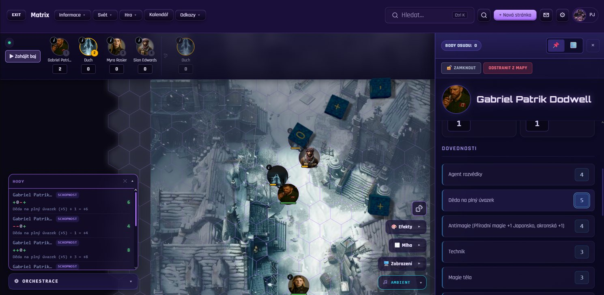
Vypravěčské nástroje na taktické mapě: paleta mlhy a štětce, efekty, ovládání iniciativy.
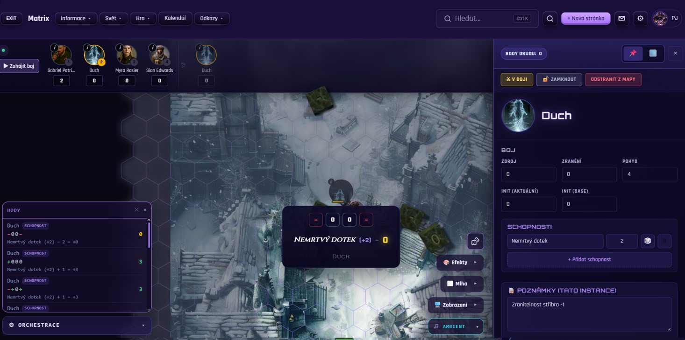
Karta figurky a panel scén přiřazených hráčům — vše v jednom rozhraní bojiště.
Karta figurky (info panel) přizpůsobí se systému
Klepnutím na figurku se otevře boční panel s jejími informacemi. Lze ho mít ukotvený vpravo, volně přesouvatelný nebo vystředěný (na mobilu se vystředí automaticky, aby ses na malém displeji neproklikával). Obsah panelu se přizpůsobuje typu figurky i hernímu systému světa — každý systém (D&D, Dračí doupě, Call of Cthulhu, Fate, GURPS a další) má vlastní bojový list s tím, co je pro něj důležité. Přímo z panelu jsou po ruce deník a poznámky postavy, takže nemusíš nikam odbíhat.
V hlavičce panelu má vypravěč rychlé akce: zařadit figurku „do boje" nebo „mimo boj" (u nestvůr a bestií — postavy jsou v boji vždy), zamknout/odemknout a odebrat figurku z mapy (postava v databázi přitom zůstane, mizí jen z plátna).
Životy (HP) přímo na mapě
Pod každou figurkou je proužek životů, jehož barva napovídá stav (zdravý / raněný / kritický) — na první pohled vidíš, kdo je v úzkých. Jako hráč smíš upravovat jen životy a zranění své vlastní (a nezamčené) figurky, takže si nikdo „nepřičaruje" zdraví cizí postavě. Vypravěč může proužky životů pro danou scénu skrýt nebo zobrazit — třeba aby hráči nevěděli, kolik vydrží tajemný protivník, a souboj měl napětí.
Mlha války chytrá
Zahalená mapa, kterou hráči odkrývají postupně, jak postupují dál.
Co získáš: objevování jeskyně, hradu nebo lesa se napětím — hráči vidí jen tam, kam došli, a každý další krok odhaluje nové. Žádné nakukování dopředu.
Jak to funguje: mlhu pro scénu zapneš/vypneš, políčka odkrýváš a zahaluješ štětcem (s nastavitelnou velikostí), jedním tlačítkem zahalíš vše a začneš znovu. Mlha je „chytrá" — kromě ručně odhalených políček vidí hráč vždy i okolí svých postav.
Pro koho: ovládá ji výhradně vypravěč; hráči vidí jen odhalené části. Nestvůry skryté v mlze hráč nevidí; vypravěč vidí vše.
Efekty na mapě
Vypravěč může kreslit vizuální efekty: obarvit políčko (vyznačit jed, oheň, území), vyznačit explozi soustřednými kruhy, nakreslit bariéru (kruh nebo tah štětcem). Mazání je přesné — klik na políčko smaže efekty, které ho pokrývají; je tu i tlačítko „smazat vše". Díky tomu jasně ukážeš, kde hoří země nebo kam dosáhne kouzlo, aniž bys to musel popisovat slovy.
Sledování iniciativy a soubojové kolo živé řazení
Pořadí postav v souboji vždy aktuální — žádné papírové seznamy, žádné přepisování.
Co získáš: souboj plyne. Vždy je jasné, kdo je na tahu, a pořadí se samo srovná, když se něco změní. Konec škrtání a přepisování jmen na papírku.
Jak to funguje: zahájíš boj, posouváš tahy mezi bojovníky, ukončíš boj. Lišta nahoře ukazuje pořadí a řadí se živě podle hodnoty iniciativy — když se hodnota změní, pořadí se hned přerovná. Sledují se i efekty trvající do konce tahu a počítadlo kol.
Pro koho: souboj řídí vypravěč; pořadí vidí všichni. Hráčské postavy jsou v boji vždy; nestvůry a bestie se přidávají a odebírají tlačítkem. Klepnutí na bojovníka v liště k němu posune mapu a vybere ho; vypravěč ho navíc může na chvíli „nasvítit" všem.
Vrácení akcí — když uděláš chybu, neztratíš večer
Veškeré změny scény se dějí přes jednotný systém, který si u každé akce počítá, jak ji vzít zpět. Omylem smazaná figurka, špatně tažený efekt — vypravěč to vrátí. Systém zároveň zvládá výpadky spojení: po obnovení připojení se chybějící změny dopočítají, takže když ti vypadne wi-fi, po návratu vidíš stejnou, aktuální scénu jako ostatní — nemusíš nic obnovovat ani se ptát „co jsem zmeškal".
Scény přiřazené jednotlivým hráčům
Více scén najednou — vypravěč jako dirigent, který hráče přepíná mezi situacemi.
Co získáš: rozdělíš družinu, aniž bys přišel o přehled. Jedna polovina řeší souboj, druhá vyjednává v jiné scéně — každý vidí jen svou, ty vidíš všechno.
Jak to funguje: hráče na scény přiřazuješ a přesouváš. Při přesunu hráče na jinou scénu jeho figurka z původní scény sama zmizí. Hráč svou novou scénu dostane rovnou na obrazovku, aniž by cokoli hledal.
Pro koho: dirigování je věc vypravěče. Pojistka soukromí: hráč nahlédne jen do scény, která mu patří — cizí scény jsou pro něj nedostupné, takže se nepřipraví o překvapení.
Knihovna map (šablony scén) napříč světy
Připravené mapy k opakovanému použití — připrav jednou, použij kdykoli.
Co získáš: oblíbenou hospodu, kobku nebo bitevní pole připravíš jednou a vytáhneš znovu za pár vteřin — i v úplně jiném světě. Příprava na sezení se zkrátí z hodin na minuty.
Jak to funguje: aktuální scénu uložíš jako šablonu a později ji načteš na novou scénu. Šablona si pamatuje obrázek pozadí, nastavení mřížky, mlhu, efekty i nasazené nestvůry.
Pro koho: knihovna je soukromá pro každého vypravěče. Šablona neukládá hráčské postavy (kvůli soukromí), jen prostředí a vypravěčské figurky.
Počasí přímo na mapě
Vypravěč může nad plátno zapnout vizuální atmosféru počasí (déšť, sníh a další) — překryv přes celé plátno plus malý panel v rohu. Hráči ho vidí a mohou si efekty lokálně přepnout. Počasí přitéká ze samostatného generátoru počasí (viz kapitola Čas & příběh), takže ladí s ročním obdobím a regionem světa — a doručuje se bezpečně, aniž by prozradilo cokoli skrytého.
Kostky na mapě
Přímo na mapě házíš 3D kostky (sdílí jádro s kostkami v chatu) a vidíš log posledních hodů. Platforma hlídá, aby nikdo neházel cizím jménem ani za cizí figurku — hody jsou důvěryhodné. Viditelnost hodů se řídí nastavením světa (skryté vypravěčské hody nebo veřejné hody pro všechny), takže si vypravěč může nechat svá čísla pro sebe.
Atmosférické zvuky na mapě
Vypravěč spustí hudbu a zvukové kulisy přímo do scény — hráči je uslyší. Praskání ohně v hospodě, vítr na pláni, zvuk bitvy. Zvuky se berou ze zvukové databáze světa (viz níže) a vtáhnou hráče do děje líp než jakýkoli popis.
Pingy a nasvícení
Dvojím klepnutím kamkoli na plátno udělá kdokoli (vypravěč i hráč) „ping" — krátké zvýraznění místa, které vidí všichni. Funguje spolehlivě i na dotyku. Vypravěč navíc umí „nasvítit" konkrétního bojovníka z iniciativní lišty. Identita pingu je herní: vypravěč jako „PJ", hráč jménem postavy — nikdy účtem, takže se nenaruší ponoření do hry.
Přizpůsobení hernímu systému
Herní systém světa určuje vzhled bojových listů, deníkových karet i statistik figurek pro všechny hráče naráz. Hraješ-li Dračí doupě, vidíš listy Dračího doupěte; přepneš svět na D&D, přepne se celá mapa. Podporováno je 13+ herních systémů, takže si nemusíš ohýbat platformu na svou hru — platforma se ohne na tebe.
Skrytí a zamčení scény
Scénu lze schovat (hráč uvidí jen nápis „Scéna není připravena") nebo zamknout (hráč s ní nehne) — a to buď celkově, nebo jednotlivě pro konkrétního hráče. Vypravěč scénu vidí vždy. Takhle si připravíš příští souboj, zatímco se ještě hraje ten současný, a hráči nic nezahlédnou.
3
typy figurek (postava / nestvůra / bestie)
6
vykreslovacích vrstev plátna
13+
podporovaných herních systémů
∞
paralelně běžících scén
Vesmírná mapa — orientace ve světě jediným pohledem
Velké světy bývají spletité: planety, soustavy, města, frakce a jejich propojení. Vesmírná mapa to ukáže jako pohyblivý graf — uzly (planety, hvězdné soustavy, lokace) a vazby mezi nimi. Rozprostře se sama (uzly se rozmístí silovým rozložením) a dá se v ní pohybovat, přibližovat a hledat. Místo dlouhého textu „kdo s kým souvisí" to vidíš na jeden pohled.
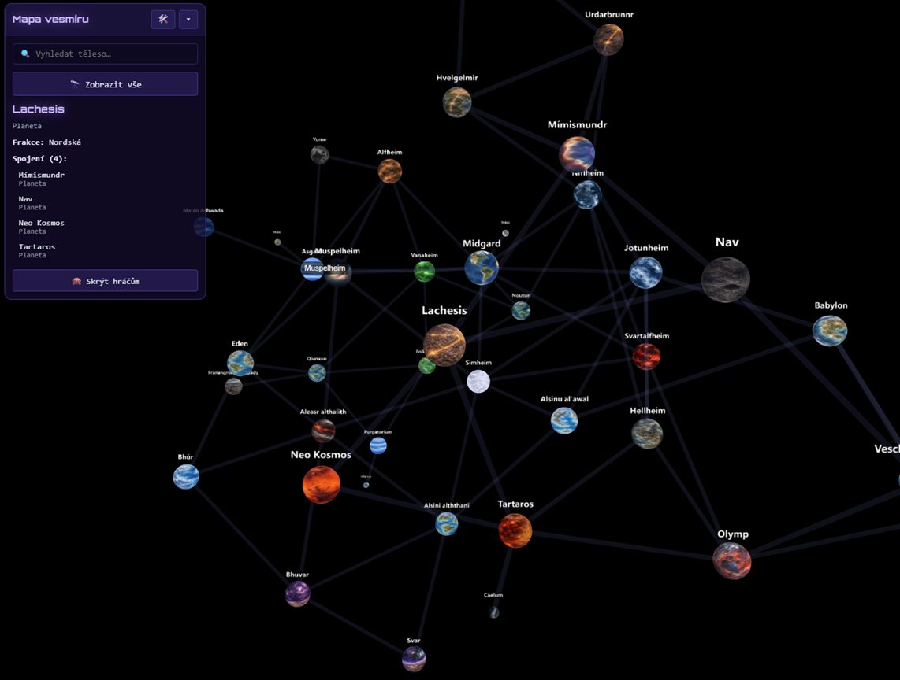
Vesmírná mapa: svět jako živý graf planet, soustav a lokací s vazbami mezi nimi. Uzel vyhledáš a kamera k němu „doletí".
Procházení a editace vesmíru
Mapa propojení míst ve světě — kdo s kým a co s čím souvisí.
Co získáš: okamžitou orientaci v rozsáhlém světě a snadný způsob, jak hráčům ukázat strukturu vesmíru, aniž bys ji vypisoval do tabulek.
Jak to funguje: procházíš graf, vyhledáš uzel a kamerou k němu „doletíš", otevřeš jeho detail. V režimu úprav přidáš či upravíš uzel a vazbu mezi uzly, nastavíš viditelnost uzlu a uložíš.
Pro koho: prohlížet může každý člen (s ohledem na viditelnost uzlů — co nemáš vidět, neuvidíš); upravovat vypravěč. Mapa se aktualizuje živě a úpravy probíhají nad pracovní kopií, takže rozpracovaná změna nemizí.
Obrázkový atlas „Mapy" — galerie nakreslených map
Ne všechno je bojiště. Mapa kontinentu, plán města, půdorys hradu, ručně malovaná krajina — to jsou statické obrázky, které chceš mít po ruce a hezky uspořádané. Atlas je galerie těchto map, organizovaná do stromu složek, takže si i u rozsáhlého světa udržíš pořádek.
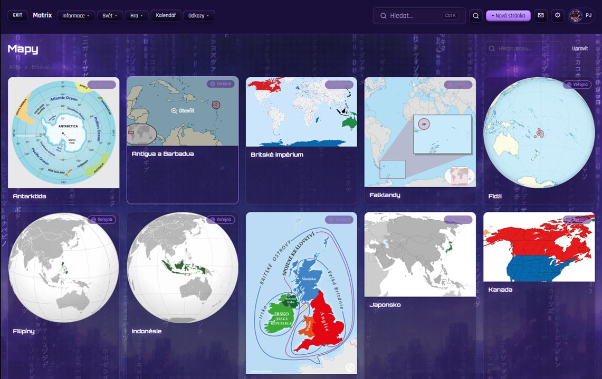
Atlas map: galerie nakreslených map ve složkách. Klik otevře mapu ve zvětšeném prohlížeči, hledání projde celý atlas.
Správa atlasu
Knihovna vizuálních podkladů světa, přehledně ve složkách.
Co získáš: všechny mapy světa na jednom místě, uspořádané a vyhledatelné — místo hledání v cizích diskových složkách nebo přílohách chatu.
Jak to funguje: vytvoříš mapu s titulkem, popisem, obrázkem a nastavením viditelnosti. Vytváříš a vnořuješ složky. Procházíš atlas přes drobečkovou navigaci a hledáš napříč celým atlasem podle názvu i popisu. Mapu otevřeš ve zvětšeném prohlížeči (lightbox).
Pro koho: spravovat může vypravěč světa a platformový správce; prohlížet každý člen — ale jen to, co je pro něj viditelné. Smazání složky nesmaže její obsah (mapy a podsložky se posunou o úroveň výš), mazání mapy uklidí i její obrázek z úložiště.
Viditelnost, která neprozradí tajemství
Každá mapa i složka má řízenou viditelnost — buď veřejná pro hráče, nebo jen pro vybrané. Pojistka: hráč mapu uvidí, jen když je viditelná ona i celá cesta složek k ní. Skrytá nadřazená složka skryje vše uvnitř. Hráči se navíc nikdy nedozví, komu je co viditelné — vidí jen to, co smí. Můžeš tak připravit celý atlas dopředu, aniž by hráči objevili mapy, které mají potkat až za tři sezení.
Zvuková databáze „Zvuky" — atmosféra na jedno kliknutí
Zvuk dělá scénu. Knihovna zvukových stop ti dává kulisy, ruchy a hudbu k atmosféře hry. Zvuky jsou odkazy na videoslužbu (YouTube), takže nezatěžují úložiště a nemusíš nic nahrávat, a mají bohatá metadata (typ, prostředí, emoční tón, intenzita, smyčka a další), abys rychle našel přesně to, co scéna potřebuje. Slouží jako zdroj atmosférických zvuků pro taktickou mapu.
Práce se zvuky
Tříúrovňová sbírka: zvuky světa, globální katalog a nominace.
Co získáš: připravenou zvukovou paletu pro každou náladu — hospoda, bouře, bitva, chrám — bez stahování souborů a bez plnění disku. A roste se zapojením celé komunity.
Jak to funguje: přehraješ si náhled, filtruješ podle metadat. Zakládáš, upravuješ a mažeš zvuky svého světa; importuješ schválený zvuk z globálního katalogu; navrhneš vlastní zvuk do globálního katalogu (nominace).
Pro koho: poslechnout si zvuk může každý člen; spravovat zvuky světa a importovat je vedení (pomocný vypravěč a výš); schvalovat zvuky do globálního katalogu platformový správce. Náhled je lokální (neslyší ho ostatní) — skutečné vysílání hráčům probíhá až přes panel zvuků na taktické mapě.
Deník vypravěče — tvoje tajné poznámky vždy po ruce
Každý vypravěč si vede přípravy, tahy, tajné plány a poznámky „pro sebe". Deník vypravěče je na to: soukromý poznámkový blok vázaný na svět a na konkrétního vypravěče — každý člen vedení má vlastní obsah, který ostatní nevidí. A máš ho po ruce i během hry.
Soukromé poznámky vedení
Zápisník po ruce — z menu i přímo z taktické mapy.
Co získáš: jedno místo na všechny tajné přípravy, dostupné i uprostřed souboje — nemusíš přepínat do jiné aplikace ani hledat papírový sešit.
Jak to funguje: čteš a edituješ vlastní poznámky pro daný svět; deník otevřeš z menu i jako překryv přímo během hraní na taktické mapě.
Pro koho: vedení světa (pomocný vypravěč a výš). Hráč deník vypravěče nemá — u něj stejné tlačítko na mapě otevírá poznámky jeho postavy, které se propisují na stránku postavy. Hráč bez postavy tlačítko nemá.
Část II — Co umíme
Čas & příběh: kalendáře, časová osa, počasí a vyprávění
Dobře vyprávěný svět žije v čase a v příbězích — má svůj kalendář, svou historii, svoje počasí a svoje napětí mezi postavami. Projekt Ikaros ti dává nástroje na všechno: vlastní herní kalendáře s fantasy měsíci a přestupnými roky, historickou časovou osu světa, generátor počasí, který umí simulovat celé klima, plánovač herních sezení pro hráče, a dva vypravěčské nástroje na příběh — pavučinu vztahů postav a storyboard scénářů. Společně z toho vzniká svět, který plyne, má dějiny a drží pohromadě dramaturgicky. Žádné lepení dohromady z poznámkových bloků a tabulek.
Tři významy slova „kalendář" — ať je v tom jasno
Platforma pracuje s časem na třech úrovních: databáze kalendářů (definice, jak vypadá rok ve světě — měsíce, dny, sezóny), kalendář světa (sjednocený měsíční přehled, co se ve kterém dni děje) a kalendářové události na postavách (narozeniny, výročí, plány konkrétních postav, nestvůr a lokací). Níže je rozebíráme zvlášť, ať víš, kde co hledat.
Databáze herních kalendářů — vlastní rok pro tvůj svět
Fantasy svět často nemá pozemský rok. Tady si nadefinuješ, jak rok vypadá: jaké má měsíce a kolik dní, jaké jsou dny v týdnu, sezóny, nebeská tělesa (a jejich fáze — třeba úplněk), i pravidla přestupných let. Každý svět může mít víc kalendářů — pozemských historických i čistě smyšlených. Jeden je výchozí, jeden může být napojený na časovou osu.
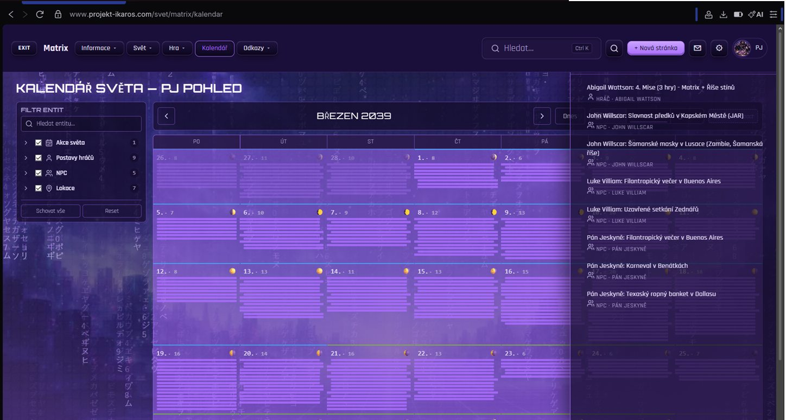
Kalendář světa: sjednocený měsíční přehled herních akcí i událostí postav a lokací, s lunárními fázemi a sezónním zabarvením buněk.
Tvorba a úprava kalendářů
Od jednoduchého pozemského roku po vícenásobné fantasy soustavy.
Co získáš: čas, který sedí tvému světu — měsíce, sezóny i úplňky podle tvých pravidel, ne podle gregoriánského kalendáře. A pokud chceš jen jednoduchý rok, máš ho na pár kliknutí.
Jak to funguje: kalendář přidáš dvoukrokovým průvodcem — nejprve vybereš předlohu, pak pojmenuješ. Lze začít i od prázdného. V editoru nastavíš název, počet hodin ve dni, dny v týdnu, měsíce (název a počet dní), nebeská tělesa, sezóny a posun epochy. Označíš kalendář jako výchozí nebo jako kalendář časové osy.
Pro koho: zakládat a upravovat kalendáře může vedení světa (pomocný vypravěč a výš); prohlížet je smí každý hráč. Nový svět dostane základní pozemský kalendář automaticky, takže nezačínáš na zelené louce.
14 vestavěných předloh kalendářů
Nemusíš začínat od nuly. Platforma nabízí 14 hotových předloh napříč kulturami a epochami: gregoriánský, juliánský, perský sluneční, indický (saka), etiopský, buddhistický thajský, koptský, hebrejský, islámský, zjednodušený čínský, staroegyptský, babylonský, řecký attický a holocénní. Jsou rozdělené do kategorií — současné civilní, náboženské, historické a alternativní — a slouží jako odrazový můstek pro tvůj vlastní fantasy kalendář.
Přestupné a lunisolární roky
Chceš-li, aby fáze měsíce a sezóny seděly dlouhodobě, kalendář umí volitelně zapnout pravidla přestupných let (různé varianty podle reálných systémů) i lunisolární cyklus. Tyto nadstavby jsou nepovinné — zapnou se, jen když je chceš, takže si jednoduchost nezkomplikuješ omylem.
Kalendář světa — vypravěčův přehled dění
Sjednocený měsíční přehled, který do jedné mřížky skládá herní akce i kalendářové události postav, nestvůr a lokací. Díky němu máš na jednom místě, co se ve světě kdy děje — narozeniny krále, výročí bitvy, plánované sezení i schůzka frakcí.
Měsíční přehled dění
Filtrovatelný dashboard času světa — co, kdy a u koho.
Co získáš: jistotu, že ti nic neuteče. Všechno dění světa v jednom kalendáři, který si přefiltruješ podle toho, co tě zrovna zajímá.
Jak to funguje: listuješ po měsících, skočíš na „Dnes" nebo na konkrétní rok a měsíc. Přepínáš mezi více kalendáři světa (data se převedou). Filtruješ zobrazené entity (akce / postavy / nestvůry / lokace) stromečkem, nastavíš barvu každé entity, přepneš hustotu zobrazení a otevřeš detail dne i konkrétní události.
Pro koho: tento přehled je vyhrazený vedení světa (pomocný vypravěč a výš) — je to vypravěčský dashboard. Buňky ukazují i lunární fáze a sezónní zabarvení, pozice (rok a měsíc) se pamatuje přes obnovení stránky.
Jde o přehledový a filtrovací nástroj — události se z něj nezakládají (akce vznikají na stránce akcí, kalendářové události u konkrétní postavy či lokace).
Časová osa světa — dějiny na dosah
Každý hluboký svět má historii. Časová osa je svislá kronika — chronologie nejdůležitějších událostí, lidí a míst. Datuje se podle kalendáře vyhrazeného pro časovou osu a pomáhá hráčům i tobě udržet přehled o dějinách světa: kdy padla říše, kdo koho zradil, kdy se narodil hrdina.
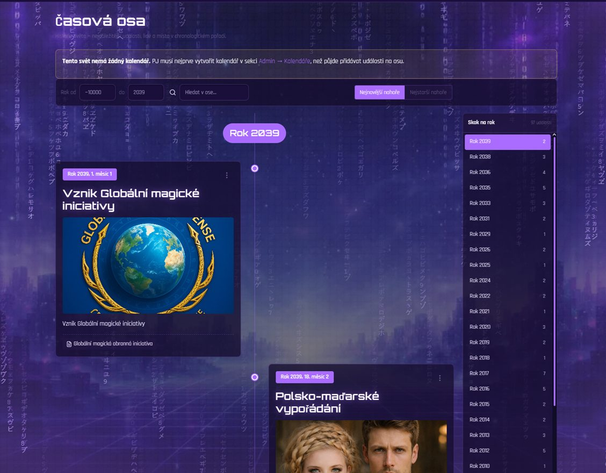
Časová osa: svislá kronika dějin světa s plynulým listováním, vyhledáváním a posuvníkem let. Události nesou obrázek, text i odkaz na stránku.
Kronika dějin
Plynulé listování historií s vyhledáváním a posuvníkem let.
Co získáš: dějiny světa, ke kterým se hráči mohou vracet a sami se v nich zorientovat — místo aby ses k nim pořád dokola vracel ve vyprávění.
Jak to funguje: plynule scrolluješ osou (od nejnovějšího roku), filtruješ podle rozsahu let i fulltextem, používáš posuvník roků. Přidáváš, upravuješ a mažeš události — s rokem, měsícem, dnem i hodinou, názvem, formátovaným textem, obrázkem, odkazem, vazbou na stránku světa a ručním přepisem fáze nebeského tělesa. Datum převádíš mezi kalendáři světa.
Pro koho: číst osu může hráč a výš (čtenář ne); přidávat a upravovat události vedení (pomocný vypravěč a výš). Fáze měsíce u událostí se počítají automaticky z aktivního kalendáře.
Generátor počasí — od jedné přeháňky po celé klima
Počasí dotváří atmosféru a dává hráčům do těla. Tenhle nástroj generuje atmosférické podmínky pro jednotlivé regiony světa — počasí nastavíš ručně, nebo ho necháš simulovat věrohodným modelem (přechody mezi stavy, rozptyl teploty, klimatické zóny, sezónní přechody). Generátor zároveň řídí herní (in-game) datum světa, takže čas plyne tak, jak ho posunuješ ty.
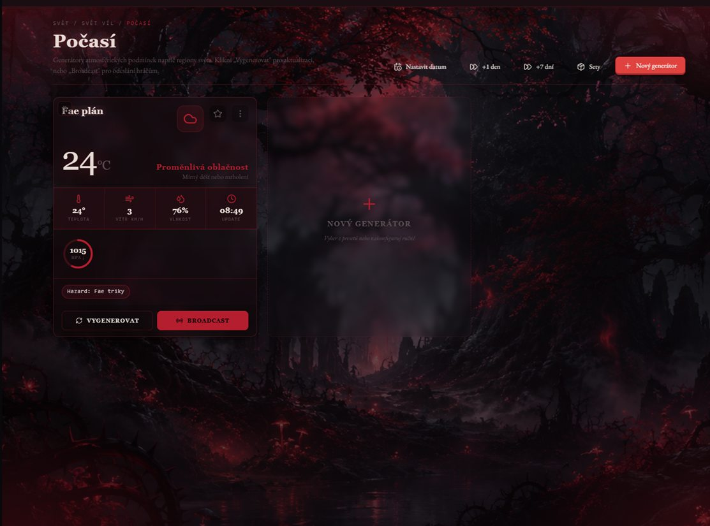
Generátor počasí: regionální generátory s aktuálním stavem, průvodce výběrem předlohy a ovládání herního data světa.
Tvorba a vysílání počasí
Od jedné přeháňky po celé klima regionu, plus posun herního času.
Co získáš: věrohodné počasí, které se hodí samo a které můžeš jedním kliknutím poslat hráčům do chatu nebo rovnou na bojiště. K tomu kontrolu nad plynutím herního času.
Jak to funguje: vytvoříš generátor podle reálného místa (Praha, Reykjavík…), podle archetypu (poušť, mírné oceánské, sci-fi/fantasy sady) nebo ručně, přes bohatého průvodce s vyhledáváním. Vygeneruješ počasí (volitelně se semínkem pro opakovatelnost), ručně ho přenastavíš, prohlížíš historii. Vysíláš aktuální počasí do chatu nebo na taktickou mapu. Řídíš herní datum: nastavíš ho, posuneš o den či týden (s automatickým přegenerováním počasí).
Pro koho: číst počasí může hráč a výš; vytvářet, generovat a vysílat ho vedení (pomocný vypravěč a výš), mazat generátor vypravěč. Simulace je opakovatelná pro stejné semínko a změny počasí naskakují živě i v jiném okně či zařízení.
Herní akce — plánování sezení, na které všichni dorazí
Domluvit termín hraní bývá noční můra. Plánovač nadcházejících herních sezení a událostí světa to řeší — s potvrzováním účasti, komentáři a notifikacemi, plus archivem proběhlých akcí pro vedení. Žádné dohadování v pěti chatovacích aplikacích.
Organizace sezení
Kdo, kdy a kdo dorazí — plus diskuse pod akcí.
Co získáš: jasný přehled, kdo dorazí, připomínku den předem, ať nikdo nezapomene, a jedno místo na domlouvání místo roztříštěných zpráv.
Jak to funguje: přepínáš mezi nadcházejícími a archivem, filtruješ podle skupiny. Vytvoříš akci s názvem, datem a časem, popisem, obrázkem, cílovou skupinou a možností potvrzování účasti. Hráči potvrdí účast přepínačem, píší komentáře a odpovědi, reagují emoji.
Pro koho: akce vidí hráč a výš; zakládat a upravovat je a vidět archiv vedení (pomocný vypravěč a výš). Při vytvoření akce se rozešle push notifikace a den předem chodí automatická připomínka. Na úvodní stránce světa je widget „blížící se akce" napříč všemi tvými světy.
Pavučina — graf vztahů, který udrží intriky pohromadě
V hlubokém příběhu se brzy ztratíš v tom, kdo koho nesnáší, kdo komu dluží a kde se schyluje ke krizi. Pavučina je vypravěčský nástroj na vztahy mezi subjekty kampaně (nestvůry, frakce, místa), příběhové linky a rychlé poznámky — zákulisí kampaně v jednom interaktivním grafu.
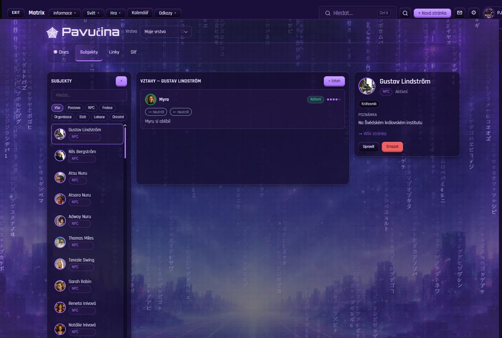
Subjekty: nestvůry, frakce a místa s vazbou na stránky i postavy.
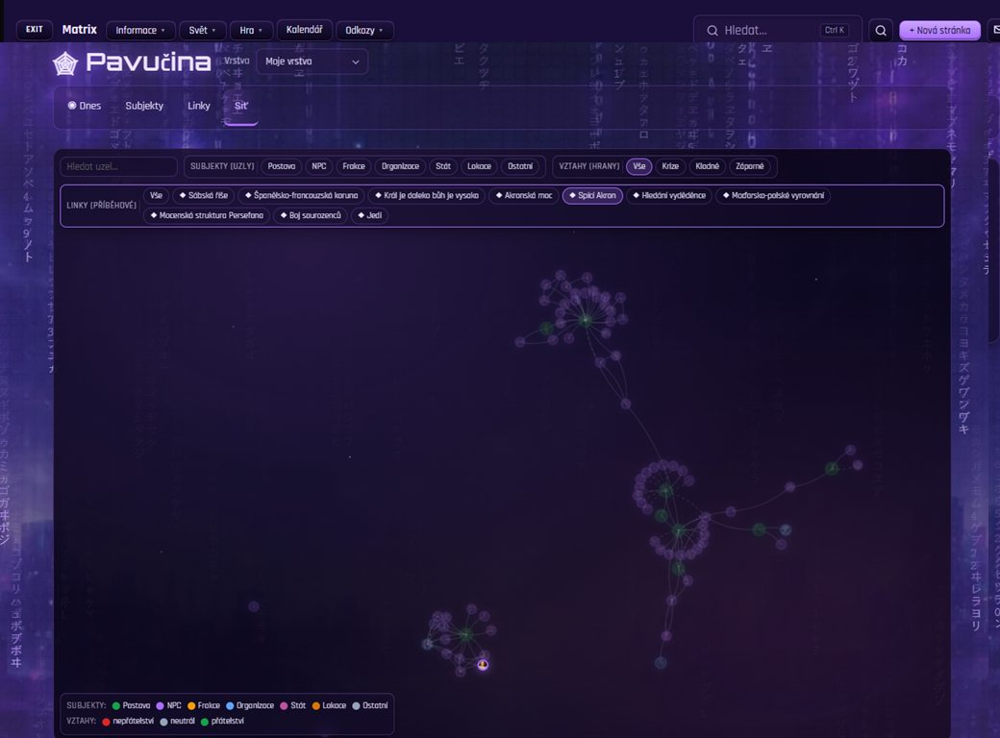
Vztahy mezi subjekty včetně stavu „krize", který skočí do přehledu.
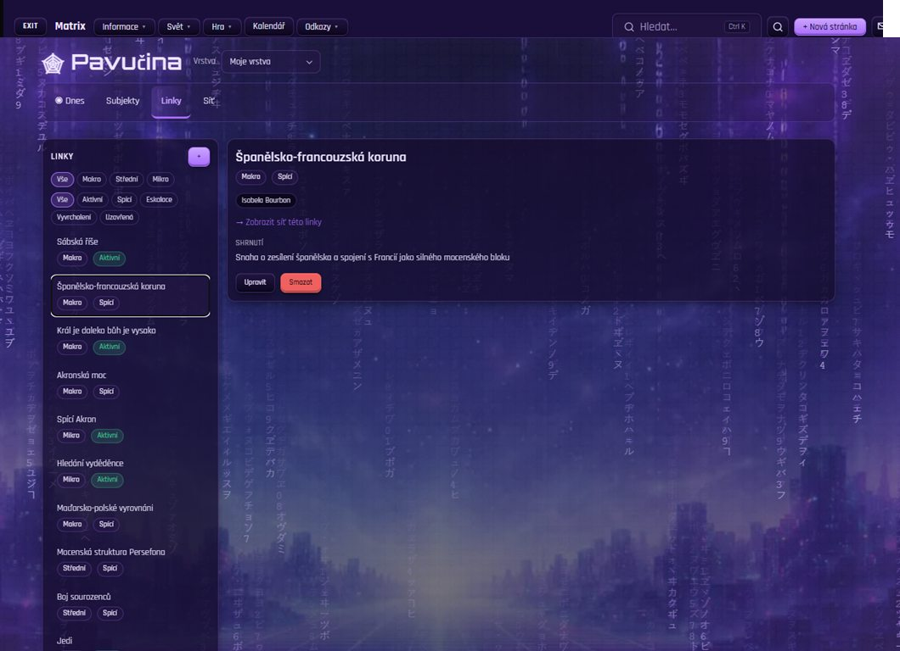
Příběhové linky (storylines) propojené se subjekty i scénami.
Mapa zákulisí kampaně
Subjekty, jejich vztahy a příběhové linky v jednom interaktivním grafu.
Co získáš: přehled o všech intrikách najednou. Na jeden pohled vidíš, kde to vře, které linky běží a co je třeba pohlídat — i po měsíční pauze ve hře se rychle dostaneš zpět do děje.
Jak to funguje: pracuješ ve čtyřech záložkách — „Dnes" (přehled krizí, aktivních linek a připnutých poznámek), „Subjekty" (zakládání subjektů a vztahů s vazbou na stránky i postavy), „Linky" (příběhové linie) a „Síť" (interaktivní graf s filtrem podle linky).
Pro koho: přístup má hráč a výš, ale s rozsahem podle role: vypravěč vidí celý svět, pomocný vypravěč vlastní a sdílená data, hráč jen vlastní. Vypravěč navíc může přepínat „vrstvy" a nahlížet data hráčů (jen ke čtení). Smazání subjektu kaskádně smaže i jeho vztahy.
Storyboard — strom scénářů pro dramaturgii příběhu
Než přijde sezení, chceš mít poskládané, co se může stát. Storyboard je vypravěčský nástroj na dramaturgii — stromová struktura scénářů a scén (složky a scény) s editorem a provázáním na subjekty, příběhové linky, stránky, mapové scény a bestie. Pomáhá ti naplánovat příběh a mít všechno propojené.
Plánování příběhu
Scénáře a scény přehledně ve stromu, propojené s celým světem.
Co získáš: připravenou hru bez chaosu. Scény poskládané ve stromu, každá napojená na mapu, stránky a postavy — během sezení sáhneš přesně po tom, co potřebuješ.
Jak to funguje: stavíš strom scénářů — zakládáš složky a scény, přesouváš je přetažením, používáš šablony, mažeš (potomci se povýší o úroveň). Edituješ scénu (název, obrázky, vazba na stránku, subjekty, linky). Propojuješ scénu s mapovými scénami, stránkami a bestiemi a odesíláš obrázek do chatu.
Pro koho: přístup má jen vedení světa (pomocný vypravěč a výš); hráč ani čtenář storyboard nevidí. Tajná pole (poznámky vypravěče, cíl, výsledek) vidí jen vedení. Poslední otevřená scéna se pamatuje pro daný svět.
14
vestavěných předloh kalendářů
∞
kalendářů na jeden svět
2
režimy počasí (ruční / simulace)
2
vypravěčské nástroje příběhu (pavučina + storyboard)
Část II — Co umíme
Pod kapotou: proč je to příjemné a důvěryhodné
Předchozí kapitoly ukázaly, co platforma umí. Tahle ukazuje, proč se s ní hraje příjemně a proč jí můžeš věřit svůj svět. Projekt Ikaros má promyšlený systém rolí a oprávnění, takže každý vidí a smí přesně to, co má. Hledá chytře — kombinuje klíčová slova i význam. Vše běží v reálném čase, bez obnovování. Nabízí přes 30 přepínatelných vzhledů s vlastní výraznou identitou. Funguje stejně dobře na mobilu i počítači. A je celý navržený tak, aby nikdy neprozradil to, co prozradit nemá — což je u hraní na hrdiny klíčové. Tahle kapitola je o klidném svědomí: že tvoje data jsou v pořádku a tvoje tajemství v bezpečí.
Role a oprávnění — každý vidí přesně to, co má
Pořádek a bezpečí stojí na dvouúrovňovém systému rolí. Globální role platí na celé platformě, světové role platí zvlášť uvnitř každého světa. Tytéž role se nikdy nemíchají — můžeš být na platformě běžný uživatel, ale ve svém světě plnohodnotný vypravěč s plnou mocí. Díky tomu nemusíš nikomu „věřit naslepo": přístup je daný rolí, ne dohodou.
Globální role (platforma)
Role
Co znamená
Superadmin
Plná moc nad platformou. Jediný může obnovit opuštěný svět a mazat kategorie.
Admin
Platformová správa — uživatelé, moderace účtů, smazané světy, index vyhledávání.
Ikarus
Běžný registrovaný uživatel.
Správce článků
Schvaluje a spravuje články.
Správce galerie
Schvaluje a spravuje galerii.
Správce diskuzí
Moderuje diskuze.
Světové role (uvnitř každého světa zvlášť)
Role
Co znamená
Žadatel
Požádal o vstup do světa a čeká na schválení.
Čtenář
Čte obsah světa.
Hráč
Hraje — má postavu, vidí časovou osu, počasí i akce.
Korektor
Smí editovat data světa (např. téma, šablony).
Pomocný vypravěč
Většina správy obsahu — stránky, kalendáře, chat, postavy, mapa.
Vypravěč (PJ)
Vlastník světa s plnou správou — nastavení, mazání, předání světa, přidělování rolí.
Vypravěč je pán svého světa
Důležité pravidlo: ani platformový správce nemá moc zasahovat dovnitř cizího světa — řízení světa patří jeho vypravěči. Jediná výjimka je záchranná: obnovení opuštěného, smazaného světa v 30denním okně. Tvůj svět je tak skutečně tvůj. Nikdo „shora" ti do něj nemluví, neupravuje ti obsah ani nemění role — máš nad svým příběhem reálnou kontrolu.
Rozhoduje server, ne prohlížeč
Skrytí tlačítka v prohlížeči je jen pohodlí. O tom, kdo co skutečně smí, rozhoduje vždy server. I kdyby si někdo zkusil obejít rozhraní, server žádost odmítne. Oprávnění jsou tak vynucená na autoritativní úrovni, ne jen kosmeticky — což znamená, že tvoje tajemství drží i proti tomu, kdo by je chtěl obejít naschvál.
Vyhledávání — najdeš, i když nevíš přesné slovo
Každý svět má vlastní fulltextové vyhledávání napříč svými stránkami. Není to ale jen prosté hledání slov — platforma kombinuje dva přístupy: klasický fulltext (najde přesná slova) a sémantické vyhledávání (rozumí významu, takže najde i obsah s jiným, ale příbuzným zněním). Výsledky obou se spojí, takže najdeš, co hledáš, i když si nevzpomeneš na přesný termín.
Hledání ve světě
Rychlý přístup k jakékoli informaci světa, klávesovou zkratkou nebo z menu.
Co získáš: jistotu, že informaci ve světě dohledáš — i v rozsáhlé wiki a i když znáš jen význam, ne přesné slovo. Žádné zdlouhavé proklikávání stránek.
Jak to funguje: vyhledávání otevřeš klávesovou zkratkou nebo přes nabídku (na mobilu v zásuvce), zadáš dotaz a skočíš přímo na nalezenou stránku.
Pro koho: každý člen hledá ve svém světě; výsledky jsou izolované jen na daný svět a nikdy neuniknou jinam. Správce má přehled o stavu indexace a může jej přebudovat.
Vše v reálném čase — žádné obnovování stránky
Platforma drží s prohlížečem trvalé spojení, takže se obsah aktualizuje sám: nová zpráva v chatu, tah na bojové mapě, změna počasí, nová novinka, online/offline stav. Když ti spojení vypadne, po obnovení se chybějící změny dopočítají a zase vidíš totéž co ostatní. Hra a komunikace tak působí živě a plynule — nemusíš nic ručně načítat a nikdy nehraješ „pozadu".
Bezpečné doručování změn
Identita u každé real-time akce se ověřuje ze zabezpečeného přihlášení, ne z toho, co pošle prohlížeč. Změny na úrovni světa se přitom rozesílají jako pouhý „signál" — klient si pak sám stáhne jen to, co skutečně smí vidět. Díky tomu se přes real-time kanál nikdy nepošle obsah někomu, kdo na něj nemá nárok. Plynulost tedy není na úkor soukromí.
Více než 30 přepínatelných vzhledů — svět, který vypadá jako tvůj příběh
Platforma nabízí přes 30 hotových vizuálních motivů (skinů), kterými si obarvíš celé prostředí — a každý svět může mít vlastní motiv odlišný od zbytku platformy. Pokrývají nejrůznější žánry, takže se vzhled přizpůsobí náladě tvého světa: temná fantasy vypadá temně, kyberpunk svítí neonem, pergamenový svět dýchá starobylostí.
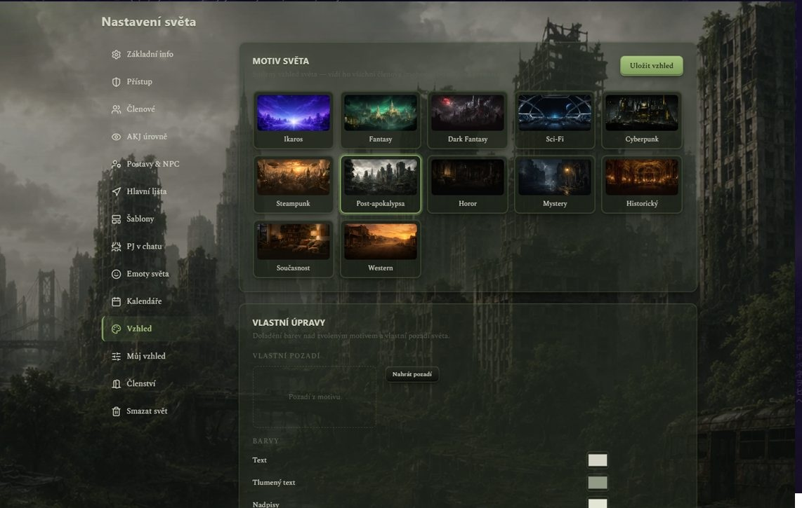
Jeden z žánrových motivů — celé prostředí se obarví do nálady světa.
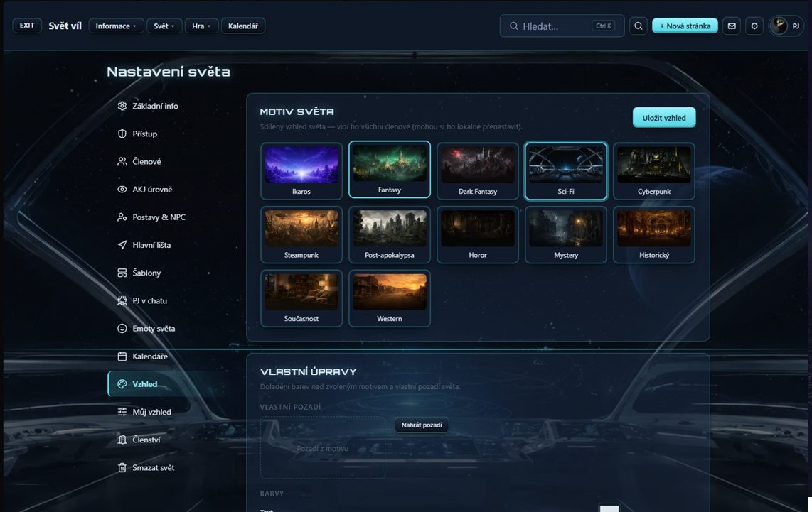
Jiný motiv, jiná atmosféra — od fantasy po sci-fi a horor.
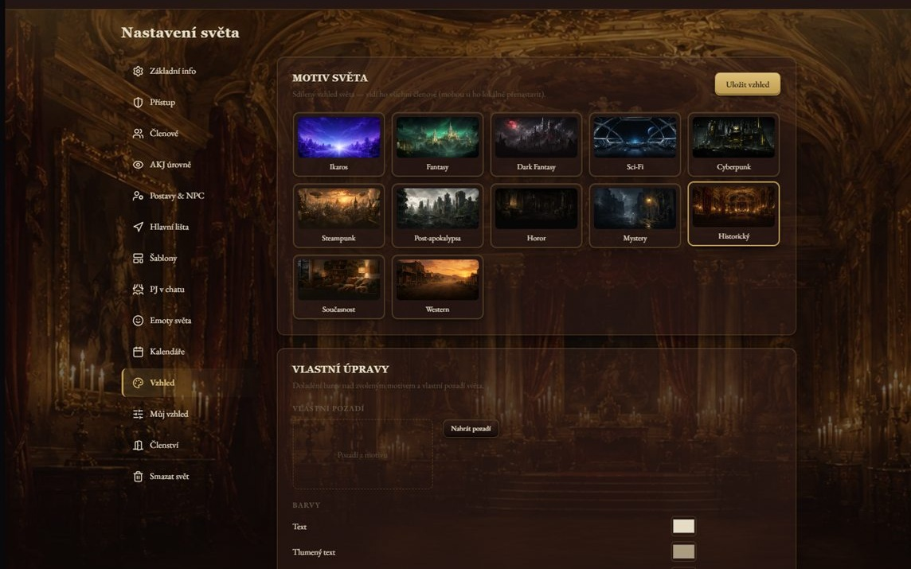
Rozmanitost vzhledů: každý svět může vypadat úplně jinak.
Žánrová pestrost
Fantasy, temná fantasy, sci-fi, vesmírná loď i vesmírná bitva, kyberpunk, steampunk, horor, nemrtví, postapokalypsa, mystery, historie, příroda, čtyři živly, severské runy, arabský svět, africké i indiánské motivy, western, hospoda, magie, měsíc, slunce, vesmír, pergamen, modré nebe, moderní a další — plus čisté světlé i tmavé varianty.
Vlastní identita „Ikaros"
Výchozí motiv platformy je fialová synthwave estetika — hvězdná fialová obloha, neonové město, perspektivní mřížka a signature efekt „fialového deště padajících znaků". To je vlastní značková tvář platformy, ne náhodná šablona.
O barevný „kořen" stránky se vždy stará jediný správce vzhledu — buď globální, nebo ten pro daný svět — takže se motivy nepřebíjejí a přepnutí je čisté, bez probliknutí a kolizí.
Mobil i počítač — všude doma
Každá obrazovka, komponenta i nástroj jsou navržené tak, aby fungovaly stejně dobře na telefonu i na počítači. Můžeš tedy hrát od stolu i z gauče s mobilem v ruce. Náročnější nástroje (například karta figurky na taktické mapě nebo vyhledávání) se na malých displejích přizpůsobí rozložením i ovládáním — třeba vystředěné panely místo bočních a zásuvky místo lišt. Dotykové ovládání je plnohodnotné: pohyb figurek, pingy i kreslení fungují prstem stejně jako myší.
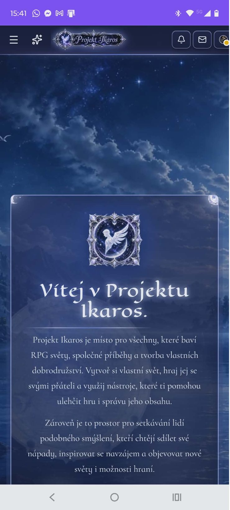
Mobilní pohled: stejná platforma, přizpůsobené rozložení a ovládání. Hraní i správa světa fungují i z telefonu.
Kvalita ověřená 16 systematickými kontrolami
Aby platforma zůstala spolehlivá i s tím, jak roste, prochází pravidelně sadou 16 odlišných stylů systematických kontrol kvality. Každý z nich se dívá na jiný typ rizika — od bezpečnosti přes výkon až po konzistenci dat. To je nad rámec běžného testování a je to záruka, že nové funkce nerozbijí ty staré. Pro tebe to znamená jediné: platforma, na kterou se dá spolehnout, že o tvoje data a tvůj svět nepřijdeš.
Bezpečnost a oprávnění
Kontrola rolí a přístupů, ochrana proti úniku obsahu mezi světy, prověření přihlašování a účtů, správné zpracování chyb a chování v reálném čase.
Konzistence dat
Kontrola, že se po smazání entity uklidí celý strom (žádné osiřelé záznamy), že stav databáze drží pohromadě a že obnova ze záloh i celé scénáře projdou bez chyby.
Spolehlivost rozhraní
Soulad mezi rozhraním a serverem, správné obnovování dat po změnách, kompletní navigace bez slepých odkazů, jednotné tvary formulářů i chyb.
Provoz a obsah
Kontrola produkčního nastavení, zacházení s nahranými soubory a obrázky, barevná konzistence a ochrana proti návratu už opravených chyb.
Navrženo tak, aby neprozradilo tajemství
Vypravěč připravuje obsah dopředu — skryté mapy, tajné scény, nestvůry v mlze, soukromé poznámky. Celá platforma je postavená tak, aby tyto věci hráč nezahlédl dřív, než má. Skryté věci se hráči vůbec neukážou (často ani jejich existence), a u řady prvků platí kaskádové pravidlo: stačí skrýt nadřazenou položku a vše uvnitř zmizí s ní. I chybové hlášky jsou navržené tak, aby neprozradily, co existuje a co ne. Můžeš tedy připravovat překvapení dlouho dopředu s klidem, že je hráči nenajdou.
Soft-delete: smazat neznamená ztratit
Mazání světa probíhá jako 30denní „koš" s možností obnovy, a řada dalších entit má místo nenávratného smazání právě takový koš. Omyl se dá vrátit a nic důležitého se neztratí jediným kliknutím. Měsíce práce na světě tak nesmažeš jedním ukvapeným tlačítkem.
6 + 6
globálních a světových rolí
30+
přepínatelných vzhledů
16
systematických kontrol kvality
30 dní
okno pro obnovu smazaného světa
Část III
Trh a konkurence
Jak velký je trh hraní rolí, kdo jsou hlavní hráči ve světě i v Česku, co umí a neumí — a kde přesně leží naše příležitost.
Část III — Trh & konkurence
Trh hraní rolí — velký, rychle rostoucí a stěhuje se on-line
Hraní rolí u stolu (anglicky tabletop role-playing games, zkratka TTRPG) je společenská hra, ve které skupina lidí spoluvytváří příběh: jeden hráč v roli „Pána jeskyně" (vypravěče) líčí svět a situace, ostatní hrají postavy, které tím světem procházejí. O výsledcích rozhodují pravidla a hod kostkou. Žánr existuje od roku 1974 (původní Dungeons & Dragons), ale teprve poslední dekáda z něj udělala mainstreamový kulturní a ekonomický fenomén — a hlavně ho přesunula z fyzického stolu na obrazovku. Tato kapitola popisuje, jak je ten trh velký, jak rychle roste, z jakých segmentů se skládá a proč právě teď vzniká prostor pro platformu typu Ikaros.
Proč nás trh zajímá
Ikaros nestojí na okraji nějakého výklenku. Stojí uprostřed trhu, který za deset let víc než ztrojnásobí svou hodnotu a u kterého nejrychleji roste právě digitální segment — tedy přesně to, co stavíme. Cílem této kapitoly je ukázat, že poptávka existuje, je měřitelná a každým rokem sílí.
Jak velký trh je
Odhady velikosti globálního TTRPG trhu se napříč analytickými domy mírně liší podle metodiky (zda počítají jen tištěná pravidla, nebo i doplňky, kostky, figurky, digitální nástroje a předplatné), ale shodují se na řádu a na trendu. Konsenzus pro roky 2024–2025 leží přibližně mezi 1,9 a 2,4 miliardy amerických dolarů ročně.
~2,0 mld $
velikost trhu TTRPG (2024–25)
~12 %
roční růst (CAGR), pásmo 11,8–13,2 %
4,9–6,6 mld $
projekce do 2033–2035
3×+
násobek hodnoty během dekády
Pro pochopení čísel je důležité, co znamená CAGR — Compound Annual Growth Rate, složená roční míra růstu. Je to průměrné tempo, jakým trh roste rok po roce při zohlednění složeného úročení. CAGR kolem 12 % je na zavedený zábavní segment velmi vysoké tempo; pro srovnání, globální HDP roste o jednotky procent. Trh, který roste 12 % ročně, zdvojnásobí svou hodnotu zhruba každých šest let.
Konzervativní scénář
Start 1,87 mld $ (2024), CAGR 11,84 % → cíl ~5,1 mld $ k roku 2033. I nejopatrnější odhad počítá s víc než ztrojnásobením.
Optimistický scénář
Start 2,41 mld $ (2026), CAGR 11,84 % → cíl ~6,6 mld $ k roku 2035. Vyšší startovní základna i delší horizont posouvají strop k 6,6 mld $.
Trh roste setrvale dvouciferným tempem; rozptyl scénářů je dán metodikou, ne pochybností o směru.
Z čeho se trh skládá — tři vrstvy jednoho zážitku
Aby bylo jasné, kde přesně Ikaros operuje, je užitečné rozdělit zážitek z hraní rolí na tři funkční vrstvy. Každá z nich má dnes vlastní nástroje, vlastní lídry a vlastní problémy. Klíčové zjištění celé této části manuálu je, že žádný hráč neřeší jen jednu vrstvu — potřebuje všechny tři současně, a dnes je musí slepovat dohromady z různých produktů.
1 · Stůl — kde se hraje
Vlastní herní seance: bojová mapa, figurky (tokeny), kostky, sledování životů a stavů postav, iniciativa v boji. Digitálně to řeší tzv. virtuální stůl (VTT) — Roll20, Foundry, Fantasy Grounds. Toto je „akce u stolu".
2 · Svět — o čem se hraje
Příprava a správa herního světa: encyklopedie postav, lokací, frakcí, map, časových os, pravidel kampaně. Řeší to worldbuilding nástroje — World Anvil, Kanka, LegendKeeper. Toto je „příprava a paměť kampaně".
3 · Komunita — s kým se hraje
Komunikace mezi seancemi, hledání spoluhráčů, organizace skupiny, hraní formou psaní (play-by-post). Dnes de-facto monopol drží Discord — chatovací platforma, která ale na strukturované dlouhé hraní nebyla navržena.
Spojení vrstev = bolest trhu
Typický stůl běží na Roll20 + Discord + fórum + samostatná wiki. Čtyři účty, čtyři rozhraní, čtyři místa, kde se data rozcházejí. Tuto roztříštěnost Ikaros sjednocuje — viz následující dvě kapitoly.
Hlavní trend: hraní se přesunulo on-line a zůstalo tam
Nejdůležitější strukturální změna posledních let není růst trhu jako celku, ale jeho digitalizace. Pandemie v roce 2020 vyhnala hráče od fyzických stolů k obrazovkám a — na rozdíl od mnoha jiných oborů — návrat zpět se nikdy plně nekonal. Hybridní a plně on-line hraní se etablovalo jako trvalý standard, protože řeší reálné problémy: vzdálenost mezi hráči, sladění času dospělých lidí, dostupnost vypravěčů.
44 %
hráčů používá virtuální stůl (VTT)
38 %
hraje hybridně (část u stolu, část on-line)
29 %
své hraní streamuje nebo nahrává
58 %
kampaní využívá digitální obsah
Druhý zásadní posun je komunitní povaha tvorby obsahu. Trh už dávno netáhne jen vydavatel pravidel; táhne ho samotná komunita, která vytváří dobrodružství, světy, doplňky a vede vlastní kampaně.
62 % kampaní dnes vede komunita, ne profesionální vydavatel
To je pro architekturu Ikara určující. Platforma není digitální pultík jednoho vydavatele — je to nástroj pro tvůrce a komunity. Hodnotu na ní vytvářejí sami uživatelé: zakládají světy, píší obsah, vedou skupiny. Tím se trh chová spíš jako sociální platforma než jako e-shop, a roste síťovým efektem (čím víc tvůrců, tím víc hráčů, tím víc tvůrců).
Streaming a popkultura jako růstový motor
Že je hraní rolí dnes mainstream, a ne nika pro hrstku nadšenců, potvrzuje i fyzický svět: veletrh Gen Con, největší severoamerická akce žánru, hlásí přes 71 tisíc návštěvníků. Sledovanost streamovaných kampaní (typu Critical Role), úspěch filmů a seriálů a popkulturní ukotvení žánru přivádějí do hobby trvalý proud nováčků. Pro nového hráče je přitom první kontakt skoro vždy digitální — hledá, kde a jak začít, on-line. To je publikum, které Ikaros oslovuje od prvního kliknutí.
Regiony — kde se hraje a proč je Evropa naše šance
Geograficky trh dominuje Severní Amerika, ale Evropa je silná a stabilní druhá. To je pro Ikaros klíčové: existující globální nástroje jsou stavěné primárně pro anglofonní Severní Ameriku a evropské, zejména neanglické trhy obsluhují jen okrajově. Tam vzniká prostor.
42 %
Severní Amerika
28 %
Evropa
21 %
Asie a Pacifik (APAC)
~9 %
zbytek světa
Evropa: velký, ale fragmentovaný trh
28 % světového trhu je obrovský objem, ale je rozdělený jazykově — němčina, francouzština, polština, čeština. Pro americkou platformu je každý z těchto jazyků samostatná, drahá lokalizace, kterou většinou neudělá. Lokálně zakotvený hráč tak naráží na anglické rozhraní a anglické herní systémy.
Česko: malý, ale hluboce zakořeněný trh
Česká RPG scéna existuje od 90. let, má vlastní herní systémy a živou, ale roztříštěnou komunitu. Žádný globální nástroj ji neobsluhuje v češtině ani neumí české systémy. Tomuto trhu a našemu konkurenčnímu příkopu se věnuje kapitola 32 — je to startovní pole Ikara.
Kdo jsou hráči
Profil hráče se za dekádu zásadně proměnil a rozšířil. Z dříve úzce vymezené (mužské, „nerdovské") skupiny se stalo široké, věkově i genderově vyvážené publikum dospělých lidí s vlastním příjmem. To má dva přímé dopady na obchodní logiku Ikara:
Ochota platit za pohodlí
Cílovou skupinou jsou dospělí s nedostatkem času, nikoli volných peněz. Jsou ochotni platit za nástroj, který jim ušetří organizaci a sladění skupiny — to je ekonomický základ freemium modelu (zdarma vstup, plat za rozšířené pohodlí).
Vysoká loajalita a dlouhé kampaně
Kampaně běží měsíce až roky. Jednou usazená skupina nemění nástroj snadno — náklady na přechod jsou vysoké (přenést celý svět a historii). To znamená nízký odliv (churn) a vysokou celoživotní hodnotu zákazníka, jakmile ho platforma získá.
Proč trh roste — shrnutí příčin
Popkulturní normalizace. Hraní rolí už není stigma; je to běžná forma zábavy s vlastními celebritami a mediálním ekosystémem.
Digitalizace zážitku. On-line a hybridní hraní odstranilo geografickou i časovou bariéru — hrát lze s kýmkoli, odkudkoli.
Komunitní tvorba. Většinu obsahu i kampaní generuje samotná komunita, což zajišťuje nekonečný a levný přísun nového obsahu.
Demografické rozšíření. Publikum je širší, dospělejší a solventnější než kdy dřív.
Streaming jako trychtýř. Sledování cizích kampaní přivádí trvalý proud nováčků, kteří hledají vlastní digitální vstup do hobby.
Závěr kapitoly
Trh hraní rolí je velký (~2 mld $), roste dvouciferným tempem (~12 % ročně) a směřuje k 5–6,6 mld $ během dekády. Jeho nejrychleji rostoucí, nejméně obsloužená a komunitou poháněná část je digitální — a v Evropě navíc rozbitá podle jazyků. To je přesně prostor, do kterého míří Ikaros. Následující kapitola ukazuje, kdo dnes tento prostor obsluhuje a kde každý z lídrů selhává.
Část III — Trh & konkurence
Konkurence ve světě — tři rodiny nástrojů, žádný kompletní
Předchozí kapitola rozdělila zážitek z hraní rolí na tři vrstvy: stůl (kde se hraje), svět (o čem se hraje) a komunita (s kým se hraje). Trh tomu odpovídá: vznikly tři oddělené rodiny nástrojů, každá s vlastními lídry. Žádný z nich však neumí všechny tři vrstvy najednou — a právě v té díře leží příležitost Ikara. Tato kapitola jednotlivé lídry rozebírá: co umí, kde selhávají, kolik stojí a pro koho jsou. Na konci je velká srovnávací tabulka.
Jak číst tuto kapitolu
Nehodnotíme konkurenty jako špatné produkty — většinou jsou ve své úzké specializaci výborní. Hodnotíme je jako dílčí řešení celku. Klíčová věta zní: hráč dnes musí kombinovat tři až čtyři produkty, protože žádný jednotlivý mu nedá kompletní zážitek. Ikaros nesoutěží s každým z nich v jeho disciplíně — soutěží s nutností je všechny lepit dohromady.
Rodina 1 — Virtuální stůl (VTT): kde se odehrává boj
Virtuální stůl (anglicky Virtual Tabletop, zkratka VTT) je software, který nahrazuje fyzický herní stůl. Zobrazuje bojovou mapu s mřížkou, figurky (tzv. tokeny), umožňuje házet kostkami, sledovat životy a stavy postav a řídit pořadí tahů v boji (iniciativu). Toto je jádro samotné herní seance. Trh ovládají tři hráči.
Roll20 — nízkoprahový lídr
Pro koho: začátečníci a nenároční hráči, kteří chtějí hrát hned bez instalace.
Cena: zdarma až ~9,99 $/měsíc za prémii.
Silné: běží v prohlížeči (žádná instalace), největší knihovna oficiálního obsahu D&D, přes 10 milionů registrovaných uživatelů — největší uživatelská základna na trhu.
Slabé: při větších scénách laguje a sekne se, jen základní dynamické světlo, technicky zastarává. Worldbuilding prakticky nemá, komunitní vrstva chybí.
Foundry VTT — mocný nástroj pro nadšence
Pro koho: technicky zdatní vypravěči, kteří chtějí maximum kontroly.
Cena: ~50 $ jednorázově (žádné předplatné).
Silné: přes 2 000 komunitních modulů, špičkové dynamické světlo a efekty, výborný výkon, jednorázová platba bez měsíčních poplatků.
Slabé:strmá křivka učení, vyžaduje vlastní server (self-hosting) nebo placený hosting — technicky náročné. Pro běžného hráče prakticky nedostupné bez IT znalostí. Opět jen stůl, nic kolem.
Fantasy Grounds — automat na pravidla
Pro koho: hráči pravidlově složitých systémů, kteří chtějí vše spočítané za sebe.
Cena: 39–149 $ jednorázově, nebo 3,99–9,99 $/měsíc.
Silné:nejlepší automatizace pravidel na trhu (software sám počítá útoky, zranění, modifikátory), nejvíc oficiálních licencí. Na trhu od roku 2004.
Slabé: zastaralé rozhraní, vázané na konkrétní (hlavně anglické) systémy, samostatná aplikace k instalaci. Žádný svět ani komunita.
Společný problém celé rodiny VTT
Všechny tři řeší jen samotnou seanci. Co se světem mezi hrami? Kde si skupina píše? Kde najde nové hráče? Jak vede kampaň formou psaní? Na to VTT odpovědi nemá — a hráč musí sáhnout po další rodině nástrojů. Navíc žádný z nich neumí česky ani neobsahuje české herní systémy.
Rodina 2 — Worldbuilding a wiki: kde žije svět
Druhá rodina řeší paměť a přípravu kampaně: encyklopedii postav, lokací, frakcí, historie, map a časových os. Je to vrstva, kterou vypravěč buduje měsíce a do které se neustále vrací. Tři hlavní nástroje se liší filozofií.
World Anvil — encyklopedie pro vypravěče
Pro koho: spisovatelé a vypravěči zaměření na hloubku příběhu a rozsáhlé světy.
Cena: freemium, prémie až ~105 $/rok.
Silné: bohaté články, mapy, časové osy, nástěnky, deníky a diskuzní vlákna. Nejhlubší nástroj pro propracované světy.
Slabé: orientace na tvorbu textu, ne na živé hraní. Rozhraní je hutné a pro nováčka zahlcující. Bojová mapa ani VTT chybí — propojení se samotnou seancí žádné.
Kanka — nejblíž TTRPG
Pro koho: herní skupiny, které chtějí přehledně organizovat kampaň.
Cena: velkorysý plán zdarma, prémie od ~5 $/měsíc.
Silné: čistší a přívětivější rozhraní než World Anvil, organizace entit, mapy, kalendáře s počasím. Ze všech worldbuilding nástrojů je nejblíž skutečnému hraní.
Slabé: stále jen správa světa — žádný virtuální stůl, žádný boj na mapě, žádná komunitní/chatovací vrstva pro hledání hráčů.
LegendKeeper — nejhladší zážitek
Pro koho: vypravěči, kteří chtějí moderní, plynulý nástroj a jemné řízení, co vidí hráči.
Cena: od ~9 $/měsíc.
Silné:nejhladší rozhraní ze všech, interaktivní mapy s body, spolupráce v reálném čase a nejsilnější řízení viditelnosti — co vidí vypravěč vs. co vidí hráč.
Slabé: opět čistý worldbuilding, žádný stůl ani komunita. Bez plánu zdarma — vstupní bariéra je placená.
Společný problém celé rodiny worldbuildingu
Všechny tři jsou výborné archivy a encyklopedie, ale končí tam, kde začíná akce. V žádném se neodehraje samotná hra — vypravěč si v nich svět připraví a pak ho musí ručně přenést do úplně jiného nástroje (VTT), kde se hraje. Dvojitá práce, dvě paměti, dvě místa, kde se data rozcházejí.
Rodina 3 — Komunita a chat: kde se hráči potkávají
Třetí vrstvu — komunikaci mezi seancemi, hledání spoluhráčů, organizaci skupiny a hraní formou psaní (play-by-post) — dnes obsluhuje prakticky jediný hráč: Discord. Není to ovšem RPG nástroj. Je to obecná chatovací platforma, kterou si komunita osvojila z nouze, protože nic vhodnějšího nemá.
Discord — de-facto standard z nouze
Pro koho: v podstatě každá herní skupina — protože alternativa neexistuje.
Cena: zdarma (prémie Nitro volitelně).
Silné: všichni už ho mají, hlasové i textové kanály, obrovský dosah, živá komunita.
Proč Discord na hraní rolí nestačí
Discord byl navržen pro rychlou, krátkou konverzaci, ne pro strukturované dlouhé hraní:
Play-by-post je pomalé — čekání 2–3 dny na reakci, hra vázne na jednom hráči.
Sledování stavu je chaos — životy, kouzla, stavy postav se po týdnech ztrácejí v toku zpráv.
Žádná struktura kampaně — „fórum" kanály jsou jen obejití problému, ne řešení.
Žádný svět, žádná mapa — Discord nezná postavy, lokace ani boj.
Klíčové zjištění — slepenec čtyř nástrojů
Typická aktivní herní skupina dnes provozuje kampaň přibližně takto: Roll20 pro boj u stolu, Discord pro komunikaci a play-by-post, fórum pro hledání hráčů a World Anvil/Kanka pro svět. Čtyři účty, čtyři rozhraní, čtyři místa, kde se informace o stejné postavě liší. Žádný z nich neumí česky ani neobsahuje české herní systémy. To není konkurence pro jeden produkt — to je příležitost pro produkt, který je všechny sjednotí.
Velká srovnávací tabulka
Následující tabulka shrnuje, co kdo umí. Řádky jsou klíčové schopnosti napříč všemi třemi vrstvami; sloupce jsou lídři každé rodiny a — vpravo, zvýrazněný — Ikaros. Legenda: ano = plnohodnotně, ~ = částečně nebo s omezením, ne = neumí vůbec.
Schopnost
Roll20
Foundry
World Anvil
Kanka
Discord
Ikaros
Bojová mapa (VTT)
ano
ano
ne
ne
ne
ano
Worldbuilding / wiki světa
~
~
ano
ano
ne
ano
Komunita / chat / play-by-post
ne
ne
~
~
ano
ano
Čeština (lokalizace)
ne
~
ne
~
ne
ano
České herní systémy
ne
ne
ne
ne
ne
ano
Vše na jednom účtu
ne
ne
ne
ne
ne
ano
Cena pro vstup
zdarma–9,99 $/měs
~50 $ jednoráz.
freemium–105 $/rok
zdarma–5 $/měs
zdarma
zdarma
Poznámka k částečným hodnocením (~): Roll20/Foundry mají útržky správy obsahu, ne plnohodnotný worldbuilding. Foundry/Kanka mají dílčí komunitní lokalizace, ne ucelenou českou verzi. World Anvil/Kanka mají diskuzní vlákna, ne živý chat ani play-by-post engine. Žádný z konkurentů neobsluhuje české herní systémy a žádný nesjednocuje všechny tři vrstvy pod jeden účet.
Vennův diagram pokrytí: každá rodina nástrojů obsadila jeden kruh. Průnik všech tří — kompletní zážitek — je dnes prázdný. Tam stojí Ikaros.
Závěr kapitoly
Globální konkurence je silná, ale úzce specializovaná. Každý lídr je dobrý v jedné ze tří vrstev a slepý ke zbylým dvěma. Žádný neumí všechny tři najednou, žádný nemluví česky a žádný nezná české herní systémy. Ikaros nesoupeří s Roll20 v lagu mapy ani s World Anvil v hloubce encyklopedie — soupeří s nutností provozovat čtyři produkty zároveň. Jak vypadá tato díra konkrétně na českém trhu a proč je z ní obranný příkop, ukazuje následující kapitola.
Část III — Trh & konkurence
Český trh & náš příkop — jediný domácí all-in-one
Předchozí dvě kapitoly ukázaly velký rostoucí trh a globální konkurenci, která ho obsluhuje jen po vrstvách a výhradně anglicky. Tato kapitola zaostřuje na české startovní pole Ikara. Česká scéna hraní rolí je stará přes třicet let, má vlastní herní systémy, živou komunitu — a je extrémně roztříštěná. Lidé si zážitek lepí z pěti až šesti služeb, z nichž žádná není česká all-in-one platforma a globální nástroje českou scénu prakticky neumí obsloužit. Z této kombinace vzniká náš konkurenční příkop (moat).
Co je „konkurenční příkop" (moat)
Příkop je trvalá výhoda, která soupeřům brání nás snadno dohnat — analogie k vodnímu příkopu kolem hradu. Není to jedna funkce, kterou lze okopírovat za týden, ale kombinace faktorů, kterou je drahé nebo nepřirozené napodobit. U Ikara to je: čeština + české systémy + sjednocení tří vrstev + komunita zakotvená na platformě. Tato kapitola jednotlivé součásti příkopu rozebírá.
Roztříštěnost české scény
Česká RPG komunita je aktivní, ale rozprostřená přes desítky vzájemně nepropojených míst. Neexistuje jedno centrum — existuje archipel webů, fór, Discord serverů a externích nástrojů, mezi kterými hráč neustále přeskakuje. Hlavní ostrovy tohoto archipelu:
Fóra a portály
RPG Fórum (rpgforum.cz) — centrální diskuzní fórum s podsekcemi pro české i zahraniční systémy, hledání hráčů, tvorbu.
d20.cz — portál se stovkami článků (tipy, recenze, teorie a design), diskuzemi a podporou tvůrců.
Herní weby a online systémy
DraciDoupe.cz / Andor.cz / Aragorn.cz — weby kolem Dračího doupěte a jeho online verzí.
jeskyneadraci.cz, draci-hlidka — oficiální stránky moderních českých systémů.
Discord servery
Komunity jako Krotitelé draků a desítky menších serverů. Tady probíhá živá komunikace a hledání spoluhráčů — ale s těmi limity Discordu, které popsala minulá kapitola (chaos ve sledování stavu, pomalé play-by-post, žádná struktura kampaně).
Externí (anglické) nástroje
Na samotné hraní si Češi stejně stáhnou globální nástroje — typicky Roll20 + Discord + fórum. Anglické rozhraní, anglické systémy, nic propojeného. Sezení probíhají 2–4× týdně, ale každé na jiné kombinaci služeb.
Žádný český all-in-one neexistuje
Klíčové zjištění celé kapitoly: na české scéně chybí jednotná platforma, která by spojila stůl, svět i komunitu pod jeden český účet. Hráč musí kombinovat domácí fórum (hledání hráčů) + Discord (komunikace) + Roll20 (boj) + případně wiki (svět) — a žádná z těchto vrstev spolu nemluví. Tuto díru dnes nevyplňuje nikdo.
České herní systémy — vlastní jazyk, který globál neumí
Český trh není jen „překlad" globálního. Má vlastní herní systémy s vlastní mechanikou, vlastní terminologií a vlastní oddanou komunitou. Žádný globální nástroj tyto systémy neobsahuje — neumí jejich listy postav, jejich pravidla ani jejich kostkové mechaniky. Pro českého hráče domácího systému je globální VTT prakticky nepoužitelné. Čtyři pilíře české scény:
Dračí doupě
První české RPG (počátek 90. let), pro generaci hráčů synonymum žánru. Vzniklo úpravou starší edice D&D, dnes už jde vlastní cestou. Pokračování DrD Plus a DrD II. Kolem něj žije síť webů a online verzí (Andor, Aragorn, DraciDoupe.cz). Hluboce zakořeněná značka s nostalgickou základnou.
Dračí hlídka
Originální český systém autora Pavla Ondrusze, vnímaný jako duchovní nástupce Dračího doupěte — pozvedává jeho odkaz „z popela". Komerčně úspěšný: pravidla se v prvních týdnech prodala v řádu tisíců kusů. Aktivní, rostoucí komunita.
Jeskyně a draci
Oficiální česká verze D&D 5e — vůbec poprvé v historii vyšlo nejslavnější RPG na světě v češtině. Není to pouhý překlad: lokalizovaná a rozšířená pravidla zapracovala to, co česká komunita poptávala. Označováno jako „začátek nové éry českých RPG". Přivádí na trh vlnu nových, česky mluvících hráčů.
Příběhy impéria
Původní český systém, jehož příručka nadchla vydavatele natolik, že kvůli němu vzniklo nakladatelství Mytago (jeho první publikace). Vyprávěcky orientovaný systém s vlastní identitou — ukazuje, že česká scéna nejen překládá, ale i tvoří.
Proč na systémech záleží pro produkt
Herní systém určuje tvar dat — jak vypadá list postavy, jaké má atributy, jak se hází kostkou, jak se počítá zranění. Globální nástroje umí D&D 5e (anglicky) a hrstku dalších anglických systémů. Dračí doupě, Dračí hlídku, Jeskyně a draky ani Příběhy impéria neumí žádný z nich. Ikaros je staví od základu s podporou českých systémů jako prvotřídního obsahu — to je technická bariéra, kterou globální hráč nepřekročí, protože pro něj český trh nemá objem, který by tu investici ospravedlnil.
Proč globální nástroje českou scénu neobsluhují
Není to náhoda ani opomenutí — je to ekonomická racionalita globálních hráčů. Pro Roll20, World Anvil nebo Foundry je český trh malý výsek z 28 % evropského podílu (a Evropa je sama druhá za Severní Amerikou). Náklady na plnou lokalizaci a podporu domácích systémů se jim nevyplatí. Konkrétně:
Jazyk. Žádný z lídrů nemá ucelenou českou verzi rozhraní. Hráč pracuje s anglickými termíny i tam, kde hraje česky.
Systémy. Domácí systémy v nich nejsou a nebudou — chybí poptávka v objemu, který je zajímá.
Komunita. Globální platformy směřují anglofonní komunitu; českého hráče k českým spoluhráčům nepřivedou.
Roztříštěnost je pro ně neviditelná. Problém „lepím si pět českých služeb" řeší jen ten, kdo český trh chápe jako celek — což globální hráč nedělá.
Náš příkop — co konkrétně Ikara chrání
Příkop Ikara: jediný český all-in-one pro hraní rolí
Ikaros je první a jediná platforma, která pod jedním českým účtem spojuje všechny tři vrstvy zážitku — stůl (bojová mapa, kostky, sledování stavu), svět (encyklopedie, mapy, kampaň) i komunitu (chat, hledání hráčů, play-by-post) — v češtině a s podporou českých herních systémů, navíc s bezplatným vstupem. To, co dnes hráč slepuje z pěti služeb a dvou jazyků, dostane na jednom místě a ve své řeči.
1 · Sjednocení tří vrstev
Konkurenti pokrývají vždy jen jednu vrstvu. Ikaros stojí v jejich průniku — jedna postava, jeden svět, jedna pravda napříč hrou, přípravou i komunikací. Žádné přepisování dat mezi nástroji.
2 · Čeština jako rodný jazyk
Ne lokalizace dodatečně přilepená, ale platforma navržená česky. Pro většinový český trh, který anglickými nástroji odrazuje nováčky, je to rozhodující rozdíl v přístupnosti.
3 · České herní systémy
Dračí doupě, Dračí hlídka, Jeskyně a draci, Příběhy impéria — jako prvotřídní obsah, ne nedostupný výklenek. To je technická bariéra, kterou globál nepřekročí kvůli objemu trhu.
4 · Komunita zakotvená na platformě
Síťový efekt: čím víc českých hráčů, světů a skupin žije na Ikaru, tím cennější je pro dalšího příchozího. Jednou vybudovaná komunita a roky kampaní vytvářejí vysoké náklady na přechod jinam.
Strategie: nejdřív Česko, pak Evropa
Český trh je ideální startovní pole: dost velký na životaschopnou komunitu, dost zanedbaný globály, aby tam Ikaros neměl přímou all-in-one konkurenci, a dost specifický (jazyk + systémy), aby vznikl obranný příkop dřív, než si ho někdo všimne. Po dominanci doma je další krok logický — stejnou bolest (fragmentace + jazyková bariéra vůči americkým nástrojům) má každý neanglický evropský trh: němčina, polština, francouzština. Architektura postavená pro vícejazyčnost a pluralitu systémů se otevírá do zbylých 28 % evropského trhu.
5–6
služeb, které dnes český hráč lepí dohromady
0
českých all-in-one platforem (před Ikarem)
4
domácí systémy, které globál neumí
28 %
evropského trhu jako další krok
Příkop vizuálně: dnešní česká scéna je archipel nepropojených ostrovů; Ikaros je most i pevnina v jednom.
Závěr části III
Trh je velký a rychle roste (kap. 30). Globální konkurence je silná, ale specializovaná po vrstvách a výhradně anglická (kap. 31). Český trh je živý, ale roztříštěný do pěti služeb, má vlastní systémy, které globál neumí, a nemá jediný domácí all-in-one nástroj (kap. 32). Ikaros tuto díru vyplňuje přesně: jeden český účet, tři vrstvy, domácí systémy, bezplatný vstup. To není drobné vylepšení existujícího produktu — je to první svého druhu, a právě v tom je příkop.
Vize a plán rozvoje (Etapa II): bezpečnostní pojistka, rychlé výhry, „český příkop" jako naše hlavní zbraň, vlajkové funkce, volitelná AI a komunitní tvorba obsahu.
Část IV — Vize (Etapa II)
Strategická osa & kam míříme
První etapa rozvoje platformy postavila dům — účty a bezpečnost, komunitu, herní světy, chat, postavy, mapy i kalendáře. To vše dnes funguje a žije. Druhá etapa, kterou popisuje celá tato část manuálu, má jediný velký cíl: proměnit Projekt Ikaros z platformy funkční na platformu vyspělou, bezpečnou a pro českou herní scénu nenahraditelnou. Tahle úvodní kapitola vysvětluje, proč přesně tudy a v jakém pořadí — a hlavně, co z toho budeš mít ty, ať už hraješ, vedeš příběh, nebo zvažuješ, jestli sem přivést celou svou skupinu.
Etapa II není seznam náhodných nápadů. Je to mapa směru, odvozená z hloubkové analýzy trhu a konkurence, ze zpětné vazby komunity a z poctivého pohledu na to, kde platforma dnes vyniká a kde ještě má rezervy. Každá vlna má jasný účel a každá staví na té předchozí. Nic se nedělá živelně a nic se nedělá na sílu.
Jak číst tuto část manuálu
Vize budoucnosti je mapa směru, ne pevný závazek k datu dodání. U každé plánované funkce čteš ve stejném pořadí dvě věci: Co ti to přinese (jak ti to usnadní hru, co nově budeš moct dělat) a Co to je (jak přesně funkce vypadá a proč vzniká). Pořadí vln vyjadřuje priority, ne kalendář — některé pojistky se vyplatí dělat hned, jiné dozrají až na pevném základu. A buď v klidu: vše níže je plán, ne hotový stav. Píšeme poctivě o tom, kam jdeme.
Proč vůbec Etapa II — a co z ní máš ty
Platforma už dnes zvládne to nejdůležitější: vést herní svět, hrát u virtuálního stolu, vyprávět příběh v chatu, spravovat postavy a komunitu — vše česky a pod jediným účtem. To je obrovská hodnota a žádná z dalších vln ji nenahrazuje. Otázka Etapy II zní jinak: co odděluje „funguje to" od „nikdo nemá důvod odejít a nový člověk to zvládne hned"? A na téhle otázce vyděláš přímo ty — protože odpovědí je platforma, která tě nezklame, neztratí ti práci a nenechá tě tápat.
Odpověď má tři vrstvy, které se navzájem podpírají — a každá z nich je vlastně slib tobě:
Vyspělost — bude radost to používat
Detaily, které dělají rozdíl mezi nástrojem, který „jde použít", a nástrojem, který používáš rád. Prázdná obrazovka, která tě uvítá místo aby tě odradila. Mapa, která rozumí tvému systému, ne jen tomu cizímu. Návody, které tě vtáhnou místo aby suše vysvětlovaly. Tisíc malých zlepšení, díky kterým ti platforma přestane házet klacky pod nohy.
Bezpečnost — o nic nepřijdeš
Pojistka, bez které je vše ostatní křehké. Druhý zámek u přihlášení, automatické noční zálohy s ověřenou obnovou, ochrana proti útokům, možnost stáhnout si vlastní data na disk. Tvoje stovky hodin tvůrčí práce jsou v bezpečí a tvůj účet je tvůj — i kdyby ti kdokoli uhodl heslo, dál se nedostane.
Nenahraditelnost — co jinde nedostaneš
Hloubková podpora českých herních systémů, kterou globální nástroje neumějí. Snadné přestěhování celé tvé skupiny ze starého fóra i s historií. Veřejná tvář tvého světa, kterou objeví Google a noví hráči. To, díky čemu nebudeš muset slevovat ze svého jazyka ani ze svého oblíbeného systému.
Společný směr — domov, který vydrží
Všechny tři vrstvy míří k jednomu: aby platforma nejen fungovala, ale aby rostla, byla milovaná a uživila si svůj provoz. Ne kvůli zisku — platforma zůstává nezisková a fanouškovská — ale aby tu pro tebe byla i za pět let a aby dokázala, že česká komunita umí postavit něco světové úrovně.
Naše zbraň: spojit stůl, svět a komunitu — česky
Klíčové strategické poznání zní střízlivě, ale je osvobozující: nejsme nejhlubší v žádné jednotlivé disciplíně — a nemusíme být. Existují nástroje s propracovanějším bojovým enginem. Existují encyklopedie světů s bohatší wiki. Existují komunikační platformy s větší masou uživatelů. Ale nikdo nespojí herní stůl, encyklopedii světa a živou komunitu do jednoho účtu — a navíc česky. To je naše jedinečná mezera a tvoje výhoda: nemusíš žonglovat třemi nástroji a dvěma jazyky, máš všechno na jednom místě.
Etapa II tuto zbraň brousí, místo aby se snažila porazit specializované zahraniční nástroje v jejich vlastní hře. Nesnažíme se být lepší bojový engine než ti, kdo nedělají nic jiného. Snažíme se být jediné místo, kde Čech najde celý svůj herní život pohromadě, srozumitelně a pod svým jazykem.
Tři scénáře budoucnosti: A → B → C
Ambice Etapy II rozkládáme do tří navazujících scénářů. Každý je sám o sobě cílem, na který se dá zastavit a být hrdý — a zároveň odrazovým můstkem k tomu dalšímu. Postupujeme od nejdosažitelnějšího k nejambicióznějšímu, a u každého je napsané, co konkrétně z něj budeš mít.
A
„Domov komunity" (horizont ~1 rok). Cílem je stav, kdy nikdo nemá důvod odejít. Co z toho máš ty: platforma je bezpečná (zálohy, druhý zámek u přihlášení), příjemná na používání (žádné prázdné odrazující obrazovky, drobné parity virtuálního stolu) a zvládneš ji, i když jsi tu úplně poprvé (vtahující průvodce a ukázkový svět, do kterého si beze strachu šáhneš). Je to konsolidace — uděláme z toho, co máme, opravdový domov, kde se cítíš dobře a v bezpečí. Pokrývají to vlny bezpečnosti, rychlých výher a část příkopu.
B
„Fórovka 2.0 pro Česko" (horizont ~1–2 roky). Cílem je stát se moderní náhradou českých herních fór — výchozí volbou pro každou novou textovou hru. Co z toho máš ty: dlouhé příběhy a ságy v přehledných kanálech místo nepřehledné stěny zpráv, hloubková podpora tvého českého systému, možnost přivést celou skupinu ze starého fóra i s roky obsahu, interaktivní mapy provázané s příběhem. Tady je hlavní strategická energie — tohle je „český příkop", věci, které zahraniční nástroje neumějí a které běžné komunikační platformy dělají špatně.
C
„Český all-in-one stůl" (horizont ~2–3 roky). Nejambicióznější cíl: plnohodnotná česká alternativa nejlepším virtuálním stolům světa, s komunitou navrch, kterou oni nemají. Co z toho máš ty: automatické osvětlení a linie pohledu (do tmy a za roh opravdu nevidíš), import hotových map jedním nahráním, streamerský režim pro vysílání, pracovní prostor s plovoucími panely, abys při boji nemusel ztrácet mapu z očí. Tady doháníme i ten živý taktický stůl — abychom k naší jedinečné kombinaci přidali i špičkové herní nástroje.
Cíl je dojít až na C — a trumfnout všechny
Scénáře A a B jsou začátek: vybudovat domov a stát se pro českou scénu nenahraditelným. Jakmile to stojí pevně, jdeme na C a doháníme i živý stůl. Ne kvůli zisku — platforma zůstává hobby projektem ze srdce. Cílem je dokázat, že na to máme, a posunout celou českou komunitu na novou úroveň ve velkém stylu. Ty jsi přitom ten, kdo z každého kroku přímo těží.
Kdybychom měli udělat jen tři věci
Strategická disciplína se nejlépe pozná na tom, co byste udělali, kdyby šlo o všechno. Kdyby z celé Etapy II zbyl prostor jen na tři věci, byly by to tyto — každá řeší riziko, které žádná jiná funkce nenahradí, a každá ti vrací konkrétní jistotu:
① Zálohy + druhý zámek u přihlášení
Ztráta dat nebo účtu je nevratná. Ve světech jsou tvoje stovky hodin tvůrčí práce; uniklé heslo vypravěče ohrožuje celý svět. Automatická záloha s ověřenou obnovou a dvoufaktorové přihlášení blokují téměř všechny scénáře katastrofy. Co z toho máš ty: jistotu, že tvoji práci ani tvůj účet ti nikdo nesebere. Bez téhle pojistky je vše ostatní postavené na písku.
② Příběhový / fórovkový mód
Jediná věc, kterou běžné komunikační platformy neumějí a která zavírá konkrétní díru na českém trhu. Co z toho máš ty: dlouhé, oddělené, vyprávěcí příběhy hrané za postavu, v přehledných kanálech, na mobilu i počítači — bez chaosu a ztracených nití. Tohle je jádro „českého příkopu" a důvod, proč by tvoje komunita přešla právě sem.
③ Onboarding + ukázkový svět
Bez vtahujícího začátku odejde třetina nováčků hned první týden — ne kvůli chybějícím funkcím, ale protože nepochopili, kde začít. Co z toho máš ty (i tvoji kamarádi): průvodce vezme nováčka za ruku a ukázkový svět mu dovolí osahat si všechno nanečisto. Strmá křivka učení se promění v přívětivý první dojem — nejlevnější páka na udržení lidí, jaká existuje.
Co mají společné
Každá z těchto tří řeší nevratné nebo systémové riziko: nevratnou ztrátu (data a účty), nevyplněnou díru na trhu (textové hraní), a tichý odliv lidí (špatný první dojem). Žádná parádní funkce je nenahradí — proto stojí na úplném vrcholu priorit. Pro tebe to znamená, že nejdřív řešíme to, co tě nejvíc bolí.
Průřezové principy Etapy II
Napříč všemi vlnami platí šest pravidel, podle kterých se rozhodujeme. Drží rozvoj věrný povaze projektu a chrání to, co dělá Ikaros Ikarem — a co tě sem přivedlo.
1
Bezpečnost a data mají přednost. Pojistka jde vždy před parádou. Než přidáme efektní funkci, musí být jisté, že o data ani účty nikdo nepřijde. Pro tebe to znamená klid — nejdřív se ochrání tvoje práce, teprve pak se přidává lesk.
2
Hobby charakter zůstává. Žádný povinný placený obsah, žádné funkce schované za placenou zeď. Štědrý bezplatný základ je naše výhoda, ne dočasná akce. Případná podpora od komunity je dobrovolná a nikdy nedává herní výhodu. Nikdy nebudeš nucen platit za to, abys mohl hrát.
3
Čeština a komunita jsou jádro. Cílíme na českou scénu a děláme to naplno. Překlady do dalších jazyků a globální ambice vědomě odkládáme — energii teď investujeme tam, kde jsme jedineční. Tvůj jazyk a tvoje komunita nejsou až druhé v pořadí, jsou první.
4
Umělá inteligence jen volitelně, transparentně a s limity. AI nikdy nikomu nevnucujeme. Je to volitelná pomocná vrstva, která ti může ušetřit čas při přípravě — vždy zapnutelná, vždy zřetelně označená a vždy s tvrdými stropy nákladů. Kdo AI nechce, nikdy ji ani nezahlédne.
5
Udržitelné tempo. Vlny jdou po sobě, ne všechno naráz. Chrání to data, kvalitu i čas lidí, kteří platformu staví. Lepší jedna pevná vlna než pět rozdělaných — a pro tebe to znamená, že nové věci přicházejí dotažené, ne polovičaté.
6
Obsah dělá komunita. Platforma dává nástroje, generátory a sdílené knihovny; hráči a vypravěči je plní. Tohle je nejudržitelnější a nejbohatší zdroj obsahu vůbec — a tvoje příležitost přispět tím, co umíš, a těžit z toho, co přidají ostatní.
Osm vln rozvoje — přehled
Etapu II rozkládáme do osmi navazujících vln (v dokumentaci značených jako fáze 14 až 21). Každá má vlastní doménu a vlastní roli v celkové strategii. První dvě jsou pojistka a rychlé výhry — levné a s vysokým dopadem, dělají se brzy. Prostřední vlny tvoří „český příkop" a vlajkové funkce — tam je hlavní diferenciační energie. Závěrečné vlny řeší volitelnou AI, růst, právní rámec a komunitní tvorbu. Sloupec „Co z toho máš ty" shrnuje přínos každé vlny jednou větou.
Vlna
Název
Zaměření
Co z toho máš ty
14
Bezpečnost & provozní odolnost
Pojistka platformy
Jistotu, že o data ani účet nepřijdeš: zálohy, druhý zámek, ochrana proti útokům, stažení vlastních dat. Levné, vysoký dopad, jde první.
15
Rychlé výhry & parita stolu
Kvalita a první dojem
Pohodlí: appku na ploše, čtvercovou mapu pro tvůj systém, měření a kreslení, vlídné obrazovky místo prázdna. Odemyká scénář A.
15B
SEO & objevitelnost
Aby nás našel Google
Tvůj veřejný svět a články konečně najde Google; vstupní stránky pro české systémy přivedou nové spoluhráče. Nejlevnější přiliv lidí.
16
Český příkop 👑
Naše unikátní výhoda
To, co jinde nedostaneš: dlouhé příběhy, plnohodnotný tvůj systém, snadný přesun ze starého fóra, vedený start, živé mapy. Scénář B.
17
Vlajkové funkce
„Wow" a parita stolu
Špičkové herní nástroje: dynamické světlo, import map, veřejná vitrína světa, streamerský režim, hlas v jednom okně. Scénář C.
18
AI asistence
Volitelná chytrá vrstva
Když chceš: návrh postavy na klik, shrnutí dlouhého příběhu, ilustrace — vždy dobrovolné, označené a s limity. Kdo nechce, nevidí.
19
Růst, metriky & udržitelnost
Aby platforma rostla a žila
Že tu platforma bude i za roky: měření, kde lidé odpadají, předvídatelné náklady, dobrovolná podpora, hledání her a spoluhráčů.
Čísla vln vyjadřují priority a závislosti, ne pevný kalendář. Bezpečnostní pojistka — zejména zálohy a druhý zámek u přihlášení — je urgentní a vyplatí se na ní pracovat prakticky okamžitě, nezávisle na dokončení čehokoli jiného. Naopak vlajkové funkce dozrávají až na pevném základu dřívějších vln. Vlny se mohou i prolínat.
Co tato vize záměrně nedělá
Stejně důležité jako vědět, kam jdeme, je vědět, kam nejdeme. Disciplinované „ne" chrání projekt před rozplynutím sil a před zradou vlastní povahy — a tím chrání i to, proč jsi tady. Vědomě tedy neděláme:
Plnou automatizaci pravidel jednoho systému — byla by to bezedná údržba navázaná na jediný systém a rozbila by univerzálnost, díky které podporujeme tucet systémů najednou. Děláme kostky a základní výpočty, ne počítač, který hraje za vypravěče.
Vlastní hlasový a video systém od nuly — drahé a křehké. Atmosféru řešíme jinak (počasí, hudba) a hlas přes vestavění osvědčeného otevřeného řešení rovnou do okna platformy.
Vlastní tržiště s prodejem obsahu — platforma není o penězích. Sdílení obsahu zdarma ano, prodej ne.
Překlady do angličtiny — cíl je česká scéna; dveře necháváme otevřené, ale neinvestujeme tam.
Nativní mobilní aplikaci do obchodů — instalace přes web ti dá většinu přínosu (ikona na ploše, upozornění) bez schvalování v obchodech a bez druhé kódové základny.
AI na sílu — vždy volitelně, vždy označené, vždy s limity.
Severka celé Etapy II
Nejdůležitější metrika není „kolik lidí se zaregistrovalo", ale „kolik lidí se příští týden vrátí". Roste-li týdenní návratnost, děláme správné věci. Vše v této části manuálu — od bezpečnostní pojistky po komunitní tvorbu — slouží jednomu: aby ses měl proč vracet a aby platforma byla pro českou scénu nenahraditelná. Následující kapitoly rozebírají každou vlnu do detailu, počínaje bezpečnostní pojistkou.
Část IV — Vize (Etapa II)
Fáze 14 — Bezpečnost & provozní odolnost
První vlna Etapy II je pojistka. Nepřidává nápadné nové funkce — místo toho chrání všechno, co už máš: tvoje postavy, tvůj svět, tvoje stovky hodin práce, tvůj účet. Je levná, má vysoký dopad a jde proto úplně první. Logika je prostá: ztráta dat je jediná chyba, ze které se komunita nevzpamatuje — a proto má bezpečnost přednost před parádou. Tahle kapitola je o jediném velkém slibu vůči tobě: o nic nepřijdeš a tvůj účet zůstane tvůj.
Vlna nemá žádné blokující závislosti — dá se na ní pracovat okamžitě. Skládá se z devíti kroků: od dvoufaktorového přihlášení (které je už hotové a běží) přes automatické zálohy a ochranu proti útokům až po odstřižení od dosluhujícího starého webu. Některé kroky jsou neviditelné a tiché; jejich hodnotu poznáš až ve chvíli, kdy by ti jinak hrozila katastrofa — a ona nepřijde.
Proč zrovna pojistka jako první
Efektní funkce přilákají lidi, ale ztracená data je odeženou navždy. Bezpečnostní vlna je vědomě „nudná" — nepřinese chlubivé snímky obrazovky, zato znamená, že na platformě, kterou doporučíš kamarádům, se nikdy nestane to nejhorší. Je to investice do tvého klidu a důvěry, ne do efektu. Vše níže je plán; výjimkou je dvoufaktorové přihlášení, které už funguje.
14.1 — Dvoufaktorové přihlášení hotovo
Druhý zámek u tvého přihlášení
Co ti to přinese: Jistotu, že i kdyby ti někdo uhodl nebo odkoukal heslo, do účtu se stejně nedostane — chybí mu jednorázový kód z tvého telefonu. Obzvlášť důležité pro tebe, pokud vedeš celý svět nebo spravuješ platformu: tvůj účet je klíč ke spoustě cizí práce.
Co to je: V profilu v sekci bezpečnosti si naskenuješ QR kód do ověřovací aplikace v mobilu, opíšeš kód a dostaneš deset jednorázových záložních kódů pro případ, že telefon ztratíš. Při dalším přihlášení pak po heslu zadáš aktuální kód. Důvěryhodné zařízení (svůj počítač) si můžeš zapamatovat, aby se kód nevyžadoval pokaždé — a tuhle důvěru kdykoli odvolat.
Stav: Hotové a nasazené. Tajný klíč je šifrovaný, přihlášení je navržené tak, že před úspěšným ověřením druhého faktoru nevznikne žádný platný přístupový lístek, a při změně hesla nebo vypnutí dvoufaktoru se zapamatovaná zařízení automaticky zruší. Funkce je dobrovolná pro všechny.
Co ještě přijde k dvoufaktoru
Jako budoucí doplňky jsou v záloze e-mailový jednorázový kód jako volitelná slabší alternativa pro ty, kdo nechtějí ověřovací aplikaci, a možnost vynutit druhý faktor povinně pro správce platformy spolu s nástrojem „odemkni uživatele" pro případ, že se někomu zablokuje přístup.
14.2 — Oprava ochrany proti robotům
Ochrana, která nevypadne zrovna ve chvíli, kdy je nejhůř
Co ti to přinese: Klid, že platformu nezaplaví roboti zakládající falešné účty a zkoušející hesla — a to ani tehdy, když má ochranná služba výpadek. Méně spamu, falešných účtů a pokusů o napadení znamená čistší a bezpečnější komunitu kolem tebe.
Co to je: Ochrana proti automatickým robotům se přepne do bezpečného režimu „při pochybnostech zablokuj" — když ochranná služba vypadne, požadavek se zablokuje, místo aby tiše prošel. Bezpečnostní prvek, který se při potížích sám vypne, totiž není ochrana, ale falešný pocit bezpečí. Doplní se upozornění správcům a sladí se nastavení s dokumentací. Pokud tě někdy blokace zastihne, uvidíš srozumitelnou hlášku, ne záhadné tiché selhání formuláře.
14.3 — Ochrana prohlížeče proti útokům
Záchranná síť proti propašování škodlivého kódu
Co ti to přinese: Ochranu před útoky, které se snaží do textu (chatu, životopisu postavy, článku) propašovat škodlivý kód a spustit ho ostatním v prohlížeči. I kdyby kontrola obsahu jednou selhala, prohlížeč takový kód odmítne spustit. A spojení s platformou je vždy šifrované, takže nikdo nemůže odposlouchávat, co posíláš.
Co to je: Server začne ke každé stránce přikládat sadu ochranných pravidel — seznam povolených zdrojů obsahu, zákaz vkládání platformy do cizích rámů, vynucení šifrovaného spojení a opatrné zacházení s odkazujícími adresami. Pro tebe je to neviditelné; mění se jen úroveň ochrany na pozadí. Nasazení proběhne opatrně, nejprve v režimu sběru, aby se neporušilo nic, co dnes funguje.
14.4 — Zálohy & plán obnovy 👑 provoz
Tvoje práce přežije i selhání serveru
Co ti to přinese: Tu nejdůležitější jistotu celé vlny — že tvoje stovky hodin tvůrčí práce, celé příběhy, postavy a mapy nezmizí, ani kdyby selhal server. Tichá ztráta dat je jediná chyba, ze které se komunita nevzpamatuje; tahle funkce ji vylučuje.
Co to je: Každou noc se automaticky pořídí kopie všech dat a uloží se mimo hlavní server — na nezávislé úložiště, aby ji nezasáhl týž problém jako produkci. Kopie se uchovávají v rotaci (například několik denních a několik týdenních). Obrázky a média jsou v cloudové službě zvlášť. A protože záloha, kterou nikdo nikdy nevyzkoušel obnovit, není záloha, ale jen naděje, součástí plánu je i pravidelný zkušební test obnovy a stručný návod „co dělat, když spadne server". Pro tebe je vše neviditelné — dokud nepřijde den, kdy tě to zachrání.
14.5 — Automatická kontrola před nasazením
Méně výpadků uprostřed hry
Co ti to přinese: Spolehlivější web s menším rizikem, že tě výpadek zastihne uprostřed boje nebo důležité scény. Jeden chybný kousek nové verze už nedokáže tiše shodit platformu, protože ho automatická brána zachytí dřív, než se k tobě vůbec dostane.
Co to je: Před každým zveřejněním nové verze automaticky proběhne sada kontrol — kontrola správnosti kódu, testy a jeden ucelený průchod reálným scénářem od přihlášení přes vstup do světa až po otevření mapy. Funguje to jako rozumný vrátný: zjevné problémy se zachytí, než se dostanou ven. Nástroj pro tyto průchodové testy je už připravený, jen se zatím naplno nevyužívá.
14.6 — Hlídání zranitelných součástí & příprava na růst
Záplatované díry a odolnost i při velkém provozu
Co ti to přinese: Že platforma zůstane bezpečná, i jak roste — nově objevené zranitelnosti se rychle zaplátují a ochrana proti přetížení funguje, i když se kvůli většímu počtu hráčů web rozběhne na více serverech. Pro tebe to znamená stabilní službu, která nepadá pod náporem a nestane se snadným cílem útoku.
Co to je: Zapne se automatické skenování všech použitých softwarových součástí, které upozorní na nově objevené zranitelnosti dřív, než je někdo zneužije. A připraví se varianta ochrany proti záplavě požadavků, která drží počítadlo centrálně, takže platí i při běhu na více serverech současně. Neviditelné pro tebe, zásadní pro odolnost platformy.
14.7 — Export celého světa nebo kampaně
Tvoje data jsou opravdu tvoje — kdykoli si je odneseš
Co ti to přinese: Konec strachu z uvíznutí na jedné platformě. Můžeš si kdykoli stáhnout kompletní kopii svého světa na vlastní disk — vlastní záloha v tvých rukou, navíc k té serverové. I když tlačítko nikdy nepoužiješ, už jen fakt, že ho vidíš, znamená: „moje práce je moje a mám ji pod kontrolou." A jako bonus získáš i obrazovku pro stažení vlastních osobních dat, kterou žádá ochrana soukromí.
Co to je: V nastavení světa přibude výrazné tlačítko „Exportovat / Zálohovat vše", které připraví kompletní balíček — všechen text a strukturu světa v čitelném datovém formátu, k tomu obrázky a navíc přehledné PDF pro lidské oko. U velkých světů se balíček chystá na pozadí s ukazatelem průběhu, aby to nezatížilo server, a pak ti nabídne stažení.
14.8 — Odstřižení od dosluhujícího starého webu
Platforma, která nestojí na ničem cizím, co může spadnout
Co ti to přinese: Jistotu, že až jednou zhasne dosluhující starý web, na Ikaru se nic tiše nerozbije. Vyhledávání, e-maily (třeba reset hesla) i upozornění na telefon budou stát na vlastních nohách. Pro tebe to znamená, že se nikdy nestane, že by ti přestala chodit důležitá pošta nebo se rozpadlo hledání, a nikdo by nevěděl proč.
Co to je: Odstraní se poslední závislosti na umírajícím starém webu — vyhledávací model se přesune na vlastní hosting, odesílání e-mailů se přepne na vlastní poštovní bránu a otestuje v ostrém provozu, a push upozornění se ověří na skutečném telefonu (na iPhonu je k tomu nutné mít web nainstalovaný na ploše, což se propojuje s instalací aplikace v další vlně). Proto tenhle krok patří do pojistky, ne až do fáze růstu — je to odstranění skrytého rizika z minulosti.
14.9 — Dokončení probíhajících auditů kvality
Méně skrytých chyb, mrtvých odkazů a ztracených dat
Co ti to přinese: Plynulejší a spolehlivější platformu, kde tě navigace nezavede do slepé uličky, po smazání věcí nezůstávají osiřelé kusy dat a databáze drží pohromadě. Tichá, ale důležitá údržba zdraví celé platformy, kterou poznáš tak, že prostě věci fungují, jak mají.
Co to je: Dotáhnou se do konce rozběhnuté kontrolní průchody platformou — ověří se, že se po smazání věcí uklidí celý jejich strom, že je databáze vnitřně konzistentní, že existuje jeden spustitelný ucelený scénář a že navigace nikam nevede do mrtvé cesty. Jak kód roste, hrozí, že tiše ztratí data nebo zavede uživatele špatně; tyhle kontroly přesně tomu předcházejí. Otevřené nálezy se po schválení opraví.
9
kroků bezpečnostní pojistky
1
už hotový a běžící (dvoufaktor)
každou noc
automatická záloha na oddělené úložiště
0
funkcí schovaných za placenou zeď
Shrnutí vlny 14
Bezpečnostní vlna nepřidá ani jeden chlubivý snímek obrazovky — a přesto je to nejdůležitější investice celé Etapy II. Druhý zámek u přihlášení (hotový), automatické zálohy s ověřenou obnovou, ochrana prohlížeče, export vlastních dat a odstřižení od starého webu dohromady znamenají, že na platformě, kterou doporučíš, se nikdy nestane to nejhorší: nepřijdeš o data ani o účet. Teprve na téhle pevné půdě má smysl stavět všechno ostatní — počínaje rychlými výhrami v následující vlně.
Část IV — Vize (Etapa II)
Fáze 15 — Rychlé výhry & parita stolu
Druhá vlna Etapy II je o rychlých výhrách: drobnostech s nízkou cenou a citelným dopadem na to, jak se ti platforma používá. Žádná z nich není sama o sobě převratná — ale dohromady promění platformu z „funguje to" na „je radost to používat". Tahle vlna ti dá pohodlí: appku na ploše, mapu, která rozumí tvému systému, nástroje, které u virtuálního stolu čekáš, a obrazovky, které tě uvítají místo aby tě odradily. Odemyká scénář A: domov, kde se neztratíš a nemáš důvod odejít.
Jádrem vlny jsou dvě skupiny zlepšení: parita virtuálního stolu (věci, které u takových nástrojů čekáš — různé typy mřížek, měření, kreslení) a první dojem (instalace na plochu, vlídné obrazovky, rozcestník podle toho, kdo jsi). První dojem je přitom nejlevnější páka na udržení lidí, jaká vůbec existuje. Vše níže je plán, ne hotový stav.
Proč „rychlé výhry" hned po pojistce
Když je platforma v bezpečí, dalším úkolem je, aby z ní lidé nezklamaně neodcházeli kvůli maličkostem. Chybějící čtvercová mřížka odradí vypravěče dřív, než vůbec začne. Prázdná bílá obrazovka po registraci odežene třetinu nováčků. Tyhle drobnosti jsou levné na opravu a drahé na ignorování — proto jdou hned po pojistce.
15.1 — Instalace na plochu (aplikace z webu)
Z webu opravdová appka — jedním klikem z plochy do hry
Co ti to přinese: Ikonu Ikara přímo na ploše telefonu i počítače a otevření hry jediným klepnutím, bez hledání v prohlížeči. A hlavně spolehlivá upozornění na nové zprávy a dění ve světě — zvlášť na iPhonu, kde push chodí spolehlivě jen tehdy, když máš web nainstalovaný na ploše. Vše bez stahování z obchodu s aplikacemi.
Co to je: Platforma ti nabídne instalaci na plochu, dostane vlastní ikonu podle zvoleného vzhledu a poběží jako samostatná aplikace přes celé okno. Přibude i základní chování při výpadku připojení, aby appka úplně nespadla, když na chvíli ztratíš signál.
15.2 — Čtvercová a bezmřížková mapa
Mapa, která rozumí tvému systému, ne jen tomu cizímu
Co ti to přinese: Možnost hrát na mřížce, kterou tvůj systém skutečně používá. Většina her — Dračí Doupě, Dungeons & Dragons, Zaklínač i další — počítá se čtvercem nebo bez mřížky, stejně jako většina volně stažitelných map. Už tě tedy neodradí, že mapa umí jen šestiúhelníky; vezmeš si tu, která sedí tvé hře.
Co to je: Při zakládání nebo úpravě scény si zvolíš typ mřížky — šestiúhelníkovou, čtvercovou, nebo žádnou. Mapa pak podle volby vykreslí odpovídající síť a pohyb figurek se jí přizpůsobí. Tvoje stávající šestiúhelníkové scény zůstanou beze změny — nová volba je rozšíření, ne přepis.
15.3 — Měření, pravítko & šablony oblastí
Okamžitě víš, kam dosáhneš a koho zasáhneš
Co ti to přinese: Konec dohadů typu „dojdu tam ještě tahle?" nebo „koho přesně zasáhne ohnivá koule?". Změříš vzdálenost přímo v herních jednotkách a položíš na mapu tvar kouzla, abys viděl jeho dosah — denní chleba taktického hraní, který ti ušetří spory u stolu.
Co to je: Do mapy přibude nástroj pravítko, který ukáže vzdálenost v jednotkách scény (políčko = určitý počet metrů), a sada šablon účinků kouzel — kužel, koule, linie, čtverec — které se dají položit na mapu a přichytit k mřížce. Platforma už umí výbuchové oblasti; tohle doplňuje obecné měření navázané na mřížku z předchozího bodu.
15.4 — Kreslení & poznámky na mapě
Rychle naznačíš, zakroužkuješ, dopíšeš
Co ti to přinese: Možnost za běhu hry rychle ukázat, co potřebuješ vysvětlit — naznačit směr útěku, zakroužkovat důležité místo, dopsat poznámku přímo na mapu. Drobnost, kterou u virtuálních stolů čekáš a postrádáš.
Co to je: Jednoduchá kreslicí vrstva nad mapou — volná čára, šipka, kruh a text, vše s možností smazání. Nakreslíš, ukážeš, smažeš a hraje se dál.
15.5 — Osnovy & šablony stránek
Prázdná stránka už tě nevyděsí
Co ti to přinese: Snazší start tvorby, když nevíš, čím začít. Osnova s připravenými nadpisy a otázkami tě navede — u postavy třeba vzhled, motivace, tajemství; u lokace poloha, obyvatelé, historie. Místo bílé plochy, která děsí, dostaneš kostru, kterou stačí vyplnit.
Co to je: Při zakládání stránky si můžeš vybrat osnovu podle typu (lokace, frakce, osoba a další), která stránku předvyplní vhodnými nadpisy a otázkami. Osnovy jsou volitelné — kdo chce čistou stránku, dostane ji. Platforma už umí šablony stránek na úrovni světa, tohle doplňuje obsahové nápovědy.
15.6 — Vlídné prázdné obrazovky vysoký dopad
Žádné prázdno, které tě po registraci odradí
Co ti to přinese: Místo prázdné bílé obrazovky, která mate a odhání, dostaneš vlídné pozvání k první akci. Tam, kde dnes svítí suché „Nemáte žádné postavy", uvidíš třeba „Tvá družina hrdinů tu zatím chybí — vytvoř první postavu" a velké tlačítko, které tě hned navede. Pro tebe i pro každého, koho sem přivedeš, to znamená, že hned víš, co dělat dál.
Co to je: Napříč celou platformou — postavy, stránky, mapy, chat, kampaně — nahradí prázdné výpisy přívětivá obrazovka s tematickou ilustrací, povzbudivým textem a jasným velkým tlačítkem k akci. Prázdná obrazovka hned po registraci je totiž nejkritičtější bod, kde mizí třetina nováčků — a tohle je nejlevnější možná oprava s největším dopadem. Přirozeně se pojí s průvodcem pro nováčky z další vlny.
15.7 — Rozcestník podle role na úvodní stránce
Hned poznáš, že je to pro tebe — a jak začít
Co ti to přinese: Když na platformu přivedeš kamaráda, prvních dvacet vteřin mu řekne přesně to jeho: jiná cesta pro vypravěče, jiná pro hráče, jiná pro textové hry, jiná pro tvůrce světů. Místo anonymního „co to vlastně je" dostane každý řeč šitou na míru a jasné „takhle začnu". Méně tření, rychlejší rozhodnutí.
Co to je: Nová veřejná úvodní stránka jako rozcestník s jedním jasným slibem nahoře a dvěma tlačítky („Zkusit demo", „Začít zdarma"), pod tím tři pilíře hodnoty (veď příběh / hraj / udrž komunitu) a pak reálný náhled skutečných světů jako sociální důkaz. Naváže na veřejnou vitrínu světů (živý náhled) a na ukázkový svět (vyzkoušení hned).
3
typy mřížky: čtverec, šestiúhelník, žádná
4
tvary kouzel: kužel, koule, linie, čtverec
⅓
nováčků mizí na prázdné obrazovce — to řešíme
1 klik
z plochy přímo do hry
Shrnutí vlny 15
Rychlé výhry jsou souhrnem mnoha drobností, které dohromady mění celkový pocit z platformy. Instalace na plochu z ní udělá opravdovou aplikaci, parita virtuálního stolu (různé mřížky, měření, kreslení) ti přestane házet klacky pod nohy, a vlídné obrazovky s rozcestníkem podle role udrží nováčka, který by jinak po pár vteřinách odešel. Je to vrstva pohostinnosti nad pevným základem — a tvůj krok ke scénáři A, kdy nikdo nemá důvod odejít.
Část IV — Vize (Etapa II)
Fáze 15B — SEO & objevitelnost
Tahle vlna řeší jednu zdánlivě nudnou, ve skutečnosti ale klíčovou otázku: jak tvůj svět vůbec najdou ostatní? Veřejné světy, články a profily jsou ta nejlepší a nejlevnější reklama, jakou platforma může mít — a tvoje práce může být tím, co přivede další spoluhráče. Problém je, že dnes je web technicky postavený tak, že ho vyhledávače jako Google skoro nevidí. Tahle vlna to otevře a promění komunitní obsah v nepřetržitý přiliv nových lidí — bez jediné koruny za placenou reklamu.
Předpokladem celé vlny je, že platforma míří být veřejná a aktivně nabírat venkovní komunitu. Zároveň ale musí umět hostit i uzavřené, soukromé skupiny vedle sebe — veřejnost je tedy vždy tvoje volba: veřejné světy nabírají nové lidi, soukromé zůstávají skryté a chráněné. Tahle vlna proto navazuje na veřejnou vitrínu světů a veřejnou úvodní stránku. Vše níže je plán, ne hotový stav.
Proč je dnes web pro Google neviditelný
Moderní weby často skládají stránku až v prohlížeči pomocí programu, který se stáhne na pozadí. Vyhledávač, který si stránku jen stáhne a podívá se na ni, pak nevidí skoro nic — jen prázdnou kostru. Obsah, který by lidi přivedl k tobě, zůstává skrytý. Tahle vlna zajistí, že vyhledávač dostane hotovou, plnohodnotnou stránku — a tvoji práci konečně uvidí.
15B.1 — Veřejné stránky jako hotové HTML pro vyhledávače
Tvůj veřejný svět konečně uvidí Google
Co ti to přinese: Že když někdo zveřejní svět, článek nebo profil, vyhledávače ho najdou a začnou na něj přivádět lidi. Tvoje práce přestane být neviditelná a stane se vstupní branou pro nové spoluhráče i čtenáře — zadarmo, jen tím, že existuje.
Co to je: Veřejné adresy — vitrína, články, veřejné profily a světy — se začnou pro vyhledávací roboty připravovat do podoby hotové, kompletní stránky se vším textem a obsahem. Lidský návštěvník i nadále dostane rychlou aplikaci; vyhledávač dostane plnou stránku k zaindexování. Přihlášená část platformy zůstává beze změny.
15B.2 — Popisky stránek, mapa webu, pravidla pro roboty
Ve výsledcích hledání to vypadá k věci, ne jako prázdná šablona
Co ti to přinese: Že se tvůj veřejný obsah ve výsledcích Googlu objeví s výstižným titulkem a popisem, který lidem řekne, oč jde — místo prázdné šablony, na kterou nikdo neklikne. Vyhledávač navíc tvůj obsah najde rychleji a úplněji.
Co to je: Veřejné stránky dostanou smysluplné titulky a popisy, které se zobrazí ve výsledcích vyhledávání, plus drobečkovou navigaci. Vznikne automaticky generovaná mapa webu, kterou si vyhledávač projde, a jasná pravidla, které části jsou veřejné a které ne. Technický základ celého vyhledávacího marketingu.
15B.3 — Strukturovaná data pro bohatší náhledy
Hezčí náhled u odkazu = víc lidí klikne
Co ti to přinese: Že se u tvého odkazu ve výsledcích hledání zobrazí náhledový obrázek, datum nebo další detaily — bohatší výsledek, na který lidé spíš kliknou. Za stejný obsah tedy přivedeš víc návštěvníků.
Co to je: Ke každému typu veřejné stránky se přiloží strojově čitelný popis jejího obsahu (článek, profil autora, drobečková cesta, veřejná komunitní diskuze), takže vyhledávač umí zobrazit bohatší náhled. Indexovaný obsah tvoří články, veřejné komunitní diskuze a veřejné světy z vitríny — herní příběhy zůstávají v soukromém světovém chatu a neindexují se.
15B.4 — Vstupní stránky pro české systémy 👑
Když někdo hledá tvůj český systém, najde Ikaros
Co ti to přinese: Že hráči, kteří na Googlu hledají „jak hrát Dračí Doupě online" nebo svůj oblíbený český systém, narazí na Ikaros jako přirozenou odpověď — a můžou se přidat k tobě. Tohle je český vyhledávací příkop: globální konkurence české systémy lokálně nenabízí, takže tyhle hledající nemá kdo zachytit kromě nás.
Co to je: Pro každý podporovaný (zejména český) systém vznikne obsahově bohatá vstupní stránka napsaná pro lidi, ne pro vyhledávací stroje — vysvětlí, co platforma pro daný systém umí, jak v něm začít hrát, a ukáže šablony a příklady (deník, bestiář). Přímo se to propojuje s hloubkovou podporou systémů z další vlny.
15B.5 — Vzdělávací obsah & rychlost webu
Návody, které tě posunou — a web, který svižně reaguje
Co ti to přinese: Užitečný obsah i mimo samotnou hru — seriály typu „jak založit svět", „jak řídit intriky", „jak hrát textové RPG" — který tě posune v tvém koníčku a zároveň přivede přes vyhledávání další lidi. A web, který se načítá svižně a neposkakuje, takže používání je příjemné na mobilu i na počítači.
Co to je: Postupně vznikající redakční obsah (návody, ukázkové světy, tipy pro vypravěče) zveřejněný v článkové části platformy, a souběžně optimalizace rychlosti — odložené načítání obrázků, chytrá příprava obsahu a hlídání měřitelných cílů rychlosti. Vzniká tak obsahový koloběh: produkt generuje obsah, obsah přivádí lidi.
Shrnutí vlny 15B
Objevitelnost je nejlevnější možná reklama. Když platforma zpřístupní veřejný obsah vyhledávačům, doplní vstupní stránky pro české systémy a začne vydávat užitečný vzdělávací obsah, roztočí se obsahový koloběh: komunita tvoří obsah, obsah přes Google přivádí nové lidi, noví lidé tvoří další obsah. Pro tebe to znamená, že tvoje práce může přitáhnout další spoluhráče — a že „český příkop" z následující vlny se dostane k těm, pro koho je určen.
Část IV — Vize (Etapa II)
Fáze 16 — Český příkop 👑 vlajka
Tady je hlavní strategická energie celé Etapy II. „Příkop" je v jazyce strategie obranný val kolem hradu — věci, které platformu dělají natolik jedinečnou, že ji konkurence nedokáže snadno napodobit. Tahle vlna staví ten náš: spojení funkcí, které zahraniční nástroje neumějí a které běžné komunikační platformy dělají špatně, navíc česky a pro českou scénu. Pro tebe je to vlna, ve které dostaneš to, co jinde nedostaneš: dlouhé příběhy bez chaosu, svůj český systém plnohodnotně, snadný přesun celé skupiny ze starého fóra, vedený start a živé mapy. Je to scénář B — moderní náhrada českých herních fór. Tuhle kapitolu rozebíráme nejpodrobněji ze všech, protože právě ona rozhoduje, proč by sis Ikaros vybral.
Vlna těží z hotové bezpečnostní pojistky a rychlých výher — staví na bezpečném a příjemném prostředí. Skládá se z šesti pilířů: dlouhých příběhů v chatu, hloubkové podpory českých systémů, snadné migrace celých komunit, vtahujícího začátku s ukázkovým světem, interaktivních map provázaných s příběhem a krátkých her na jeden večer. Dohromady tvoří to, co z Ikara dělá nikoli „jednu z možností", ale tu volbu. Vše níže je plán, ne hotový stav.
16
Vlajková vlna — srdce celé Etapy II. Funkce, které zahraniční nástroje neumějí a které běžné chatovací platformy dělají špatně. Cíl: stát se výchozí volbou pro každou novou českou textovou hru a jediným místem, kde se české systémy dají plnohodnotně hrát. Tady se rozhoduje, proč by celé komunity přešly právě k nám — a proč by zůstaly.
Proč je tahle vlna vlajková
Všechno před touhle vlnou platformu chrání a zpříjemňuje. Teprve tahle vlna ale odpovídá na otázku „proč zrovna Ikaros a ne něco jiného?". Hloubková podpora českých systémů a moderní textové hraní jsou věci, které jinde prostě nedostaneš. To je důvod, proč by celé komunity přešly právě k nám — a proč bys u nás zůstal ty.
16.1 — Dlouhé příběhy ve světovém chatu
Dlouhé ságy bez chaosu — přehledné, oddělené, za postavu
Co ti to přinese: Možnost hrát dlouhé, paralelní příběhy, aniž by se ti slévaly do jedné nepřehledné stěny zpráv. Každá příběhová linka nebo místo má svůj kanál, takže se v sáze neztratíš. Píšeš za svou postavu — s jejím jménem a obrázkem — a vypravěč může mluvit jako kterákoli vedlejší postava. Pro tebe to znamená plnohodnotné textové divadlo přímo v chatu, na počítači i na telefonu.
Co to je: Dlouhé a oddělené příběhy se hrají přímo ve světovém chatu, který je k tomu uzpůsobený — kanály a skupiny drží jednotlivé příběhové linky, hraní „za postavu" už platforma umí. Nestaví se žádný nový samostatný systém vláken; cílem je projít reálné vyprávěcí hraní a doladit poslední drobnosti pro pohodlí — typicky odběr kanálu s upozorněním na nový příspěvek, přehledné řazení a archiv dlouhé linky, příjemné čtení dlouhých formátovaných příspěvků na mobilu a snadné přepnutí mluvící postavy.
Vědomá volba: kanály místo nového systému vláken
Rozhodli jsme se nestavět samostatný systém pro psaní příběhu „po dnech" jako oddělenou funkci. Je to vědomý kompromis: nižší náklad a nulové riziko rozbití fungujícího chatu místo budování nového systému, který by mohl spadnout. Dlouhé příběhy žijí v kanálech světového chatu; krátké hry na jeden večer mají vlastní místo (viz dále). Pokud se časem ukáže silná poptávka po čistě asynchronním psaní, dá se k tématu vrátit.
16.2 — Hloubková podpora českých systémů 👑 jádro příkopu
Tohle je srdce celého příkopu. Globální nástroje mají pro české herní systémy slabou nebo žádnou podporu — a právě tady jsme nenahraditelní. „Mít systém v nabídce" zdaleka neznamená „mít plnohodnotný deníkový list s mechanikami, bestiář a pravidlové dodatky". Cílem je dotáhnout každý systém, který má na platformě deník, do skutečně plnohodnotné podoby, abys na Ikaru mohl svůj systém opravdu hrát — ne se jen dívat, že je na seznamu.
Tvůj systém plnohodnotně, ne jen jako položka v nabídce
Co ti to přinese: Že na Ikaru budeš hrát svůj český systém naplno — házet a počítat tak, jak ho předepisuje, sáhnout do připravené knihovny příšer svého systému a mít pravidla a obsah po ruce. Konec kompromisů typu „tohle můj systém neumí, tak to nějak obejdu". Z platformy se stává jediné místo, kde se české systémy dají hrát online v plné kráse.
Co to je: Každý podporovaný systém se dotahuje do plné podoby ve třech pilířích — deník, bestiář a dodatky k pravidlům (viz níže). Dotahují se všechny systémy, které dnes mají deník, prioritně české, protože v nich je příkop. Každý systém se dotahuje samostatně, vždy ve všech třech pilířích.
Tři pilíře každého systému
① Deník
Deníkový list postavy spolu s kostkovými mechanikami daného systému — hody, jak je systém předepisuje, pasti, postihy a bonusy, dílčí výpočty v rozumné míře. Abys házel a počítal tak, jak to tvůj systém vyžaduje, přímo v listu postavy.
② Bestiář
Kompendium příšer daného systému — statistické bloky v tvaru, jaký systém používá, postavitelné přímo na bojovou mapu jako protivníci. Abys nemusel nestvůry pokaždé ručně vypisovat, ale sáhl do připravené knihovny svého systému.
③ Dodatky k pravidlům
Referenční obsah, na který deník a hra odkazují — předměty, kouzla a schopnosti, vybavení, tabulky. Abys měl pravidla a obsah svého systému po ruce, provázané s deníkem a hrou.
Společný základ
Tři pilíře stojí na sdíleném jádru, které se staví jen jednou a sdílí napříč všemi systémy: jednotný popis schémat listů, bestiář s několika úrovněmi sdílení a kostkový engine s předvolbami hodů pro každý systém. Práce na jednom systému tak zlevňuje všechny ostatní — a ke tvému se tím dostane řada dřív.
Proč zrovna tohle je příkop. Hloubková podpora českých systémů je věc, kterou globální nástroje pro českou scénu prostě nedělají — a tím nejsilnější možný důvod, proč by sis Ikaros vybral. Z platformy to dělá jediné místo, kde se české systémy dají plnohodnotně hrát online. Přímo se to navíc propojuje s vyhledávacími vstupními stránkami pro jednotlivé systémy z předchozí vlny — kdo svůj systém hledá na Googlu, najde Ikaros a tu hloubku, kterou potřebuje.
Prioritně — české systémy (příkop)
Systém
Charakter
Tři pilíře
Matrix / Ikaros pravidla
Vlastní systém platformy
Deník · Bestiář · Dodatky
Dračí Doupě 1.6
Klasika české scény (šestistěnka a procentní hody, postihy, bonusy, pasti)
Deník · Bestiář · Dodatky
Dračí Doupě Plus
Rozšířená varianta Dračího Doupěte
Deník · Bestiář · Dodatky
Dračí Doupě II
Druhá generace systému
Deník · Bestiář · Dodatky
Jeskyně a Draci
Moderní český systém
Deník · Bestiář · Dodatky
Příběhy Impéria
Český vyprávěcí systém
Deník · Bestiář · Dodatky
Dračí Hlídka
Český systém s deníkem a šesti povoláními (deník už existuje)
Deník · Bestiář · Dodatky
Drobnost k vyřešení před rozjezdem
U Dračí Hlídky se před dotažením sjednotí drobná technická nesrovnalost v pojmenování (systém je v nabídce veden pod jiným označením než jeho deník), aby svět svůj deník vždy spolehlivě našel. Dnes to prakticky nepocítíš, ale je to potřeba uklidit dřív, než se začnou dotahovat tři pilíře.
Parita — zahraniční systémy s deníkem
Systém
Charakter
Tři pilíře
Dungeons & Dragons 5e
Nejrozšířenější systém světa (dvacetistěnka s modifikátory)
Deník · Bestiář · Dodatky
Shadowrun
Kyberpunková fantasy (skupina šestistěnek)
Deník · Bestiář · Dodatky
GURPS
Univerzální systém (tři šestistěnky, hod pod hodnotu)
Deník · Bestiář · Dodatky
Fate Core / Accelerated
Vyprávěcí systém (zvláštní kostky se znaménky)
Deník · Bestiář · Dodatky
Call of Cthulhu
Hororová klasika (procentní hody a příčetnost)
Deník · Bestiář · Dodatky
Engine pro vlastní systém
Hraješ podle vlastních pravidel? Postavíš si je sám
Co ti to přinese: Pokud tvoje skupina hraje podle vlastního nebo upraveného systému, nezůstaneš stranou — dostaneš nástroje, abys svůj deníkový list, vlastní bestie i pravidlové dodatky vytvořil sám. Tvoje pravidla, tvůj list, tvůj bestiář.
Co to je: Vedle hotových systémů přibude nástroj pro vlastní systém: nedotahuje se hotový obsah, ale vypravěč dostane editor schématu listu, možnost zakládat vlastní příšery a vlastní dodatky pravidel. Je to most k poslední vlně Etapy II — komunitní tvorbě obsahu.
Kde je hranice mechanik
Rozsah „mechanik" je vědomě omezený na hody a základní výpočty, ne na plnou automatizaci pravidel. Platforma hází kostky a počítá dílčí věci podle systému, ale nestává se počítačem, který hraje za vypravěče. Plná automatizace jednoho systému by byla bezedná údržba a rozbila by univerzálnost, díky které podporujeme tucet systémů najednou. Tohle je záměrná, strategická hranice — a pro tebe to znamená, že podpora tvého systému přijde dřív a všech systémů se dostane na řadu.
16.3 — Migrace obsahu ze starých fór
Přivedeš celou skupinu i s roky obsahu, ne s prázdnýma rukama
Co ti to přinese: Že nemusíš roky nahromaděného obsahu ručně přepisovat. Postavy, encyklopedické stránky i příběhová vlákna ze starého fóra se přenesou na Ikaros — takže celá tvoje skupina může přejít i s celou svou historií. To je rozdíl mezi „zkusím to" a „nemám čas"; a strategicky to znamená, že přicházejí celé party najednou, ne osamělí jednotlivci.
Co to je: Migrační nástroje, které spolehlivě a opakovaně přenesou postavy, stránky a vlákna ze staré platformy, s logem o tom, co se přeneslo. Ideálně i obecný import z běžných formátů, ve kterých stará fóra svá data ukládají. Roky práce tak nezůstanou uvězněné v dosluhujícím systému, ale přestěhují se s celou historií.
16.4 — Vedený start nového vypravěče + ukázkový svět 👑 adopce
Vezme tě to za ruku — nebudeš tápat, kde začít
Co ti to přinese: Že se z prvního dojmu „kde mám vůbec začít" stane „aha, takhle to funguje, jdu na to". Když zakládáš svět, krátký průvodce tě provede prvními kroky; a do připraveného ukázkového světa si beze strachu šáhneš a osaháš si, jak věci fungují — hotovou stránku, postavu, scénu na mapě i ukázku chatu. Kontextové tipy se objeví tam, kde pomůžou, a dají se vypnout. Tahle funkce je obzvlášť cenná pro každého, koho na platformu přivedeš — udrží ho.
Co to je: Vtahující průvodce při založení světa, volitelný předvyplněný ukázkový („demo") svět s hotovým obsahem na vyzkoušení nanečisto, a kontextové tipy v pravou chvíli. Strmá křivka učení je napříč oborem stížnost číslo jedna a významná část nováčků odchází právě proto, že neví, kde a jak začít — ne kvůli chybějícím funkcím. Tohle je aktivní, vtahující verze nápovědy, která místo vysvětlování bere uživatele za ruku.
16.5 — Interaktivní mapa s body na stránky
Mapa ožije — klikneš na místo a otevře se jeho příběh
Co ti to přinese: Že se z obrázku mapy stane brána do příběhu. Klikneš na bod na mapě a okamžitě se dostaneš k popisu té lokace. Jako vypravěč navíc řídíš, co je vidět — tajná místa odhalíš, až je hráči objeví. Svět tím přestává být statickým obrázkem a stává se živým rozcestníkem, ve kterém se snadno orientuješ. Funguje to i dotykem na mobilu.
Co to je: Na obrázek mapy se připíchnou body navázané na konkrétní encyklopedické stránky světa; kliknutí na bod otevře stránku té lokace. Viditelnost bodů se dá řídit. Tohle spojuje geografii s příběhem a je to vlajková funkce předních encyklopedických nástrojů. Platforma má dnes obrázkový atlas a trojrozměrný vesmír zvlášť, ale chybí právě tahle klikací vrstva bodů na ploché mapě.
16.6 — Hra na jeden večer v globálním Rozcestí
Zahraješ si večer s kamarády — bez zakládání celého světa
Co ti to přinese: Že si můžeš rychle zahrát hru na jeden večer, aniž bys zakládal celý svět a vedl dlouhou kampaň. Nízká bariéra, „začni za pár vteřin". A hlavně: připravenou scénu — mapu s rozestavením — uložíš a kdykoli znovu načteš, takže oblíbený jednorázový scénář nezanikne po jednom večeru, ale zahraješ si ho znovu s další partou.
Co to je: Globální chat (na platformě zvaný Rozcestí) jako místo pro krátké hry na jeden večer — lidé se sejdou a dají dohromady příběh. Klíčové je umět scénu uložit do knihovny a později ji znovu načíst. Dlouhé ságy patří do světového chatu, jednorázové hry sem — každý styl má své přirozené místo. Spojuje se to s knihovnou map a sdílením scén z dalších vln.
6
pilířů českého příkopu
12
systémů dotažených do tří pilířů (7 českých)
3
pilíře každého systému: deník · bestiář · dodatky
2
styly textového hraní: dlouhá sága i hra na večer
Shrnutí vlny 16 — vlajková kapitola
Tahle vlna je důvod, proč Ikaros existuje a proč by sis ho vybral. Dlouhé příběhy v chatu a hra na jeden večer pokrývají oba styly textového hraní; hloubková podpora českých systémů — plnohodnotný deník, bestiář a pravidlové dodatky pro každý český systém — je věc, kterou jinde nedostaneš; snadná migrace přivede celou tvou skupinu i s její historií; vedený start s ukázkovým světem ji udrží; a interaktivní mapa svět oživí. Dohromady to tvoří „český příkop" — val, který z platformy dělá pro českou scénu nenahraditelnou volbu. Na tomhle pevném základě pak stojí vlajkové funkce a všechno další, co Etapa II přinese.
Část IV — Vize (Etapa II)
Fáze 17 — Vlajkové funkce
Tohle je vlna, kvůli které si lidé řeknou „tohle chci". Předchozí fáze postavily pojistku, rychlé výhry a unikátní český příkop — Fáze 17 přidává funkce, které jsou vidět na první pohled a kvůli kterým se z Projektu Ikaros stává plnohodnotný český herní stůl, co se nemusí stydět vedle nejlepších světových nástrojů. Pro tebe jako hráče i vypravěče to znamená jediné: víc toho, co můžeš dělat, méně práce s přípravou a hraní, které vypadá profesionálně. Vše níže je plán — píšeme o směru, ne o pevném termínu.
Jak číst tuto kapitolu
U každé vlajkové funkce najdeš dvojici: Co to je (co konkrétně přibude) a Co ti to přinese (jak ti to reálně pomůže v každodenním hraní). Vlajky nejsou náhodný seznam — stavějí jedna na druhé. Volba mřížky na mapě z dřívější fáze je předpoklad pro automatické osvětlení i pro import hotových map; veřejná výloha světa je základ pro pozdější vyhledatelnost na Googlu. Proto narazíš na poznámky „dělat až po…" — aby každá funkce stála na hotovém podloží.
17
Vlajková vlna. Vysoká viditelnost, vyšší cena. Cíl: parita s živým herním stolem plus věci, které konkurence neumí nebo dělá špatně. Stavíme na pevném jádru předchozích fází.
Co z téhle fáze budeš mít
Dvanáct vlajkových funkcí lze rozdělit podle toho, komu nejvíc pomohou. Vypravěč dostane automatické osvětlení, hotové mapy jedním nahráním, ukotvitelné panely a vysílací režim — méně dřiny, plynulejší vedení hry, reklama zdarma. Hráč dostane plné dotykové ovládání mapy, telefon jako živý deník postavy a živou příběhovou mapu, na které vidí, kde zrovna je. Celá komunita dostane veřejnou výlohu světů, sdílení a klonování obsahu a hlas přímo v okně — snazší objevování, sdílení a společné hraní. Pojďme po jedné.
Dynamické světlo a linie pohledu
Automatické osvětlení a viditelnost vlajka
Co to je: Figurka na mapě uvidí automaticky jen tam, kam reálně dohlédne — přes zdi nevidí, do tmy nedohlédne dál, než kam dosáhne světlo pochodně. Platforma sama spočítá, co je z pohledu dané postavy viditelné, zbytek nechá zahalený.
Co ti to přinese: Jako vypravěč přestaneš ručně odkrývat zamlženou mapu štětcem — obtáhneš zdi a rozmístíš zdroje světla a od té chvíle se o viditelnost stará platforma. Jako hráč zažiješ napínavější hru: do rohu místnosti opravdu nevidíš, za zavřenými dveřmi netušíš, co tě čeká. Hra je atmosféričtější a o úroveň blíž tomu, co umí špičkové světové nástroje.
Jde o náročnou funkci, proto vznikne nejdřív prototyp a teprve po něm plná verze — ideálně až po importu hotových map, který dodá zakreslené zdi „zadarmo".
Import hotových map
Mapa hotová jedním nahráním
Co to je: Nahraješ soubor mapy ve standardním oborovém formátu, který v sobě nese nejen obrázek, ale i zakreslené zdi, světla a velikost mřížky — a platforma z něj během chvíle postaví hotovou bojovou scénu.
Co ti to přinese: Z týdne příprav se stane pět minut. Kolem her na hrdiny existuje obří ekosystém krásně nakreslených map, které autoři sdílejí právě v tomhle jednotném formátu. Nemusíš nic kreslit — vezmeš hotovou mapu a hraješ. Navíc importovaná scéna už nese zdi i světla, takže je rovnou připravená i pro automatické osvětlení z předchozí funkce.
Veřejná výkladní skříň světa
Veřejná prezentace tvého světa
Co to je: Přepínač „veřejná prezentace" — vybrané stránky, mapa nebo časová osa tvého světa se zpřístupní i lidem bez účtu, jako veřejná výloha, do které se může každý podívat.
Co ti to přinese: Konečně máš kam ukázat svou práci. Tvůj pečlivě vybudovaný svět se stane vábničkou pro nové hráče i zdrojem pýchy — pošleš odkaz a kamarád vidí ukázku, na kterou se chytne, ještě než se zaregistruje. Sám si vybereš, co zveřejníš a co zůstane skryté; vše ostatní zůstává soukromé a bezpečně oddělené. Stránka funguje i bez přihlášení a má pěkné náhledové karty pro sdílení na sítích.
Důležitý princip: veřejnost je dobrovolná
Platforma umí být veřejná a aktivně nabírat nové lidi, ale zároveň hostit zcela uzavřené, soukromé skupiny vedle sebe. Zveřejnění je vždy tvoje volba — zapíná se u konkrétního světa nebo stránky. Soukromé světy zůstávají skryté a chráněné, ať se kolem děje cokoli. Tahle výloha je navíc základ pro pozdější vyhledatelnost na Googlu a pro úvodní stránku, která konečně bude mít co reálného ukázat.
Doladění mobilní hry na mapě
Plné ovládání mapy prstem mobil
Co to je: Plné dotykové ovládání bojové mapy na telefonu — přiblížení dvěma prsty, tažení figurek, výběr cílů — pohodlně i na malém displeji.
Co ti to přinese: Jako hráč na mobilu už nebudeš druhořadý. Co se na počítači dělá myší snadno, půjde stejně pohodlně i prstem: gesta na míru dotyku, dost velké ovládací prvky, sbalitelné panely, aby na obrazovce zbylo místo na samotnou mapu, a plynulý výkon. Český hráč hraje hodně z mobilu — tohle není nadstandard, ale závazek platformy „mobil i počítač".
Sdílení a klonování světů a šablon
Publikuj jako šablonu, klonuj k sobě
Co to je: Tlačítko „publikovat jako šablonu" u světa, scény nebo příšery → vznikne veřejný katalog, ze kterého si kdokoli daný obsah jedním kliknutím naklonuje do svého světa.
Co ti to přinese: Tvůj jeden dobře udělaný statblok příšery nebo připravená bojová scéna poslouží stovkám dalších vypravěčů — a naopak ty čerpáš ze společného pokladu, místo abys vše vymýšlel sám. Při klonování se chytře nese jen to, co má (osobní figurky hráčů zůstanou stranou). Obsah přitahuje obsah: čím víc lidí přispívá, tím cennější platforma je.
Integrace hlasu
Hlasová místnost přímo v okně zdarma
Co to je: Ke scéně nebo světu přidáš „hlasovou místnost" a tlačítko „připojit se k hlasu" — ve dvou úrovních: nejdřív prostý odkaz na hlasovou službu, později vestavěná hlasová místnost přímo v okně platformy.
Co ti to přinese: Družina se připojí k hlasu jedním kliknutím, aniž by opouštěla mapu a postavy — „vše na jednom místě". A jde to i zdarma: využíváme hotové otevřené řešení, které se dá vestavět přímo dovnitř. Vlastní hlasový systém od nuly je drahý a křehký — ten záměrně neděláme, ale na využití cizího zdarma nic neplatíš. Pro maximální soukromí lze později rozjet vlastní hlasový server, to je ale nadstavba, ne podmínka.
Rodokmeny
Vizuální rodový strom volitelné
Co to je: Vizuální strom rodinných vztahů — rodič, dítě, sňatek — pro postavy a rody ve světě.
Co ti to přinese: Pokud miluješ dlouhé ságy a dynastické příběhy, dostaneš přehledné a hezké zobrazení rodu na první pohled. Platforma už umí zobrazit obecné vztahy postav v „pavučině"; tohle k tomu přidává dedikovaný genealogický strom — buď jako samostatnou funkci, nebo jako nový pohled v současné pavučině. Jde o volitelnou, nižší prioritu.
Přístupnost
Ovládání z klávesnice a pro odečítače
Co to je: Ovládání z klávesnice a slovní popisky pro odečítače obrazovky u tlačítek bez textu.
Co ti to přinese: Platformu zvládnou i lidé se zrakovým či pohybovým omezením — jasně viditelné zvýraznění, kde je „kurzor" při ovládání klávesnicí, popisky u ikonových tlačítek a možnost obsloužit chat i menu bez myši. Rozšiřuje to okruh lidí, kteří můžou hrát, a je to prostě správně. Kontrolu barevného kontrastu už platforma průběžně provádí; tohle ji doplňuje. Zavádí se postupně.
Streamer režim pro vysílání
Čistá mapa pro živé vysílání
Co to je: Zvláštní zobrazení, které skryje všechna okna, menu a lišty a nechá jen čistou mapu na průhledném pozadí — připravené pro vysílací software.
Co ti to přinese: Pokud hraní vysíláš, dostaneš krásný nástroj zdarma: jedním přepnutím zmizí celé rozhraní a zůstane jen herní plocha, kterou si snadno poskládáš do svého obrazu. Volitelně nastavíš, co všechno se skryje a co zůstane (třeba ukazatel iniciativy). Pro celou platformu je to reklama zdarma — a navíc exponenciální, protože každý divák je potenciální nový hráč. Z konkurence to dnes umí jen málokdo.
Pracovní plocha s ukotvitelnými panely
Panely a okna místo překlikávání
Co to je: Encyklopedie nebo karta příšery se při hře otevře jako posuvný boční panel nebo plovoucí okno (zmenšitelné do lišty a zase vyvolatelné) — místo aby ses musel přepínat pryč z mapy. K tomu menu po kliknutí pravým tlačítkem a malé palety nástrojů přímo u kurzoru.
Co ti to přinese: Jako vypravěč přestaneš během boje trhat plynulost hry neustálým přeskakováním mezi pravidly, statistikami příšery, poznámkami a mapou. Kartu příšery si odsuneš na bok a máš ji při ruce, aniž bys ztratil mapu z očí. Začíná se jednodušším bočním panelem, plně plovoucí okna přijdou později — nejlepší webové aplikace dnes fungují spíš jako operační systém než jako jediná statická stránka.
Mobilní společník — telefon jako deník postavy
Telefon jako tvůj živý herní list mobil
Co to je: Na telefonu se platforma během hry přepne do role tvého osobního asistenta: místo obří mapy ukáže velký přehledný deník postavy — záložky, velké ukazatele zdraví, masivní tlačítka útoků a hodů, jejichž výsledek skočí na hlavní mapu (třeba sdílenou na televizi u stolu). Komunita a pošta vypadají jako v běžné chatovací aplikaci se spodní lištou.
Co ti to přinese: Telefon konečně dělá to, k čemu se hodí — je tvůj „herní list naživo". Klikáš na útoky, sleduješ zdraví, házíš kostkami a výsledky se objevují na společné mapě. Velká obrazovka zůstává pro mapu, telefon pro deník — každé zařízení k tomu, v čem je dobré. Pro českého hráče, který hraje hodně z mobilu, je to zásadní rozdíl. Vnitřní logika je sdílená s počítačovou verzí, liší se jen vzhled.
Živá příběhová mapa napojená na hru
„Tady právě jste" na mapě světa
Co to je: U velkých her vidíš mapu světa propojenou s probíhající hrou — s příběhovým kanálem v chatu nebo přímo s bojovou scénou. Mapa se „rozsvítí" u místa, které hra zrovna řeší.
Co ti to přinese: V dlouhé sáze nikdy neztratíš přehled, kde družina je a kam míří — světélkující bod „tady právě jste" se posouvá, jak se posouvá hra. Nemusíš nic dělat, jen se podíváš a vidíš celý kontext příběhu. Posiluje to vtažení do děje a spojuje příběh s geografií naživo. Poloha se může nastavovat ručně vypravěčem, nebo se odvozovat automaticky z aktivní scény či kanálu. Staví to na interaktivní mapě s body z dřívější fáze.
12 vlajkových funkcí, co posílí hru
3 stojí na mřížce mapy z předchozí fáze
2 míří přímo na mobilního hráče
0 Kč navíc za hlas v okně
Shrnutí Fáze 17
Vlajková vlna posouvá platformu na úroveň plnohodnotného herního stolu — a vše je rámováno tím, co z toho máš ty. Automatické osvětlení a hotové mapy ubírají vypravěči práci a přidávají hře „wow". Veřejná výloha a vysílací režim přivádějí nové lidi. Hlas v okně a ukotvitelné panely dělají hraní plynulejší. A dvě mobilní funkce mění telefon z nepoužitelně malé mapy na hráčova nejlepšího společníka. Vše stojí na pevném základu předchozích fází a vše respektuje pravidlo „mobil i počítač".
Část IV — Vize (Etapa II)
Fáze 18 — AI asistence
Umělá inteligence je nejteplejší trend celého oboru. Projekt Ikaros k ní přistupuje střízlivě: nestaví vlastní umělou inteligenci ani „AI vypravěče" — chytře využívá hotové služby tam, kde ti reálně ušetří čas. A dělá to s pevnými pravidly: AI je vždy dobrovolná, jasně označená a s tvrdými limity. Nikdy vnucená. Co z toho máš ty? Když chceš, zkrátíš přípravu hry z hodin na minuty a dlouhý příběh doženeš jediným kliknutím. Když nechceš, AI nikdy nepotkáš a o nic nepřijdeš — pod ní totiž stojí plnohodnotný bezplatný základ.
Klíčový princip celé této fáze
AI je jen volitelná, chytřejší vrstva — ne základ. Základem zůstávají procedurální generátory zdarma (popsané v kapitole o komunitní tvorbě): vytvářejí jména, vzhled, příběhy a rodiny z dat a náhodných tabulek, bez jakýchkoli nákladů a plně v naší režii. AI je nepovinná nadstavba, která umí výsledek uhladit do plynulého textu. Kdo AI nechce, nikdy ji nepotká a o nic nepřijde.
Mantinely: pravidla, která ti garantujeme
Než cokoli z této fáze začne, platí společná pravidla — chrání jak peněženku provozu, tak tvoji důvěru. Tady je, co od AI v Projektu Ikaros můžeš a nemůžeš čekat.
Vždy dobrovolné
Žádná funkce s AI se nespustí sama. Musíš ji vědomě zapnout nebo na ni kliknout. Když AI odmítáš, používáš platformu úplně normálně dál, jako by neexistovala — nic ti nechybí.
Vždy označené
Cokoli vytvoří AI, nese viditelnou značku „návrh AI". Nikdy se nevydává za lidskou tvorbu. Ty i tvoji čtenáři vždy poznáte, co je strojové a co lidské.
Tvrdé limity a fronty
Každé volání AI stojí peníze. Proto platí denní a měsíční stropy na uživatele a svět plus fronta, aby se náklady nikdy nevymkly. Sledování nákladů je součástí návrhu — provoz zůstane finančně zdravý.
Respekt k odpůrcům
Část komunity AI — zvlášť generování obrázků — odmítá z principu. To respektujeme: proto je vše dobrovolné a označené, nikdy vnucené nikomu.
18
AI horizont. Volitelná pomoc tam, kde ušetří čas — návrhy postav v pozadí, shrnutí dlouhých her, ilustrace. Vše opt-in, označené, s limity. Postaveno na hotovém jádru, jako nadstavba nad bezplatnými generátory.
Proveditelnost a náklady — jde to, a je to levné
Častá obava zní „AI bude složitá a drahá". U toho, co plánujeme, to neplatí. Každá z funkcí této fáze je technicky jediné zavolání hotové služby: platforma pošle kontext (informace o tvém světě a herním systému) plus požadavek, dostane zpět text nebo obrázek a uloží ho jako koncept k doladění. Žádná složitá infrastruktura, žádný stroj, který by „hrál za vypravěče".
Úkon
Co se stane
Orientační cena za jeden úkon
Návrh postavy v pozadí
Jméno, povaha, vzhled, krátké pozadí
přibližně 0,1–0,6 Kč
Shrnutí dlouhého příběhu
„Co se stalo minule" z dlouhého vlákna
přibližně 0,3–1,5 Kč
Portrét nebo ilustrace
Obrázek postavy či lokace
závisí na zvoleném generátoru obrázků
Stovky takových úkonů měsíčně znamenají jednotky až nižší desítky korun. Cenu navíc dál snižuje „chytrá paměť": opakovaně používaný kontext světa se dá uchovat tak, že další volání je výrazně levnější. A nad vším bdí denní a měsíční stropy. Závěr: technicky je to triviální a finančně zanedbatelné. Otázka tedy nikdy nebyla „jestli to půjde", ale „jak moc to chceme a kde nastavit limity".
Volba mezi cenou a kvalitou
Existují různě „chytré" a různě drahé modely. Pro jednoduchá generování, o která tu jde, bohatě stačí ten levnější. Volba modelu je tedy jen ladění poměru cena versus kvalita — a to lze kdykoli změnit podle toho, jak se funkce ujme.
Generátor postav v pozadí a popisů na klik
Návrh postavy a rozvedení popisu jedním kliknutím
Co to je: Tlačítko „navrhni postavu v pozadí" (vymyslí jméno, povahu, vzhled, krátké pozadí) a tlačítko „rozveď popis" přímo v editoru stránky nebo postavy.
Co ti to přinese: Příprava hry, která ti dnes bere hodiny, se zkrátí na minuty. Klasická situace — družina nečekaně osloví hospodského, kterého jsi nepřipravil — je hned vyřešená: klikneš a dostaneš návrh v kontextu svého světa a systému, uložený jako koncept, který si doladíš podle sebe. Vše viditelně označené jako návrh AI, vše v rámci limitů. A pozor: tentýž výsledek zvládne i bezplatný procedurální generátor z pozdější fáze — tahle AI verze je jen volitelná chytřejší alternativa, která text napíše souvisleji.
Shrnutí proběhlé hry
„Co se stalo minule" z dlouhého příběhu
Co to je: Z dlouhého příběhového kanálu nebo proběhlé herní seance platforma na vyžádání vytvoří přehledné shrnutí „co se stalo minule".
Co ti to přinese: U dlouhých ság, které žijí týdny a měsíce, je shrnutí k nezaplacení. Když týden nebyl u hry, hráč rychle dožene děj, místo aby se prokousával stovkami zpráv. Vypravěč nemusí nic ručně sepisovat — jedním kliknutím vznikne stručné shrnutí uložené k danému kanálu nebo scéně. Dá se nastavit, kdo shrnutí uvidí. Nenápadná, ale velmi praktická pomoc, která drží dlouhé příběhy přehledné.
AI portréty a ilustrace
Portrét postavy nebo ilustrace lokace nejcitlivější
Co to je: Volitelné generování portrétu postavy nebo ilustrace lokace přímo v editoru.
Co ti to přinese: Obrázek výrazně zvedá zážitek a vtažení do hry, a ne každý umí kreslit nebo má čas hledat vhodný obrázek — tady ho dostaneš. Zároveň jde o nejcitlivější bod celé fáze: generování obrázků AI část komunity z principu odmítá kvůli etickým a autorským otázkám. Proto pokud se funkce zařadí, bude přísně dobrovolná a každý vygenerovaný obrázek ponese viditelnou značku původu. Zavádět se bude nejopatrněji — s ohledem na to, že některým hráčům na původu obrázků opravdu záleží.
Shrnutí Fáze 18
Umělá inteligence v Projektu Ikaros je střídmá, dobrovolná a levná pomocnice, ne pilíř platformy. Šetří ti čas u přípravy a u dlouhých příběhů, případně dodá ilustraci — vždy s jasnou značkou a tvrdými limity. Pod ní stojí bezplatné procedurální generátory jako plnohodnotný základ pro každého, kdo AI nechce. Tím Ikaros nasedá na trend, aniž by zradil své hodnoty: hobby charakter, štědrý bezplatný základ a respekt k celé komunitě.
Část IV — Vize (Etapa II)
Fáze 19 — Růst & udržitelnost
Aby platforma nejen fungovala, ale rostla a uživila svůj provoz — a časem i čas člověka, který ji buduje. Tahle fáze je z větší části levná, ale s velkým dopadem na to, co z platformy budeš mít dlouhodobě: že nezůstane prázdná, že najdeš s kým hrát, že náklady provozu zůstanou pod kontrolou a že přispět na ni půjde dobrovolně a férově. Nejde o vydělávání peněz — projekt je nezisková, fanouškovská záležitost. Jde o to, aby tu platforma byla i za pět let a byla na ní hra.
19
Růst & udržitelnost. Měření aktivace a návratnosti, předvídatelné náklady, dobrovolná podpora a nástroje, které pomáhají lidem najít hru a hru najít hráče.
Měření cesty nového uživatele a návratnosti
Vědět, kde lidé odcházejí — a opravit to
Co to je: Sledování jednoduchého „trychtýře" — od příchodu na web přes registraci, první akci a první hru až po návrat — a hlavního ukazatele: kolik lidí se příští týden vrátí.
Co ti to přinese: Lepší platformu právě tam, kde to bolí. Zkušenost z podobných produktů ukazuje, že lidé odcházejí hned na začátku — nepochopí účel, nebo narazí na prázdnou první obrazovku — ne kvůli chybějícím herním funkcím. Měřit znamená vědět, kde lidi ztrácíme, a tam cíleně zatlačit, místo abychom hádali. Pro tebe to znamená méně tření a plynulejší start. Vše soukromí šetřící, bez invazivního sledování; u hobby projektu stačí měřit i odhadem.
Náklady a limity
Předvídatelný a finančně zdravý provoz
Co to je: Rozumná kvóta na úložiště obrázků a souborů na uživatele a svět plus tvrdé limity na využití umělé inteligence.
Co ti to přinese: Jistotu, že platforma náhle nezkolabuje pod náklady. Ukládání obrázků i volání AI se platí podle objemu; bez stropů by náklady mohly tiše utéct (třeba kdyby někdo nahrál obří množství souborů) a ohrozit provoz pro všechny. Kvóty budou nastavené velkoryse — drtivá většina uživatelů na ně nikdy nenarazí. Jsou tu jen jako pojistka pro krajní případy, aby platforma zůstala zdravá a předvídatelná.
Model dobrovolné podpory
Slušná cesta, jak přispět žádná herní výhoda
Co to je: Možnost dobrovolně přispět na provoz (dary, podporovatelský program) s drobnou kosmetikou jako poděkováním — nikdy s herní výhodou.
Co ti to přinese: Když máš platformu rád a chceš pomoct s náklady, dostaneš jak. A když přispět nechceš, nic ti to neubere: štědrý bezplatný základ zůstává podstatou projektu a placený obsah se nikdy nestane povinným. Jako poděkování třeba odznáček nebo barevné odlišení — nic, co by někoho ve hře zvýhodnilo, aby to nerozdělilo komunitu na „platící" a „neplatící". Spustí se to nejdřív až platforma žije vlastním životem.
Hledání hry a hledání hráčů
Najdi hru, najdi hráče
Co to je: Lehká funkce „hledám hru / hledám hráče" — nábory navázané na přehled světů a adresář uživatelů.
Co ti to přinese: Když nikoho neznáš, přesto najdeš hru; když ti jako vypravěči chybí lidé, najdeš hráče. Je to reálná potřeba i v Česku, kterou nikdo česky pořádně neřeší, a zároveň lék na „prázdnou platformu" — jeden z míst, kde lidé jinak odpadávají. Vznikne místo, kde se potkává nabídka a poptávka po hraní, propojené s tím, co platforma už má. Součástí bude moderace náborů, aby nešlo o nepřehledné inzertní pole.
Shrnutí Fáze 19
Udržitelnost pro tebe znamená čtyři jistoty: že se platforma zlepšuje tam, kde lidé odcházejí; že nepadne pod náklady; že přispět jde dobrovolně a férově; a že vždycky najdeš, s kým hrát. Všechno levné, všechno s velkým dopadem na to, jestli tu platforma dlouhodobě bude a poroste.
Část IV — Vize (Etapa II)
Fáze 20 — Governance, právo & moderace
Tahle fáze chrání platformu — a tím i tebe — před lidskými a právními riziky. Filozofie je „mít připraveno, ne hasit": jakmile platforma roste a přibývá uživatelského obsahu i lidí, je jen otázkou času, kdy se objeví něco nevhodného, právní dotaz nebo prosba o smazání dat. Lepší mít pravidla a nástroje předem než improvizovat v krizi. Cílem není byrokracie, ale klidné, bezpečné a férové prostředí, kterému se dá věřit a kde se dobře tvoří.
20
Governance, právo & moderace. Pravidla komunity a nahlašování, ochrana osobních údajů a nezletilých, autorská práva a označování AI obsahu, a ochrana zdroje, na kterém vše stojí, před vyhořením.
Pravidla komunity a nahlašování všude
Jasná pravidla a tlačítko „nahlásit" všude
Co to je: Jasně sepsaná pravidla komunity a viditelné tlačítko „nahlásit" u veškerého obsahu, který vytvářejí uživatelé — v chatu, ve vláknech, v galeriích, na profilech.
Co ti to přinese: Pocit, že se o pořádek někdo stará. Každá platforma s uživatelským obsahem dřív nebo později přitáhne i obsah nevhodný — když na něj narazíš, budeš přesně vědět, kam se obrátit, a nahlášení doputuje k moderátorům jasnou cestou. Platforma už má základ (nahlašování, role správců); tahle funkce ho sjednocuje a zviditelňuje, aby každý věděl, co se smí.
Ochrana osobních údajů a nezletilí
Korektní zacházení s daty a ohled na nezletilé
Co to je: Stránka se zásadami ochrany osobních údajů, řádné souhlasy, ohledy na nezletilé hráče a dotažení podmínek užití do finální podoby.
Co ti to přinese: Jistotu, že tvá data jsou v dobrých rukou. V Česku a celé EU platí přísná pravidla ochrany osobních údajů; platforma už technicky umí smazat účet i s anonymizací a vyexportovat tvá data — chybí dotáhnout transparentnost, souhlasy a věkovou hranici. Pracovní verze podmínek užití už existuje; před veřejným spuštěním ji musí potvrdit právník. Tohle je nutný předpoklad, aby platforma mohla jít naplno na veřejnost.
Proč to bereme vážně
Svěřuješ platformě svá data i stovky hodin tvořivé práce. Důvěra je křehká. Korektní zacházení s osobními údaji a jasná pravidla nejsou jen zákonná povinnost — jsou součástí slibu, že platforma je bezpečné místo, kterému se dá věřit.
Obsah a autorská práva
Ochrana před cizím obsahem a označení AI
Co to je: Pravidla pro nahraný obsah (cizí autorská práva) a pro označování obsahu vytvořeného umělou inteligencí, včetně jasného postupu při nárokování práv.
Co ti to přinese: Klid, že platforma nezaroste cizími díly nahranými bez svolení ani sporným AI obsahem. U nahraných obrázků hrozí, že někdo nahraje cizí dílo; u obrázků z AI zase platí, že část komunity je odmítá a otázky autorství jsou živé. Vznikne jasný postup, co dělat, když někdo nárokuje porušení svých práv (jak obsah stáhnout), a pravidlo, že obsah z AI se viditelně označuje. Navazuje to přímo na pravidla z fáze o umělé inteligenci — opět dobrovolnost a transparentnost.
Udržitelné tempo a ochrana před vyhořením
Pojistka, že platforma přežije i pauzu
Co to je: Ochrana hlavního — a možná jediného — zdroje celého projektu: člověka, který ho tvoří. Udržitelné tempo práce, průběžná dokumentace a automatizace toho, co jde.
Co ti to přinese: Jistotu, že platforma, do které vkládáš svou tvorbu, tu bude i napřesrok. Vyhoření a riziko „vše je v jedné hlavě" jsou u sólo projektů naprosto reálná nebezpečí; kdyby tvůrce musel přestat, nesmí s ním padnout celý projekt. Práce ve zvládnutelných vlnách místo „všechno naráz", dokumentace, aby projekt přežil pauzu, a automatizace (zálohy, kontrolní brány před nasazením) — méně viditelné než nové herní funkce, ale dlouhodobě možná to nejdůležitější ze všeho.
Shrnutí Fáze 20
Governance není nuda — je to základ důvěry a dlouhověkosti, a tím i tvojí jistoty. Jasná pravidla a snadné nahlašování drží komunitu zdravou. Ochrana dat a ohled na nezletilé otevírají dveře k bezpečné veřejnosti. Pravidla pro obsah a AI předcházejí konfliktům. A ochrana tvůrce před vyhořením je pojistkou, že platforma tu bude i za pět let. Vše ve filozofii „mít připraveno, ne hasit".
Část IV — Vize (Etapa II)
Fáze 21 — Komunitní tvorba & sdílený obsah
Tahle fáze nese hlavní vizi celé Etapy II: obsah dělá komunita. Původní záměr byl, že tvůrce vytvoří spoustu obsahu sám. Ten záměr se proměnil v udržitelnější a bohatší model: platforma dá nástroje, generátory a sdílené knihovny a komunita je plní. Pro tebe to znamená dvě věci najednou — můžeš tvořit a sdílet svůj obsah se stovkami dalších a zároveň čerpat z toho, co vytvořili ostatní. Tisíce rukou vytvoří víc než jedny, a navíc to celý projekt chrání před tím, aby stál a padal s jediným tvůrcem.
Filozofie této fáze v jedné větě
Platforma nedodává obsah — dodává nástroje, kterými ho komunita vytvoří, sdílí a vylepšuje. Místo aby jeden člověk psal stovky příšer, předmětů a kouzel, dostaneš prostředky, jak svůj nápad vytvořit a nabídnout ostatním. Jeden tvůj přidaný statblok pak poslouží stovkám dalších her.
21
Komunitní tvorba. Sdílené knihovny obsahu, bezplatné procedurální generátory, stavitel podzemí a kurátorství kvality. Obsah roste zdola, z komunity, ne shora od jednoho tvůrce.
Komunitní a globální knihovny obsahu
Sdílej a klonuj předměty, příšery, kouzla, šablony
Co to je: Sdílené knihovny, do kterých komunita přidává vlastní předměty, příšery, kouzla a šablony stránek či postav — vše klonovatelné do libovolného světa.
Co ti to přinese: Tvůj jeden dobře vytvořený statblok příšery nebo zajímavý kouzelný předmět poslouží stovkám vypravěčů, kteří by si ho jinak museli vymyslet sami — a naopak ty si z veřejného katalogu jedním kliknutím naklonuješ obsah od ostatních rovnou do svého světa. Obsah přitahuje obsah. Platforma už dnes rozlišuje příšery na úrovni systému, uživatele a světa; tahle funkce přidává čtvrtou, společnou úroveň: globální poklad, ze kterého čerpá každý. U každého příspěvku je uvedený autor.
Kdo smí přispívat do globální knihovny
Ve výchozím stavu správci platformy a vedoucí diskusí — ale navíc lze tuhle pravomoc udělit i běžnému hráči, který má dobré nápady. Tím se brána tvořivosti otevírá i mimo úzký okruh správců, ale s kontrolou kvality. Když máš co nabídnout, máš jak.
Procedurální generátory zdarma
Vygeneruj jméno, vzhled, příběh i rodinu zdarma
Co to je: Generátory, které z dat a náhodných tabulek vytvoří cokoli, co postava má: jména, výšku, věk, vzhled, povahu, životní příběh, rodinu a rodokmen, majetek a další. Jednoduché, spolehlivé, bez jakýchkoli nákladů.
Co ti to přinese: Okamžitý obsah zadarmo. Když potřebuješ na počkání hospodského nebo celou rodinu vesnického starosty, klikneš na „vygeneruj", „přegeneruj" a „zamkni pole" a máš ho — bez čekání a bez koruny. Tabulky jsou navíc chytré: vrství se, takže generátor „rodina" si zavolá generátor „jméno" pro každého člena. České jméno se liší od elfího i od sci-fi, proto sady mohou být různé pro různé systémy a světy. A data dodává a rozšiřuje komunita (provázáno s předchozí funkcí) — generátor je jen tenká vrstva nad nimi.
Proč generátory zdarma, a ne rovnou AI
Procedurální generátor pracuje s předem připravenými daty a náhodou — nestojí ani korunu za použití a funguje pořád stejně spolehlivě. Umělá inteligence stojí za každé volání peníze. Proto je základem to bezplatné řešení; AI se přidává jen tam, kde má smysl text dotáhnout do souvislé podoby, a vždy dobrovolně. Procedurální generátor je zdarma a výchozí; AI je jen volitelná chytřejší vrstva — nikdy ne náhrada.
Stavitel a generátor podzemí
Podzemí na pár kliknutí, přegeneruj dokud se nelíbí
Co to je: Nástroj pro tvorbu map plus generátor podzemí — zadáš parametry (velikost, téma) a tlačítkem „přegeneruj, dokud se nelíbí" dostáváš nové návrhy, výsledek rovnou jako hotová bojová scéna. Volitelně k tomu obrázek z umělé inteligence.
Co ti to přinese: Hodiny ušetřené na přípravě. Je to „nástroj pro líné vypravěče" — skvělý hlavně na hry na jeden večer, kde nikdo nechce trávit hodiny kreslením mapy. Editor mřížky pro ruční tvorbu a generátor, který během vteřin vyplivne hotové podzemí připravené k boji; když se výsledek nelíbí, klikneš znovu. Aby výstupy nepůsobily uměle, budou k dispozici tematické šablony připravené kurátory. Procedurální generování je opět zdarma a navazuje na import hotových map z vlajkové fáze. Pro férovost: tahle funkce se staví od základu — dnes existuje jen prázdná kostra, ne hotový nástroj.
Kurátorství a moderace komunitního obsahu
Kvalita, hodnocení a uvedení autora
Co to je: Schvalování, hodnocení a uvádění autorství u sdíleného obsahu — předmětů, příšer, map i generátorových tabulek.
Co ti to přinese: Jistotu, že sdílený obsah za něco stojí, a uznání za to, co vytvoříš ty. Komunitní obsah je obrovská síla, ale potřebuje hlídat kvalitu — bez kurátorství by se společné knihovny zaplnily nedodělky a duplikáty. Vznikne samočisticí systém, kde to nejlepší vyplave nahoru a u každého kusu je uvedený jeho autor. Platforma už má schvalovací postupy u článků a galerií i role správců; tady se rozšiřují na komunitní herní obsah.
4 typy sdíleného obsahu (předměty · příšery · kouzla · šablony)
0 Kč za procedurální generování
∞ přispěvatelů místo jednoho tvůrce
1 nová globální úroveň knihoven nad systém/uživatel/svět
Shrnutí Fáze 21
Komunitní tvorba je vyvrcholení celé vize — a je celá o tom, co z ní máš ty. Platforma přestává být zdrojem obsahu a stává se dílnou, ve které obsah vyrábíš, sdílíš a vylepšuješ spolu s ostatními. Sdílené knihovny rozmnoží každý tvůj dobrý nápad mezi stovky vypravěčů. Bezplatné generátory ti dají okamžitý obsah bez nákladů. Stavitel podzemí ušetří hodiny příprav. A kurátorství drží kvalitu i uznání autorů. Výsledkem je obsah, který roste sám, zdola, donekonečna — a nezávisle na jednom člověku. Přesně to byl původní sen projektu, jen rozložený z jedněch ramen na celou komunitu.
Část IV — Vize (Etapa II)
Co vědomě NEDĚLÁME & jak měříme úspěch
Stejně důležité jako rozhodnout, co dělat, je rozhodnout, co dělat nebudeme. Dobrá strategie potřebuje hranice. A pro tebe jako uživatele to není ochuzení — je to záruka, že platforma zůstane tím, v čem je nenahraditelná, místo aby se rozmělnila snahou „mít všechno". Tahle kapitola poctivě vyjmenovává, kde vědomě říkáme „ne" a proč je to pro tebe dobře, a pak ukazuje, jak vůbec poznáme, že se platformě daří — protože měřit ty správné věci je polovina úspěchu.
Proč vůbec psát, co neděláme
Každá hodina vložená do něčeho, co není naše silná stránka, je hodina ukradená tomu, v čem jsme jedineční — a tím i hodina ukradená tobě. Hranice rozsahu chrání platformu před rozmělněním sil a před tím, abychom prohráli vlastní hru tím, že se budeme snažit hrát cizí. Tohle nejsou výmluvy — jsou to vědomá strategická rozhodnutí ve prospěch toho, co děláme nejlíp.
Hranice rozsahu — kde říkáme „ne" a proč je to pro tebe dobře
Plná automatizace pravidel
Neděláme nástroj, který za tebe kompletně počítá každé herní pravidlo. Byla by to bezedná údržba navázaná na jediný systém a rozbila by univerzálnost, díky které u nás vedle sebe funguje třináct různých her. Děláš kostky a základní výpočty, zbytek zůstává na tvé volnosti jako vypravěče — a hraješ, co chceš, ne jen jeden systém.
Vlastní video a hlasový systém
Nestavíme vlastní hlasovou ani video infrastrukturu od nuly — je drahá, křehká a mimo náš rozsah. Hlas přitom dostaneš: vestavíme hotové otevřené řešení přímo do okna, a to zdarma. Atmosféru tvoříme jinak — počasím, hudbou, vizuálem.
Tržiště s prodejem obsahu
Neděláme obchod, kde by se obsah prodával za peníze. Platforma není o vydělávání. Sdílení obsahu zdarma — ano, a aktivně ho podporujeme. Prodej — ne. Pro tebe to znamená, že se k obsahu komunity dostaneš bez placení a bez paywallů.
Cizí jazyky a angličtina
Necílíme na svět, cílíme na českou scénu — to je naše síla a tvoje výhoda: vše česky, šité na české systémy a komunitu. Překlad do angličtiny záměrně odkládáme, architekturu necháváme otevřenou, ale neinvestujeme do toho na úkor češtiny.
Nativní mobilní aplikace
Neděláme samostatnou aplikaci do obchodů. Místo toho z webu uděláme „appku", kterou si nainstaluješ na plochu — dostaneš většinu přínosu (ikona, oznámení) bez čekání na schválení v obchodě a bez druhé, pomaleji vyvíjené verze.
Umělá inteligence na sílu
Neženeme ti AI. Je vždy dobrovolná, viditelně označená a s tvrdými limity. Základem zůstávají bezplatné procedurální generátory; AI je jen volitelná nadstavba pro toho, kdo o ni stojí. Když ji nechceš, nepotkáš ji.
Společný jmenovatel těchto „ne"
Všechna tahle rozhodnutí chrání tři věci, na kterých ti záleží: univerzálnost (funguje u nás víc systémů než kdekoli jinde), hobby charakter (štědrý bezplatný základ, žádné vydírání placeným obsahem) a českou identitu (nesnažíme se být světoví za cenu toho, že přestaneme být nenahraditelní doma). Nejsme nejhlubší v žádné jednotlivé disciplíně — ale jsme jediní, kdo spojí stůl, svět a komunitu, a to česky. To je naše zbraň, a tyhle hranice ji chrání.
Jak měříme úspěch
Nejčastější chyba podobných produktů je, že se chlubí počtem registrací a přitom nesledují to podstatné — kolik z těch lidí platformu skutečně používá a vrací se. Registrace je snadná. To, jestli člověk udělá něco smysluplného a příští týden přijde znovu, je teprve skutečný úspěch. A pro tebe to má praktický dopad: znamená to, že nám záleží na tom, jestli se ti tu reálně hraje, ne na tom, abychom tě jen jednou nalákali.
Proto je severka Projektu Ikaros — jediný nejdůležitější ukazatel — počet týdně aktivních vypravěčů a hráčů, kteří udělali smysluplnou akci. Ne kolik lidí se zaregistrovalo, ale kolik jich žije. Platforma totiž žije z vracení a ze společného hraní, ne z jednorázových návštěv.
Jedna metrika, která stačí, kdyby měla zůstat jen jedna
„Kolik lidí se příští týden vrátí?" Když tohle číslo roste, děláme správné věci. Když neroste, problém je někde výš — v tom, jak lidé na platformu přicházejí a jaký mají první dojem. Tahle jediná otázka řekne víc než desítky grafů.
U hobby projektu navíc stačí měřit ručně nebo odhadem — jde o směr, ne o vědeckou přesnost. A vždy s respektem k tvému soukromí: žádné invazivní sledování uživatelů. Níže je přehled vrstev, které sledujeme, od prvního příchodu až po dlouhodobou věrnost.
Vrstva
Co sledujeme
Otázka, na kterou to odpovídá
Příchod
Kolik návštěvníků úvodní stránky se zaregistruje
Zaujme náš první dojem?
Aktivace
Udělal nový uživatel první smysluplnou akci (otevřel ukázkový svět, vytvořil svět, přijal pozvánku)
Pochopil, k čemu platforma je?
Aktivace — rychlost
Za jak dlouho od registrace přijde první smysluplná akce
Jak rychle uvidí hodnotu?
Zapojení
Kolik vypravěčů a hráčů je týdně aktivních
Žije platforma každý týden?
Věrnost (retence)
Kolik lidí se vrací po týdnu a po měsíci
Zůstávají, nebo odcházejí?
Komunita
Kolik pozvaných lidí se skutečně přidá
Šíří se platforma mezi přáteli?
Výloha
Kolik lidí, co zahlédli veřejný svět, se pak zaregistruje
Funguje ukázka jako vábnička?
Příběhové hraní
Kolik se založí příběhových kanálů, příspěvků za postavu a návratů
Hraje se na platformě reálně?
Důvěra a provoz
Kolik lidí používá dvoufázové přihlášení, jak rychle se řeší nahlášení, jestli funguje obnova ze zálohy
Je platforma bezpečná a zdravá?
Objevitelnost
Kolik lidí přijde z vyhledávačů, hlavně přes české systémy
Roste platforma i bez placené reklamy?
Klíčové je, kde lidé z téhle cesty odpadávají. Zkušenost říká, že nejvíc jich mizí hned na začátku — nepochopí účel, nebo narazí na prázdnou první obrazovku. Skoro nikdy neodcházejí kvůli chybějícím herním funkcím. Proto největší pozornost patří úplnému začátku cesty: prvnímu dojmu, prvním vteřinám, prázdným obrazovkám a uvedení nového vypravěče do hry. Tam se rozhoduje, jestli člověk zůstane, nebo zmizí — a tomu věnujeme nejvíc péče, aby tvůj start byl co nejhladší.
1 severka: týdně aktivní, kdo udělal smysluplnou akci
10 sledovaných vrstev od příchodu po věrnost
6 vědomých hranic, kam nejdeme
0 invazivního sledování — soukromí na prvním místě
Závěr: disciplína je síla
Projekt Ikaros ví, kdo je a kdo není. Neutopí se ve snaze dělat všechno; soustředí síly tam, kde je nenahraditelný — na český stůl, svět a komunitu pohromadě. A měří to jediné, na čem opravdu záleží: jestli se lidé vracejí a hrají. Tahle dvojí disciplína — vědět, co nedělat, a vědět, co měřit — je tichá, ale možná nejdůležitější součást celé vize budoucnosti. A pro tebe je zárukou, že platforma zůstane tím nejlepším přesně tam, kde ji potřebuješ.
Část V
Závěr
Shrnutí celé vize a principů, kterými se řídíme — a na úplném konci slovníček pojmů.
Část V — Závěr
Shrnutí
Projekt Ikaros je nezisková česká platforma pro hraní rolí, která jako jediná spojuje herní stůl, encyklopedii světa a živou komunitu na jednom místě — a dělá to česky, včetně podpory českých herních systémů. Tahle kapitola shrnuje, co z předchozích stovek řádků plyne.
Kde stojíme
Etapa I je hotová a běží. Nejde o sliby — jde o funkční platformu, kterou dnes komunita reálně používá:
Účty a bezpečnost — registrace, dvoufázové ověření, GDPR‑friendly mazání účtu s anonymizací, export dat.
Komunita — profily, přátelství, články, galerie, diskuze, novinky, globální chat, soukromá pošta, notifikace i push na telefon.
Celé herní světy — průvodce tvorbou, šest rolí, skupiny, vlastní vzhled, encyklopedické stránky s utajováním tajemství (AKJ).
Postavy a hra — deníkové listy pro 13 herních systémů, bestiář, tři druhy map včetně plnohodnotné taktické bojové mapy.
Čas a příběh — kalendáře, časová osa, počasí, herní akce, vztahové sítě postav, scénáře.
Solidní základ — vyhledávání, komunikace v reálném čase, desítky vizuálních témat, kvalita hlídaná průběžnými audity, funkční na mobilu i počítači.
Trh a náš příkop
Trh hraní rolí roste (řádově dvojciferně ročně) a stěhuje se online. Velcí hráči jsou ale úzce specializovaní: jedni umí bojový stůl (Roll20, Foundry), druzí worldbuilding (World Anvil, Kanka), komunitu drží Discord — a žádný z nich neumí česky ani nezná české systémy. Ikaros je jediný český all‑in‑one: celistvost a jazyk, které globální konkurence lokálně nepřebije a které Discord ze své podstaty neumí.
Kam jdeme
Etapa II promění platformu z funkční na vyspělou, bezpečnou a pro českou scénu nenahraditelnou — v osmi vlnách od bezpečnostní pojistky přes parita stolu a objevitelnost (SEO) k vlajkovému „českému příkopu", prémiovým herním funkcím, volitelné AI a komunitní tvorbě obsahu. Vede nás trojice ambicí:
A
Domov komunity — bezpečné, příjemné místo, ze kterého nikdo nemá důvod odejít.
B
Fórovka 2.0 pro Česko — moderní náhrada českých fórovek, výchozí volba pro textovou hru.
C
Český all‑in‑one stůl — plnohodnotná česká alternativa velkých nástrojů, s komunitou navrch.
Proč na nás záleží
Česká RPG scéna roky lepí dohromady cizí nástroje, které spolu nemluví a které ji neberou vážně. Ikaros jí dává domov — bezpečný, štědře zdarma, v jejím jazyce, kde obsah tvoří sama komunita. Neděláme to pro zisk; děláme to proto, že to jde udělat líp — a chceme dokázat, že na to máme.
Tento dokument je živý základ — i pro Etapu III
Manuál je psaný tak, aby zůstal podkladem do budoucna. Až Etapa II skončí, navážeme na tyto materiály při plánování Etapy III — kam platformu posunout dál. Proto je dokument členěný po samostatných kapitolách, které lze nezávisle rozšiřovat a aktualizovat.
Naše vize
Postavit místo, kde má česká komunita hráčů a vypravěčů konečně všechno pod jednou střechou — příběh, svět i stůl — a kde nováček i veterán najdou důvod zůstat. Začínáme jako domov. Míříme na to být českým all‑in‑one stolem, který trumfne všechny.
Projekt Ikaros — od fanoušků pro fanoušky.
Dodatek
Slovníček pojmů
Svět her na hrdiny má vlastní slovník. Následující hesla vysvětlují všechny pojmy, které se v manuálu objevují, v jednoduché řeči. Každé heslo je shrnuté do jedné až dvou vět tak, aby mu rozuměl i úplný nováček.
Základní pojmy hraní na hrdiny
Hra na hrdiny (RPG / TTRPG)
Společenská hra, ve které účastníci vyprávějí příběh a vžívají se do smyšlených hrdinů. Zkratka RPG znamená „role-playing game" (hraní rolí), TTRPG pak „tabletop RPG" — tedy klasickou stolní variantu hranou kolem stolu, na rozdíl od počítačových her. Hráči společně tvoří příběh, jehož výsledek dopředu nikdo nezná.
Vypravěč (PJ / GM)
Hráč v roli režiséra a rozhodčího příběhu — popisuje svět, hraje za vedlejší postavy a řídí, co se děje. V češtině se mu říká „Pán jeskyně" (PJ), v zahraničí „Game Master" (GM). Vypravěč připravuje dobrodružství a reaguje na to, co hráči dělají.
Hráč
Účastník hry, který ovládá jednoho hrdinu a rozhoduje za něj. Vžívá se do své postavy, mluví a jedná za ni a spolu s ostatními tvoří příběh, který vede vypravěč.
Postava (PC / NPC)
Smyšlená osoba v příběhu. „Hráčská postava" (PC, „player character") je hrdina, kterého ovládá hráč. „Nehráčská postava" (NPC, „non-player character") je každá další osoba ve světě — obchodník, padouch, strážný — kterou hraje vypravěč.
Bestie
Příšera, nestvůra nebo zvíře v příběhu — drak, vlk, kostlivec. Na platformě má bestie svůj „statistický blok" (přehled vlastností a schopností) a dá se postavit přímo na bojovou mapu jako protivník hrdinů.
Svět / kampaň
„Svět" je celé smyšlené prostředí se svou geografií, historií, národy a pravidly. „Kampaň" je dlouhý, navazující příběh, který se v tom světě odehrává v řadě herních setkání. Na platformě je svět hlavní jednotkou — vlastní prostor, kde žije jedna herní skupina.
Worldbuilding
Tvorba smyšleného světa — vymýšlení jeho map, dějin, kultur, jazyků, frakcí a postav. Je to samostatný koníček mnoha autorů, i bez vlastního hraní; platforma pro něj nabízí encyklopedické nástroje (wiki stránky, mapy, vztahové sítě).
Herní systém
Sada pravidel, podle kterých se hraje — jak se házejí kostky, jak silná je postava, jak funguje souboj a kouzlení. Příklady: Dračí Doupě, Jeskyně a Draci, Dungeons & Dragons. Platforma podporuje řadu systémů; každý má vlastní podobu deníkového listu a kostkových mechanik.
Nástroje virtuálního stolu
VTT (virtuální stůl)
„Virtual tabletop" — software, který nahrazuje fyzický herní stůl, když se skupina nesejde osobně. Nabízí sdílenou mapu, figurky, házení kostek a sdílení obrázků online. Ikaros je mimo jiné i VTT.
Taktická mapa
Mřížkovaná bojová mapa, na které stojí figurky postav a nestvůr. Vypravěč i hráči po ní pohybují svými figurkami, měří vzdálenosti a řeší souboje krok za krokem. Je to digitální obdoba bitevního plánu na stole.
Mlha války (fog of war)
Zatemnění částí mapy, které postavy ještě neprozkoumaly. Vypravěč postupně odkrývá jen ta místa, kam družina dohlédne nebo dojde — hráči tak nevidí dopředu, co je čeká za rohem.
Iniciativa
Pořadí, ve kterém postavy a nestvůry jednají během souboje. Na začátku boje se určí, kdo je na tahu první, druhý a tak dál. Platforma vede přehlednou lištu iniciativy a posouvá tahy.
Deníkový list
Karta postavy se všemi jejími údaji — vlastnosti, dovednosti, zranění, vybavení, kouzla. Odpovídá papírovému „character sheetu". Jeho podoba se mění podle herního systému, který svět používá.
Skin / téma
Vizuální vzhled platformy — barvy, ornamenty, atmosféra. Ikaros nabízí desítky přepínatelných skinů, takže si každý svět i uživatel může zvolit prostředí, které mu sedí (od synthwave přes fantasy po sci-fi).
Komunikace a textové hraní
Play-by-post / textové hraní / „fórovka"
Způsob hraní, kde příběh nevzniká naživo, ale psaním příspěvků — hráči si dopisují za své postavy, klidně po dnech. „Fórovka" je český lidový název pro tenhle styl, protože se historicky hrál na internetových fórech. Vhodný pro lidi, kteří se nedokážou pravidelně sejít ve stejný čas.
Světový vs. globální chat
„Světový chat" je komunikace uvnitř jednoho herního světa — slouží k hraní příběhu i k domluvě skupiny. „Globální chat" je celoplatformový prostor (na Ikaru zvaný Rozcestí), kde se potkávají lidé napříč všemi světy — pro seznámení, krátké hry a komunitní život.
Hraní „za postavu"
Psaní v chatu jménem své postavy, ne jménem sebe sama — se jménem a obrázkem hrdiny. Vypravěč navíc může psát jako kterákoli vedlejší postava nebo jako neutrální „PJ". Umožňuje to plynulé textové divadlo přímo v chatu.
Real-time / WebSocket
Technologie, díky které se obsah aktualizuje okamžitě, bez obnovení stránky — nová zpráva, pohyb figurky na mapě nebo změna počasí se všem zobrazí ve stejnou chvíli. „WebSocket" je trvalé spojení mezi prohlížečem a serverem, které tohle živé chování zajišťuje.
Specifické pojmy platformy
AKJ — utajené záložky / clearance
Systém pro skrývání tajemství na encyklopedických stránkách světa. Část obsahu lze „zamknout" na určitou úroveň přístupu („clearance"). Hráč, který přístup nemá, vidí jen, že záložka existuje (zámek se jménem), ale ne její obsah — dokud mu vypravěč přístup neudělí. Slouží k odhalování tajemství příběhu v pravou chvíli.
Tombstone (anonymizace)
Způsob, jak se naloží s daty po smazání účtu. Místo násilného vymazání všeho, co by rozbilo příběhy ostatních, se osobní údaje anonymizují a po uživateli zůstane neutrální „náhrobek". Chrání to soukromí odcházejícího a zároveň celistvost společné hry.
Soft-delete (koš)
„Měkké" smazání — položka se neztratí hned, ale putuje do koše, odkud jde po určitou dobu obnovit. U herního světa je to ochranná lhůta 30 dní, aby se omylem nezničila práce mnoha hodin.
Leak-safe
Návrhový princip „bezpečné vůči úniku" — systém je postavený tak, aby se k soukromému obsahu (skryté světy, tajné stránky, neveřejné profily) nedostal nikdo nepovolaný, ani omylem přes vedlejší cestu.
Projekt Ikaros
Vize platformy — Část I Strategický a prezentační manuál
Verze 1.0 · 18. června 2026
Od fanoušků pro fanoušky — nezisková česká platforma pro hraní rolí.
Připraveno jako základ i pro plánování Etapy III. Kontakt: tykytanjunior@gmail.com
Tržní čísla v Části III jsou orientační (různé analytické zdroje se liší metodikou) a slouží k řádové orientaci. Obrázkové sloty jsou připravené k doplnění reálnými snímky platformy.